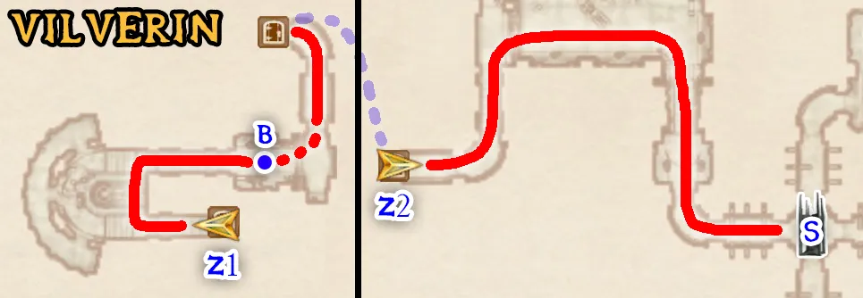
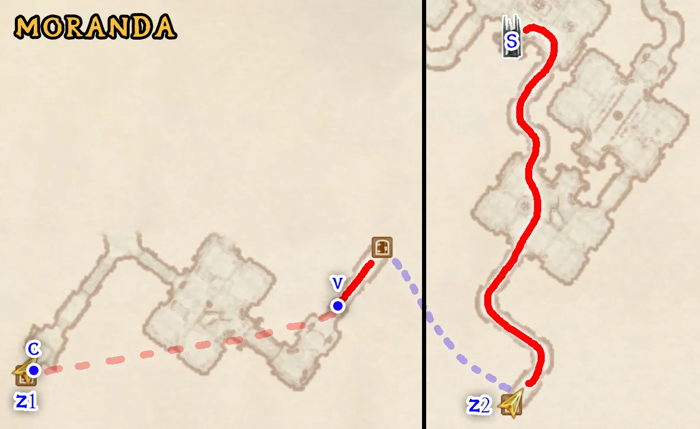
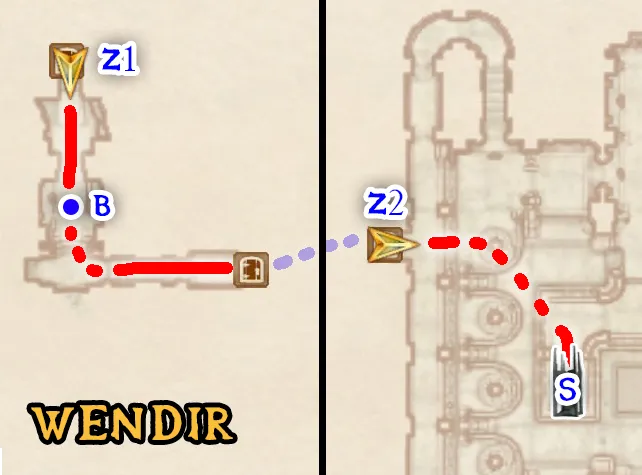
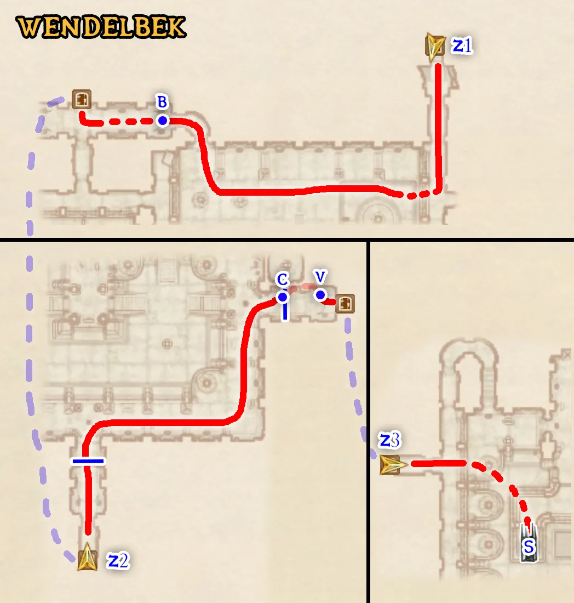
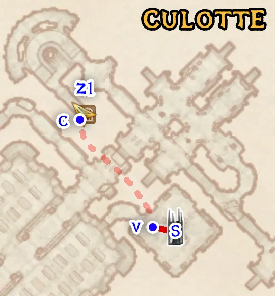
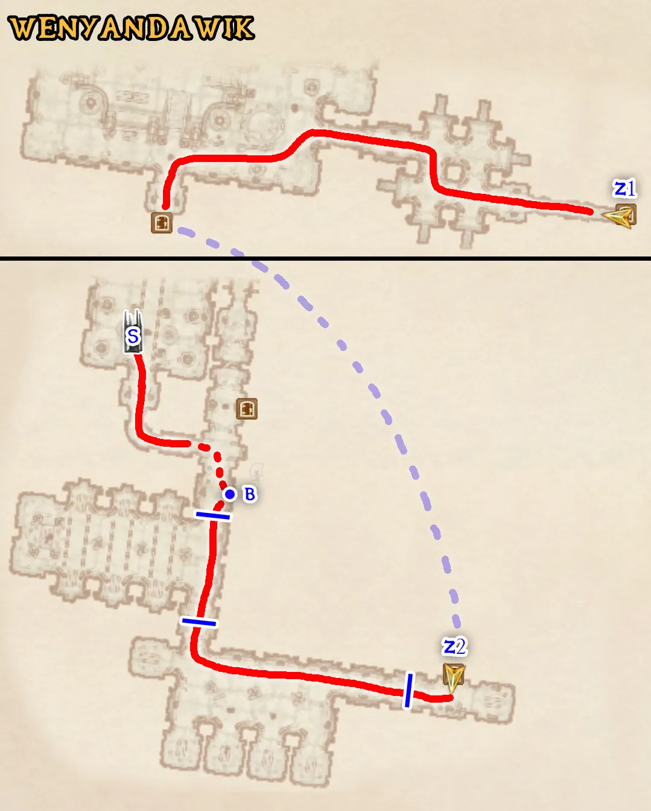

Oblivion 100% Speedrun Route (V4)
This route and all interactive tools were made by the PRCLive community. Check out the full credits here.
Before beginning the run, set up the following things before starting the timer:
- Make your character a Male Redguard.
- As soon as your character is created, immediately make a hard save before moving or inputting any other controls.
- Enter the console commands
sdt 12andtdtbefore the run starts, and make sure your wait timer is set to 1 hour. If the game crashes at any point, enter thesdt 12andtdtconsole commands again. - Move the difficulty slider to the easiest setting (all the way left).
- In the Video Options menu, change the Grass Distance slider to the lowest setting (all the way to the left.)
- Reload the hard save you made and do not input any other controls.
Time starts as soon as you click “Continue” on the first tutorial box that appears. You are not allowed to move before this happens.
- Click “Continue” on the quest pop-up to start the run. Press Caps Lock to always be sprinting, and press F3 to bring up the spell menu.
- Hotkey the Flare spell on hotkey 1 and equip Adrenaline Rush.
- Cast the Adrenaline Rush. spell, quicksave, then sit in the chair and make a save. TutorialSaddle_Save
- Quickload, then Save Clip through the right front edge of the NE archway.
- When you clip through the wall, run to the east until you spawn back in bounds. This is called Void Warping. If the clip doesn't work, try setting the quicksave up again and loading again.
- Jump up into the east archway and Save Clip through the seam between the two walls. Continue to run east after you clip until the black box is off the top of the screen, then wait until you Void Warp.
- Take all items off of the Goblin corpse and make a save. PermaKey_Save
- Open the door so that the popup shows up about using the Iron Key, and press escape to load the PermaKey_Save you just made. This sets up the Perma Key glitch, which allows you to open most doors without needing to pick the lock.
- Continue linearly to the end of the zone and Load Warp the TutorialSaddle_Save through the door at the end of this zone.
- Run ESE and Void Warp back in bounds. Continue to the large cave area and head NNE to make a save in either of the chairs along the left wall. RatSkip_Save
- Continue to the end of the zone and Load Warp the PermaKey_Save through to the next zone.
- Use your hotkey 1 to equip Flare again. Fall down and use Flare to kill the Mythic Dawn Agent up on the SW ledge.
- Head SE and punch the Emperor six times to make them chase you. Run back to the door in the main area and yield when Glenroy is close enough to you.
- Kill the Mythic Dawn Agent when the door opens, then wait for the next door to open and kill the other Mythic Dawn Agents that appear.
- Run up to the Emperor and wait for him to talk to you.
- Advance predetermined dialogue.
- Select The Steed as your birthsign.
- Advance all predetermined dialogue.
- Talk to Baurus, who will give you a torch.
- Hit the Emperor once to get them to chase you, then run ahead and kill any Mythic Dawn Agents on your way. Yield to the Emperor when you are by the door to the next area.
- Make sure Baurus spawns in the next area when you go through the door. If he doesn't you may need to go back through the door and enter the zone again.
- In the next area, hug the right wall and jump to the ledge across the gap. Save Clip facing west through the door. As soon as you clip through, run SSW and Void Warp to the sewer grate.
- Make a save in front of the grate and do not enter it. BaurusGrate_Save
- Head back through the door before the grate and head SE down the hall and Flare the Mythic Dawn Agent.
- If this door does not open, load the PermaKey_Save and do the Perma Key glitch.
- Head back and go through the Iron Gate and talk to Baurus.
- Advance predetermined dialogue.
- Select the Scout premade class.
- Advance predetermined dialogue.
- Make a hard save, which will be called Temp_Save later, and load the BaurusGrate_Save.
- Load Warp the RatSkip_Save through the grate.
- Look ESE and slightly down, then swim forward until you Void Warp in front of the final sewer grate.
- Exit the sewer, turn around and Load Warp the Temp_Save back into the sewer.
- Change your race to a Female High Elf, then make a save. InsideSewer_Save
- Exit the sewers.
- Make a save facing the sewer entrance outside. OutsideSewer_Save
- Fast travel to the Imperial City Market District and head WSW into the first archway, then hug the right wall until you find the Mystic Emporium, then make a save in front of it. MysticEmporium_Save
- Load Warp the InsideSewer_Save into the Mystic Emporium and exit the store.
- Time Warp into the Mystic Emporium, selecting Anvil Lighthouse as the fast travel location.
- Talk to Calindil.
- Haggle to 50% sell value, then sell the Chameleon and Flash Bolt scrolls. Buy 2 of any Absorb scroll that costs 14 or less, and 1 of another Absorb scroll of the same or less cost.
- Dupe the 1 stack using the 2 stack, pick one up, then repeat and pick up all scrolls so that you have 3 of one scroll and 2 of another. Now, Dupe the stacks back and forth until you have 768 of one and 1024 of another.
- Talk to Calindil again.
- From the 768 stack, sell 200, 200, 200, then 100 scrolls back to Calindil. From the 1024 stack, sell 200, 200, 200, then 100 scrolls. You should have 324 of one type, and 68 of another, as well as over 4,400 gold at the end.
- Buy the Hindering Touch and Touch of Rage spells.
- Exit Mystic Emporium and head two doors to the left and enter the Gilded Carafe.
- Talk to Claudette Perrick.
- Buy a Novice Mortar & Pestle, and any two restore fatigue ingredients that cost 4 gold or less.
- Dupe each ingredient you purchased until you have over 64 of each.
- Craft 64 potions to reach level 40 Alchemy. You should now have a level up pending.
- Drop all of the potions you made, and the two restore fatigue ingredients, keeping 1 of each ingredient for later.
- Fast travel to Cheydinhal Stables and enter the shack.
- Make a save in front of the bed. InfiniteLevel_Save
- Level up once normally selecting Endurance, Personality, and Luck as your attributes.
- Perform the Infinite Level-Up glitch repeatedly using the following setup until you are level 24:
- Quicksave your current character.
- Load the InfiniteLevel_Save. (This will be the autosave after the first cycle.)
- Sleep in the bed. As soon as the timer counts down at least one hour, press escape to bring up the pause menu and load the current quicksave file.
- Select Endurance, Personality, and Luck each time.
- Load Warp your level 24 character back into the tutorial sewer using the OutsideSewer_Save.
- Activate the sewer grate to bring up the popup, then change your class (Class Reset) as follows:
- Make a custom class with the following:
- Specialization: Magic
- Favored Attributes: Strength and Speed
- Major Skills: Acrobatics, Athletics, Destruction, Illusion, Mercantile, Mysticism, and Restoration.
- Exit the sewer normally by selecting the “Finished - Exit Sewers” option from the popup. (This completes Tutorial.)
- Fast travel to Bravil.
- Wait until 1am and head between the first two buildings on the left to talk to Nordinor.
- Buy 1 Skooma
- Drop the Skooma and pick it back up. Dupe the Skooma with the 68 scroll stack, and then the 324 scroll stack.
- Hotkey Skooma on hotkey 2. To Potion Stack Skooma optimally, drink 4 Skooma from the hotkey, then 4 from the inventory each time Skooma wears off to increase movement speed everywhere you go. Avoid jumping too much or else you will pass out when the Skooma wears off.
- Head SW towards the Mages Guild. Stop at the Chapel on your way.
- In the Chapel Hall downstairs, read 2920, Rain's Hand (v4) on the left shelf, and take the Nirnroot from the south room.
- Exit the Chapel and get the Nirnroot behind the Mages Guild before entering it.
- Go to the Mages Guild, wait until 9am, then talk to Kud-Ei.
- Join the Mages Guild.
- Yes, I want to join the guild.
- Recommendation.
- I'm ready.
- Varon Vamori.
- Mage's Staff.
- Activate Bravil Recommendation in your journal.
- Follow the Quest Marker to talk to Varon Vamori.
- Bribe to 65+ disposition.
- Ardaline.
- Mage's Staff.
- Take at least 7 Cheap Wine near the east corner of the ground floor.
- Take the Silver Dagger off of the bookshelf near the stairs.
- Take the Lesser Soul Gem from the SW bookshelf behind the back counter.
- Talk to Ita Rienus. She may be in the basement.
- Buy the Chameleon and Debilitate spells.
- Fast travel to Imperial City Talos Plaza District.
- Head NE, second door on the right to get to Soris Arenim's House.
- Talk to Soris Arenim.
- Bribe to 70+ disposition.
- Mage's Staff.
- It's a deal.
- Exit the house, head to the center of Talos Plaza, then head SE to Dorian's House on the left.
- With your fists lowered, bribe Dorian to max disposition. Raise your fists and talk to him again, bribing him until full disposition again.
- Cast Debilitate on Dorian and immediately pickpocket him. Pickpocket the gold stack from Dorian repeatedly until you reach 400,000 gold.
- Check that your bounty is only 40, then go outside and talk to a guard to pay the gold fine.
- Quicksave, load the MysticEmporium_Save, then Load Warp the quicksave through the door.
- Read The Black Arts on Trial skill book on the counter.
- Head SSE across the street to Rindir's Staffs and buy Apotheosis from Rindir.
- Dupe Apotheosis so that you have 2 of them in a single stack, then hotkey that stack on hotkey 1.
- Also hotkey the Minor Life Detection spell on hotkey 3
- Head SE to Red Diamond Jewelry and talk to Hamlof Red-Tooth.
- Buy a Brass Ring.
- Dupe about 300 lockpicks.
- Fast travel to the stable outside of Skingrad and head south to get the Apprentice Doomstone between 6pm and 6am.
- Fast travel to Skingrad West Gate. Travel North up the hill. The Mages Guild will be the second building on your left.
- Set a save outside of the Skingrad Mages Guild. SkingradMG_Save
- Enter the Mages Guild and wait until 8pm. Talk to Viggie the Cautious, who may be upstairs.
- Buy the Drain Skill: Alteration and Weakness to Magicka spells.
- Talk to Adrienne Berene.
- Recommendation.
- Yes, I'll do it.
- Fast travel to Bruma East Gate and head to the Mages Guild at the north end of the raised middle section of buildings. Wait until after 10am.
- Talk to Jeanne Frasoric.
- Recommendation.
- J'skar
- Talk to Selena Orania.
- Buy the Fortify Health and Superior Spell Reflection spells.
- Talk to Volanaro.
- Buy the Greater Dispel Other spell.
- Equip Minor Life Detection and cast it, looking for an invisible NPC. He will likely be downstairs.
- When you find him, equip and cast Greater Dispel Other on him.
- Talk to J'skar.
- Downstairs, read The Wolf Queen, v 3 on the desk in the room with the two beds, take the Redwort Flower on the bookshelf from the adjacent room down the hall, and take the Glow Dust from the back table in the room across the hallway.
- Follow the Quest Marker to talk to Jeanne Fraosric.
- J'skar. (This completes Bruma Recommendation.)
- Exit the Mages Guild and head South to the Chapel. Make a save facing the Chapel door. EarlyArcChapel_Save
- Fast travel to the Imperial City Temple District.
- Use Skooma Stacking to Save Clip through the door to the main center building.
- Go through the door that is clipping halfway through the floor.
- Immediately go back outside and run to the right along the wall until the quest updates.
- Talk to Martin. If he is not here, go back into the temple and wait until he appears.
- Advance predetermined dialogue.
- Follow me.
- Follow the Quest Marker until the quest updates and talk to Martin again.
- Watch the final cutscene until the pre rendered video part starts, then Alt + Tab out of and back into the game to skip it.
- Talk to High Chancellor Ocato.
- Advance predetermined dialogue.
- Exit the temple and fast travel to the Arcane University.
- Make a save in front of the Arcane University lobby. ArcaneUniversity_Save
- Use Skooma to Boost Jump off of the stairs to get over the gate. Fall over the other side and enter the leftmost door along the back wall, which is the Praxographical center.
- Head up the stairs and make a save at the door. Praxographical_Save
- Exit the building and head to the second to last door along the wall, which is the Chironasium.
- Head up the stairs and enter the upper level. Make a save facing back at the door. Chironasium_Save
- Load the EarlyArcChapel_Save. Go to the altar and pray to restore your damaged attributes. Drop Skooma so that you have 25 left.
- Quicksave, load the ArcaneUniversity_Save and Load Warp the quicksave into the door.
- Open the display case and take the 2 filled Grand Soul Gems and the 1 Empty Grand Soul Gem. This will require spamming auto-attempt until level 25 Security, then locking in one tumbler manually and auto-attempting until the lock opens.
- Quicksave, then load the Praxographical_Save and Load Warp the quicksave into the door.
- Go downstairs and go to the spellmaking altar to make the following spells with these exact names and effect orders. (All effects have no Area):
- Quicksave, load the Chironasium_Save, then Load Warp the quicksave through the door.
- Go downstairs to the enchanting altar. Dupe the Grand Soul Gems using the 68 scroll stack so that you have at least 43 of them. Make sure to leave at least one extra soul gem on the ground for later.
- Dupe the Brass Ring using the 68 scroll stack so that you have at least 42 of them.
- Make the following enchantments with these exact names and effect orders. (All effects have no Area):
- Pick up an extra Grand Soul Gem off the ground.
- Drop all but 2 scrolls from one of your scroll stacks.
- Use the 2 scroll stack to Dupe the _Stack0 weapon so that you have a stack of 2 of them.
- Hotkey the Cham100 ring on hotkey 8 and equip it.
- Repeat the following Perma Enchanting process for every “*Unique” ring you made earlier without exiting your inventory:
- Dupe the ring using the 2 scroll stack from earlier.
- Exit the inventory and pick up every copy of every ring.
- Repeat the following Perma Enchanting process for every “*Unique” ring stack you made earlier without exiting your inventory:
- Equip 1 copy of the ring.
- Use the 2 scroll stack to Dupe the copy of the ring that is not equipped.
- Pick up the scroll stack you dropped earlier.
- Your active effects tab should show a total of +170 Speed (+20 from The Steed), +30 Mercantile, +150 Athletics, and +100 Chameleon (+20 from Cham100).
| Name | Effect | Type | Magnitude | Duration |
|---|---|---|---|---|
| _BAcrobatics | Fortify Acrobatics | On Self | 100 pts | 1s |
| _BAlchemy | Fortify Alchemy | On Self | 100 pts | 1s |
| _BAlteration | Fortify Alteration | On Self | 100 pts | 1s |
| _BArmorer | Fortify Armorer | On Self | 100 pts | 1s |
| _BBlade | Fortify Blade | On Self | 100 pts | 1s |
| _BBlock | Fortify Block | On Self | 100 pts | 1s |
| _BBlunt | Fortify Blunt | On Self | 100 pts | 1s |
| _BConjuration | Fortify Conjuration | On Self | 100 pts | 1s |
| _BHandtoHand | Fortify Hand to Hand | On Self | 100 pts | 1s |
| _BHeavyArmor | Fortify Heavy Armor | On Self | 100 pts | 1s |
| _BLightArmor | Fortify Light Armor | On Self | 100 pts | 1s |
| _BMarksman | Fortify Marksman | On Self | 100 pts | 1s |
| _BRestoration | Fortify Restoration | On Self | 100 pts | 1s |
| _BSecurity | Fortify Security | On Self | 100 pts | 1s |
| _BSneak | Fortify Sneak | On Self | 100 pts | 1s |
| _BSpeechcraft | Fortify Speechcraft | On Self | 100 pts | 1s |
| _DAthletics1 | Drain Athletics | On Self | 100 pts | 4s |
| _DAthletics2 | Drain Athletics | On Self | 100 pts | 4s |
| _DHandtoHand | Drain Hand to Hand | On Self | 100 pts | 1s |
| _ElanteBoost1 | Fortify Magicka Fortify Speed Burden Weakness to Magic | On Self On Touch On Touch On Touch | 100 pts 3 pts 21 pts 100 pts | 4s 120s 4s 4s |
| _ElanteBoost2 | Fortify Magicka Fortify Speed Burden Weakness to Magic | On Self On Touch On Touch On Touch | 100 pts 3 pts 21 pts 100 pts | 4s 120s 4s 4s |
| _Stack1 | Summon Skeleton Fortify Magicka | - On Self | - 100 pts | 21s 3s |
| _Stack2 | Reflect Spell Drain Armorer Fortify Magicka | On Touch On Touch On Self | 34 pts 3 pts 100 pts | 12s 1s 2s |
| _Stack3 | Weakness to Magic | On Touch | 100 pts | 3s |
| _Stack4 | Weakness to Magic | On Touch | 100 pts | 3s |
| _Stack5 | Fortify Speed Fortify Athletics Fortify Health Drain Armorer Reflect Spell | On Touch On Touch On Touch On Touch On Touch | 4 pts 4 pts 34 pts 3 pts 15 pts | 120s 120s 120s 1s 14s |
Make sure each “*Unique” item listed has a numerical name that is different from all previous permanent enchantments.
| Name | Item | Quantity | Effects | Magnitude | Duration |
|---|---|---|---|---|---|
| _Stack0 | Silver Dagger | 1 | Weakness to Magic Fortify Magicka | 100 pts 100 pts | 3s 3s |
| Cham100 | Brass Ring | 1 | Chameleon | 20% | - |
| *Unique | Brass Ring | 4 | Chameleon | 20% | - |
| *Unique | Brass Ring | 15 | Fortify Athletics | 10 pts | - |
| *Unique | Brass Ring | 15 | Fortify Speed | 10 pts | - |
| *Unique | Brass Ring | 4 | Fortify Strength | 10 pts | - |
| *Unique | Brass Ring | 3 | Fortify Mercantile | 10 pts | - |
For this section, you will need to use the Interactive Map (middle click to view in new tab) to locate all of the map markers. Make sure you have “Location TSP” selected in the map settings at the top and have Locations checked, and all other marker types unchecked. Click on locations to check them off as you go, following the circuit in the order shown. Ignore all other icons for now.
- Quicksave, then load the ArcaneUniversity_Save and Load Warp the quicksave through the door.
- Fast travel to the Imperial City Talos Plaza District.
- Change the difficulty to the hardest setting (all the way to the right).
- Hotkey each _Stack spell on hotkeys 1 through 5, then hotkey the _Stack0 dagger stack on hotkey 6 and equip it.
- Cast/Attack to summon and apply spell effects to a Skeleton using the spells/weapons in the following sequence, with X representing the _Stack0 dagger:
- [ 1 - X - X - 2 - X ] - [ 3 - X - 4 - X - 3 - X - 4 - X ] - [ 5 ]
- You should now have a significant Speed/Athletics/Health boost from Spell Stacking to explore the map without dying of fall damage constantly.
- Save Clip (sometimes without needing to reload the cell due to how fast you move) through the city door to get outside of the city, then start discovering locations starting with Dzonot Cave to the SW, heading further SW to Fanacasecul next.
- When the spell effects wear off, repeat step 5 to reapply the speed boost and continue following the Location TSP path on the interactive map until all locations on it have been found.
Some tips about navigating the out of bounds version of the map:
- If the spell stack doesn't seem to be working anymore, the dagger needs to be recharged. Simply unequip and reequip the _Stack0 dagger stack with hotkey 6 to recharge using the Stack Refresh glitch.
- If you are hearing rapid footsteps and don't seem to be moving forward, try strafing and jumping repeatedly to get out of wherever you are stuck. This usually happens when going uphill.
- If you are stuck even after strafing and jumping, casting the _Stack1 spell can help to use the skeleton as a reference point.
- In general, avoid jumping so that you don't launch yourself really high into the air.
- After finishing the circuit, you should have 308 Places Found. (You currently have [PLACES] Places Found.)
- Set the difficulty back to the easiest setting (all the way to the left).
- Hotkey the Apotheosis stack on hotkey 1. Whenever you run out of casts on the staff, unequip/requip it using hotkey 1 to recharge it using the Stack Refresh glitch.
- Fast travel to Chorrol South Gate and wait until 10am-4pm.
- Head West to enter Northern Goods and Trade.
- Walk towards an Argonian named Dar-Ma that is approaching you. You will automatically talk to her.
- Yes, I am. Pleased to meet you.
- Talk to Seed-Neeus.
- Training.
- Exit the building and head East to enter The Grey Mare.
- Talk to Valus Odiil.
- Sons
- Creatures
- Yes, I'll help.
- Talk to Reynald Jemane.
- Talk to Emfrid.
- Invest 500 gold in this shop (This invests in Emfrid.)
- Fast travel to the Stable outside Chorrol.
- Enter the shack to talk to Bongond.
- Buy a horse.
- 2500 you say? I'll take it. (This purchases the Chestnut Horse.)
- Fast travel to Weynon Priory and head NW to talk to Rallus Odiil.
- Valus Odiil
- Follow the current Quest Marker and make a save outside of the Weynon House door. Weynon_Save
- Head into Weynon House and go upstairs to talk to Jauffre.
- Select the top dialogue option every time. (This completes Deliver the Amulet).
- Fast travel to Odiil farm, the village icon SE of Weynon Priory.
- Get the Nirnroot inside the farmhouse.
- Look west to see Rallus Odiil on the edge of the render distance. If he is not there yet, wait 1 hour.
- Harvest lettuce from the farm outside.
- Wait 1 hour to spawn Rallus Odiil next to you at the farm.
- Wait another hour again to start the goblin wave fight. It does not matter if the brothers die.
- Kill all of the goblins to update the quest. They will spawn behind the big rocks directly east, south, and north, in that order.
- Fast travel to Abandoned Mine and very fast east of Bravil. Make a quicksave, then enter the mine and hug the right wall until you find a Battered Stool near the end of the zone.
- Sit on the Battered Stool and make a save. TowerSkip_Save
- Quickload to exit the mine.
- Fast travel to the Quest Marker (Kvatch Oblivion Gate).
- Enter the Oblivion portal. Jump around the gates on the bridge and make your way to the main tower directly in front of you.
- Quicksave and attempt to harvest the Bloodgrass to the right of the entrance to the tower, quickloading until you succeed.
- Quicksave outside the tower, then Load Warp the TowerSkip_Save into the tower.
- Look at the door to the Sigil directly below you. Make a save in front of the door. KvatchSigil_Save
- Load Warp the quicksave into the Sigil room.
- Collect the Sigil Stone and fall down without taking fall damage to exit the area early.
- Once you have closed the gate, activate the Breaking the Siege of Kvatch quest. (This closes Oblivion Gate - Kvatch.)
- Kill all the remaining enemies and follow the Quest Marker to talk to Savlian Matius.
- I'm ready. Let's go.
- Enter Kvatch and kill all the enemies in the first area, then talk to Savlian Matius again.
- Make a save outside of the chapel facing the door. DeAggro_Save
- Enter the Chapel. Leave and enter the chapel again to spawn Savlian Matius in.
- Talk to Brother Martin.
- Select the top dialogue option every time.
- Talk to Savlian Matius. He will exit dialogue with you automatically. Talk to him a second time.
- Yes, let's go. (This completes Breaking the Siege of Kvatch.)
- Exit out the north chapel door, making sure that Savlian Matius properly spawns in the next area.
- Kill all enemies in the area and wait near the gate entrance for Savlian Matius to talk to you automatically.
- Castle Gate.
- Follow the Quest Marker to talk to Berich Inian.
- Guard House Key.
- Savlian's orders. No time to explain.
- Go back out to the previous area and use Skooma Stacking to Save Clip through the corner of the gate.
- Enter the trapdoor and wait for the quest to update.
- Exit the trapdoor and activate the Gate wheel.
- Head NW to make a save outside the entrance to the castle. Savlian_Save
- Enter the castle. Head straight NW to the farthest back door of the first zone.
- In the second zone (Great Hall), read A Dance in Fire, v4 on a table to the right. Continue to the farthest NW back door of each zone.
- Once inside the Count's Quarters, take the Colovian Signet Ring off the Count's body.
- Quicksave, then load the Savlian_Save and Load Warp the quicksave through the door.
- Follow the Quest Marker to talk to Savlian Matius.
- I'm sorry. He didn't make it.
- Yes, here it is. (This completes The Battle for Castle Kvatch.)
- Quicksave, then load the Weynon_Save and Load Warp the quicksave through the door.
- Head east up the stairs and look in the empty chest. The quest will not update.
- Leave the building and head SE to kill the Mythic Dawn Agents in the chapel. (This completes Find the Heir.)
- Talk to Jauffre.
- Advance predetermined dialogue.
- Leave the Chapel and kill any Mythic Dawn Agents that are outside.
- Make sure Jauffre spawned outside, then fast travel to the Quest Marker. Run towards the gate and try to open it repeatedly. The gate will open after a few seconds.
- Fast travel to Vindasel, the ruin SW of the Imperial City Waterfront.
- Make a save outside of Vindasel. This will be called Temp_Save later.
- Save Clip through the corner to the right of the first archway and run as far west as you can until you Void Warp.
- Kill Umbra and take the Umbra sword item.
- Quicksave, load the Temp_Save and Load Warp the quicksave through the door.
- Exit Vindasel and fast travel to Clavicus Vile's Shrine NW to talk to Ma'Raska.
- Shrine of Clavicus Vile.
- What kind of business?
- Wait for the quest to update, then activate the dog statue.
- Select “Yes.” (This completes Clavicus Vile.)
- Fast travel to the Quest Marker to talk to Martin.
- Advance predetermined dialogue. (This completes Weynon Priory.)
- Follow the Quest Marker to talk to Jauffre.
- Yes, I will join the Blades.
- Amulet of Kings.
- Enter Cloud Ruler Temple main hall and make a save facing the East Wing door. CloudRuler_Save

Fast travel to the Imperial City Market District and wait until 12pm:
- Office of Imperial Commerce
- Talk to Vinicia Melissaeia to buy the house.
- Buy a house in town
- Bribe to 50+ disposition if you cannot purchase the house.
- I just happen to have 2000 gold. (This purchases Shack for Sale.)
- Read The Wolf Queen, v 4 on the counter in front of her.
- The Best Defense
- Talk to Maro Rufus.
- Invest 500 gold in this shop (This invests in Maro Rufus.)
- Cast the _BHeavyArmor spell and immediately talk to Varnado.
- Training.
- Invest 500 gold in this shop (This invests in Varnado.)
- The Gilded Carafe
- Talk to Claudette Perrick.
- Invest 500 gold in this shop (This invests in Claudette Perrick.)
- Nirnroot in the back of the room.
- Slash 'N Smash
- Talk to Urbul gro-Orkulg.
- Invest 500 gold in this shop (This invests in Urbul gro-Orkulg.)
- Mystic Emporium
- Nirnroot in the Private Quarters upstairs in the side room.
- Divine Elegance
- Talk to Palonirya.
- Training. (This completes the Mercantile Training quest.)
- Invest 500 gold in this shop (This invests in Palonirya.)
- Stonewall Shields
- Talk to Viator Accius.
- Invest 500 gold in this shop (This invests in Viator Accius.)
- Rindir's Staffs
- Talk to Rindir.
- Invest 500 gold in this shop (This invests in Rindir.)
- Black Horse Courier
- Read 2920, Sun's Height (v7) on the back desk.
- Three Brothers Trade Goods
- Talk to Tertullian Verus.
- Invest 500 gold in this shop (This invests in Tertullian Verus.)
- Talk to Sergius Verus.
- Buy all of the home furnishings. (This completes Buy a house in the Imperial City.)
- Buy 1 bear pelt.
- Invest 500 gold in this shop (This invests in Sergius Verus.)
- Jensine's “Good as New” Merchandise
- Talk to Jensine.
- Invest 500 gold in this shop (This invests in Jensine.)
- Thoronir.
- Start from the beginning.
- The Feed Bag
- Talk to Delos Fandas.
- Invest 500 gold in this shop (This invests in Delos Fandas.)
- Red Diamond Jewelry
- Talk to Hamlof Red-Tooth.
- Invest 500 gold in this shop (This invests in Hamlof Red-Tooth.)
- The Main Ingredient
- Talk to Ogier Georick.
- Invest 500 gold in this shop (This invests in Ogier Georick.)
- A Fighting Chance
- Cast the _BArmorer spell and immediately talk to Rohssan.
- Training.
- Invest 500 gold in this shop (This invests in Rohssan.)
- Read Last Scabbard of Akrash in the Private Quarters upstairs side room on the top shelf.
- The Merchants Inn
- Talk to Velus Hosidius.
- Invest 500 gold in this shop (This invests in Velus Hosidius.)
- First Edition
- Make a save outside in front of the door. Phintias_Save
- Talk to Phintias.
- Buy and read The Armorer's Challenge.
- Invest 500 gold in this shop (This invests in Phintias.)
- Read Cherim's Heart of Anequina in the Private Quarters upstairs on a desk.
- The Copious Coinpurse
- Talk to Thoronir.
- Inventory
- Where do you get it?
- Invest 500 gold in this shop (This invests in Thoronir.)
- Find Gin-Wulm walking around outside and talk to him.
- Training.
- He won the Armorer's Challenge. (This completes the Armorer Training quest.)

Fast travel to Anvil Castle Gate and wait until it is between 5:00pm to 6:00pm:
- Chapel of Dibella
- Read 2920, Frostfall (v10) in the Chapel Hall on a desk in the East side room.
- Benirus Manor
- Make a save outside the front door. AnvilManor_Save
- Heinrich Oaken-Hull's House
- Nirnroot upstairs in a side room.
- Outdoor Statue
- Get the Nirnroot by the base of the statue.
- Fighters Guild
- Make a save facing the door to the second floor. AnvilFighters_Save
- Cast the _BBlunt spell and immediately talk to Azzan.
- Training.
- Join the Fighters Guild.
- Yes. Sign me up. (This completes Join the Fighters Guild.)
- Contract.
- Rats.
- Cast the _BBlade spell and immediately talk to Rhano.
- Training
- Mages Guild
- Talk to Carahil.
- Recommendation.
- Yes, I'm ready.
- Go on.
- Training
- Talk to Felen Relas.
- Invest 500 gold in this shop (This invests in Felen Relas.)
- Retrieve the Dragon's Tongue and Nightshade in the upstairs library. The ingredients are on a table through the door in the NW corner of the library.
- Arvena Thelas' House
- Follow the Quest Marker to talk to Arvena Thelas.
- Rats.
- Follow the Quest Marker to go down to the basement and kill the Starving Mountain Lion. Take the Lion Pelt.
- Follow the Quest Marker to talk to Arvena Thelas again.
- Advance predetermined dialogue.
- The Count's Arms
- Make a save outside of the inn facing the door. CountsArms_Save
- Talk to Velwyn Benirus (to the left of Wilbur).
- Manor.
- Yes, here's 5,000 gold. (This purchases Benirus Manor.)
- Quicksave, then load the AnvilManor_Save and Load Warp the quicksave through the door.
- Sleep in the bed upstairs for 1 hour.
- Talk to Lucien Lachance if he appears. Sleep in the bed again for another hour if this happens.
- [Say nothing.]
- [Say nothing.]
- [Say nothing.]
- Kill the three ghosts that spawn and take Ectoplasm from one of them, then head back downstairs.
- Near the front door is a Skeletal Hand and note in the NNW corner. Take the hand and note.
- Quicksave, then load the CountsArms_Save and Load Warp the quicksave through the door.
- Talk to Wilbur.
- Velwyn Benirus.
- Invest 500 gold in this shop (This invests in Wilbur.)
- Pinarus Inventius' House
- Follow the Quest Marker. Cast the _BMarksman spell and immediately talk Pinarus Inventius.
- Bribe to 80+ disposition.
- Training
- Mountain Lions.
- Gogan's House
- Wait until it is after 5pm, then talk to Maelona.
- Sure, what's he done?
- Advance predetermined dialogue.
- Gang.
- Yes, I'll help you.
- Gang.
- Talk to Gogan. Wait until it is around midnight to 1am if he isn't here.
- Gang.
- Fast travel to Anvil Stables.
- Go into the shack and buy a horse from Clesa.
- Buy a horse.
- 4000 gold? I'll take it. (This purchases the Anvil White Horse.)
- Head WNW up the hill and kill the four lions.
- Activate the Anvil Recommendation quest. Fast travel to the Quest Marker to talk to Arielle Jurard.
- Follow the Quest Marker to talk to Christophe Marane.
- Invest 500 gold in this shop (This invests in Christophe Marane.)
- Bed.
- I'm a merchant.
- I'll take it.
- You will automatically be approached by Caminalda.
- Yes, that's right.
- Go upstairs to your bed and wait 1 hour. Arielle Jurard will appear. Talk to her.
- Sleep in the bed for 1 hour.
- If you level up, choose Strength, Endurance, and any non-Luck attribute with the lowest bonus.
- Talk to Lucien Lachance if he appears.
- [Say nothing.]
- [Say nothing.]
- [Say nothing.]
- Head towards the Quest Marker and kill Caminalda.
- Fast travel to Anvil Dock Gate.
- Activate A Rat Problem and follow the Quest Marker to talk to Pinarus Inventius.
- Follow the Quest Marker to talk to Arvena Thelas.
- Mountain Lions.
- Follow the Quest Marker to go down to the basement and kill the Starving Mountain Lion again.
- Follow the Quest Marker to talk to Arvena Thelas again.
- Quill-Weave.
- Go behind Arvena Thelas' House and wait until 8pm. When Quill-Weave appears, wait another hour to spawn her at the end of her sneaking routine.
- When the quest updates, talk to Quill-Weave.
- Advance predetermined dialogue.
- Mountain Lions.
- Follow the Quest Marker to talk to Arvena Thelas.
- Quill-Weave was behind it. (This completes A Rat Problem.)
- Quicksave, then load the AnvilFighters_Save and Load Warp the quicksave through the door.
- Talk to Azzan. Sometimes he is on the third floor.
- Advancement.
- Contract.
- Norbert Lelles.
- If Lucien Lachance did not appear earlier, sleep in one of the beds on the first floor until he talks to you.
- Select the “[Say Nothing.]” dialogue option every time.
- Head next door to the Mages Guild and talk to Carahil.
- Rogue Mage. (This completes Anvil Recommendation.)
- Fast travel to Anvil Dock Gate.
- Activate The Unfortunate Shopkeeper. Fast travel to the Quest Marker to talk to Norbert Lelles.
- Invest 500 gold in this shop (This invests in Norbert Lelles.)
- Break-ins.
- Wait until 11:00pm-1:00am while in the store and kill the bandits when they appear.
- Follow the Quest Marker to talk to Norbert Lelles.
- Break-ins. (This completes The Unfortunate Shopkeeper.)
- Talk to Maenlorn.
- Invest 500 gold in this shop (This invests in Maenlorn.)
- Wait for a few seconds and two women will enter the room.
- Talk to Signy Home-Wrecker.
- Talk to Faustina Cartia.
- Join us.
- Activate The Siren's Deception. Fast travel to the Quest Marker and enter the house.
- Faustina Cartia will approach you. Do not kill her before talking to her or you won't get +1 fame.
- What if I say no?
- I'm here for Gogan's ring.
- At this point three girls will attack you. Kill all of them.
- Maelona will approach you.
- Gang.
- Advance predetermined dialogue. (This completes The Siren's Deception.)
- Activate Blade Training and fast travel to the Quest Marker.
- Kill Alix Lencolia. (This completes Blade Training.)
- Talk to S'jirra.
- Jumbo Potatoes.
- Kill S'jirra (This completes The Potato Snatcher.)
- Talk to Abhuki.
- Invest 500 gold in this shop (This invests in Abhuki.)
- Activate A Knife in the Dark.
- Fast travel to the Quest Marker to find Rufio. As soon as you enter the inn, there is a trap door to your left that leads downstairs.
- Kill Rufio, then sleep in the bed in the same room.
- If you level up, choose the attributes that will give you the least total points, ignoring Luck.
- Lucien Lachance will talk to you automatically.
- [Say nothing.]
- Pickpocket Lucien Lachance. A quest popup should appear.
- Sleep in the bed again.
- Kill the Wrath of Sithis. (This completes A Dark Exile.)
- On your way out of the inn, talk to Manheim Maulhand.
- Invest 500 gold in this shop (This invests in Manheim Maulhand.)
- Fast travel to Desolate Mine NW of Cheydinhal. Make a save outside facing the front door. This will be called Temp_Save later.
- Enter the cave and hug the right wall to go through the locked door.
- If this door does not open, load the PermaKey_Save and do the Perma Key glitch.
- Go into the main area of the mine and kill all 10 of the goblins by hugging the right wall. Check your map to make sure you have explored every area and killed every goblin.
- Quicksave, load the Temp_Save, and Load Warp the quicksave through the door. Exit the cave.

Fast travel to Cheydinhal - East Gate:
- Abandoned House
- Enter the basement and turn around to face the door. Make a save in front of the door. AbandonedHouse_Save
- Make your way down to the red door in the basement and activate it.
- Select “Sanguine, my Brother.”
- Follow the Quest Marker to find Ocheeva. She will talk to you automatically.
- Head straight West to the back area and go through the door to Ocheeva's Quarters.
- Make a save at the trapdoor in the NNW corner. Sanctuary_Save
- Go back through the main door to Ocheeva's Quarters and kill Telaendril. Try to also kill Gogron gro-Bolmog before getting kicked out, but this is not required.
- Fast travel to Black Waterside Stables outside of Cheydinhal.
- Enter the shack and sleep in the bed.
- Kill the Wrath of Sithis. (This completes Another Dark Exile.)
- Buy the horse from Tovas Selvani.
- Buy a horse.
- 5000 gold is a lot, but I'll do it. (This purchases the Cheydinhal Black Horse.)
- Quicksave, load the Sanctuary_Save, then Load Warp the quicksave through the trapdoor.
- Follow the Quest Marker to talk to Vicente Valtieri.
- Contract.
- Yes, I'll accept this contract. (This completes Welcome to the Family.)
- Quicksave, load the AbandonedHouse_Save and Load Warp the quicksave through the door.
- Wait until 2pm.
- Cheydinhal Guard/Llevana Nedaren's House
- Talk to the Cheydinhal Guard standing outside.
- Talk to Llevana Nedaren. Enter/exit Llevana Nedaren's House to spawn her next to you if she isn't outside.
- Fines.
- Advance predetermined dialogue
- Cast Touch of Rage on Aldos Othran, who will be by the bridge behind Llevana Nedaren's House. Unequip your 100Cham ring to drag him towards Llevana Nedaren. Make sure any NPC kills him, but that no other NPCs die. The quest should update. Re-equip 100Cham.
- Talk to Llevana Nedaren.
- Aldos Othran.
- Riverview
- Get the Nirnroot at the top of the stairs.
- Bridge
- Nirnroot next to the bridge.
- Willow Bank
- Read Incident in Necrom on the second floor table by the bed.
- Rythe Lythandas' House
- Talk to Tivela Lythandas.
- Rythe Lythandas
- There's no time for idle chatter.
- Advance predetermined dialogue once.
- Don't worry. I'll find Rythe.
- Activate A Brush with Death and follow the Quest Marker to find the painting.
- Make a save facing the painting. This will be called Temp_Save later.
- Talk to Rythe Lythandas.
- Thief
- Brush of Truepaint
- No thanks. How do we get out of here?
- Painted Trolls
- Follow the Quest Marker to head south over the rocks to a clearing with the Bosmer Thief corpse.
- Take the Brush of Truepaint off the corpse.
- Quicksave, load the Temp_Save, then Load Warp the quicksave through the painting.
- Follow the Quest Marker to talk to Rythe Lythandas. Wait 1 hour to force him to start making the painting.
- Exit the painting and talk to Rythe Lythandas to finish the quest. (This completes A Brush with Death.)
- Mages Guild Well
- Enter the well.
- If this door does not open, load the PermaKey_Save and do the Perma Key glitch.
- Get the Nirnroot at the south end of the well.
- On the west end of the well, take the Ring of Burden off of Vidkun's corpse.
- Mages Guild
- Head east down into the basement.
- Read The Firsthold Revolt on the bookshelf next to the crystal ball at the bottom of the stairs.
- Head west and open the locked door, then open the locked drawers and take the Black Soul Gems.
- If this door does not open, load the PermaKey_Save and do the Perma Key glitch.
- Talk to Falcar. He may be anywhere in the building and is wearing black.
- Recommendation.
- Yes, I'm ready.
- Wait for the quest to update and find and talk to Deetsan. She is Argonian.
- Recommendation.
- Wait for the quest to update and talk to Deetsan again. Drop the Ring of Burden. (This completes Cheydinhal Recommendation.)
- Talk to Eilonwy. If she is not here, wait until 9pm or 9am.
- Invest 500 gold in this shop (This invests in Eilonwy.)
- Fighters Guild
- Talk to Burz gro-Khash.
- Contract.
- Wait for the quest to update and talk to Burz gro-Khash again.
- Contract. (This completes The Desolate Mine.)
- Advancement.
- Contract.
- Fast travel to Chorrol North Gate.
- Wait until 10am.
- Make a save outside the Mages Guild, which is the second building on your right after going under the first archway. ChorrolMG_Save
- Enter the Mages Guild. Cast the _BConjuration spell and immediately talk to Alberic Litte.
- Training
- Buy the Soul Trap spell.
- Read A Game at Dinner on the SE bookshelf of the main floor.
- Talk to Angalmo.
- Invest 500 gold in this shop (This invests in Angalmo.)
- Cast the _BAlteration spell and immediately talk to Athragar.
- Training
- Buy the Dominate Humanoid spell.
- Talk to Teekeeus.
- Recommendation.
- Earana.
- Activate Fingers of the Mountain.
- Follow the Quest Marker to talk to Earana.
- Yes, I'm interested.
- Talk to Honditar, who should also be by the tree. He may be behind the Fighters Guild.
- Training.
- Go into Francois Motierre's House which is two houses to the left of the Mages Guild, and kill Francois Motierre.
- Follow the Quest Marker to talk to Teekeeus.
- Fingers of the Mountain.
- Fast travel to the Quest Marker to get the Fingers of the Mountain book on the Charred Remains.
- Fast travel to Hackdirt, south of Chorrol.
- Enter Moslin's Inn directly behind you and talk to Vlanhonder Moslin.
- Invest 500 gold in this shop (This invests in Vlanhonder Moslin.)
- Head SSW to enter Moslin's Dry Goods and talk to Etira Moslin.
- Invest 500 gold in this shop (This invests in Etira Moslin.)
- Head NW to Natch Pinder's House and take the Nirnroot upstairs.
- Head directly south into the broken building you face as you leave Natch Pinder's House to enter a trapdoor on the ground next to a fireplace.
- Progress through the cave system to find the cell with Dar-Ma. Talk to her.
- I'll let you out.
- Unlock the cell and make sure Dar-Ma is following you. Make sure there are no hostile enemies around.
- Quicksave, load the ChorrolMG_Save, then Load Warp the quicksave through the door.
- Follow the Quest Marker to talk to Teekeeus.
- Fingers of the Mountain.
- Here's the book. (This completes Fingers of the Mountain.)
- Go outside and find Earana again. She may be at the Grey Mare near the south end of town.
- Advance predetermined dialogue.
- No, I won't do that. (This completes Fingers of the Mountain, Part II.)
- Wait 1 hour outside. Dar-Ma may talk to you, but it is fine if she doesn't appear at all.
- Head next door to the Fighters Guild.
- Enter the basement. Cast the _BBlock spell and immediately talk to Lum gro-Baroth.
- Training
- Make a save facing the door to exit the basement. ChorrolFG_Save
- Activate Unfinished Business. Follow the Quest Marker to talk to Vilena Donton.
- Duties.
- Follow the Quest Marker to talk to Modryn Oreyn.
- Duties.
- Maglir.
- Defaulted.
- Go upstairs to the second floor and enter the Chorrol Fighters Guild Tower door.
- Enter the top trapdoor at the end of the corridor.
- Take Hallgerd's Tale out of the middle chest and read it.
- Fast travel to Bleak Flats Cave, North of Skingrad.
- Enter Bleak Flats Cave and kill the seven Deranged Zombies as you go through the cave. Look at the in game map to make sure you aren't skipping sections of the cave.
- Read Lord Jornibret's Last Dance on the table at the end of the cave.
- Talk to Erthor.
- Okay, follow me.
- Quicksave, load the SkingradMG_Save, then Load Warp the quicksave through the door.
- Wait 2 hours, then 1 hour to get Erthor to move, then follow the Quest Marker to talk to Adrienne Berene.
- Recommendation.
- Go upstairs to the living quarters, and hug the left wall to enter the first door.
- Read Daughter of the Niben on the middle shelf.
- Exit the Mages Guild and head directly across the street to enter Colovian Traders.
- Wait until 1pm, then talk to Shum gro-Yarug with your weapon out.
- Bribe him to max disposition.
- Exit dialogue and put the weapon away, talk to Shum gro-Yarug again.
- Buy a house in town.
- It's a great deal at 25,000 gold. (This purchases Rosethorn Hall.)
- Exit/enter the building again to reset the store inventory.
- Talk to Gunder.
- Buy all of the home furnishings. (This completes Buying a house in Skringrad.)
- Invest 500 gold in this shop (This invests in Gunder.)
- Talk to Eyja.
- Sounds good, I accept. (This completes Helping Hands.)
- Activate Unfinished Business.
- Follow the Quest Marker to talk to Maglir.
- Defaulted.
- Brenus Astis' Journal.
- Talk to Erina Jeranus.
- Invest 500 gold in this shop (This invests in Erina Jeranus.)
- Go into Sinderion's Cellar via the door in the back of the main area of the West Weald Inn.
- Talk to Sinderion.
- Invest 500 gold in this shop (This invests in Sinderion.)
- Nirnroot.
- Yes, tell me about that odd root.
- Elixir of Exploration.
- Talk to Sinderion.
- Elixir of Exploration.
- Fast travel to the Quest Marker to enter Fallen Rock Cave.
- Follow the Quest Marker through the cave to find and take Brenus Astis' Journal.
- Quicksave, load the ChorrolFG_Save, then Load Warp the quicksave through the door.
- Follow the Quest Marker to talk to Modryn Oreyn.
- Defaulted.
- I completed the task. Here's the journal. (This gives you +1 Fame and completes Unfinished Business.)
- Duties.
- Causing trouble.
- Fast travel to Leyawiin Stables.
- Enter the shack and buy a horse from Cat-Face.
- Buy a horse.
- Only 500 gold? I buy one. (This purchases the Leyawiin Paint Horse.)
- Talk to Lerexus Callidus who will be standing outside near the stable.
- Skooma Dealers
- Kill Lerexus Callidus. (This completes Raid on Greyland.)

Enter Leyawiin - West Gate:
- Five Claws Lodge
- Talk to Vantus Prelius.
- Causing trouble.
- Blackwood Company.
- You need work to keep busy.
- Talk to Witseidutsei.
- Invest 500 gold in this shop (This invests in Witseidutsei.)
- The Great Chapel of Zenithar
- In the Chapel Hall, read Sithis in the south side room on the desk.
- Margarte's House
- Wait until 9am before entering.
- Get the Nirnroot in her house. It is through the first door on the right, then through the next door in that room.
- Dupe 6 Ectoplasm and talk to Margarte.
- Fighters Guild Jobs.
- Fighters Guild Jobs.
- Make sure you keep at least one Ectoplasm for a later quest.
- Follow the Quest Marker to talk to Vantus Prelius.
- Fighters Guild Jobs.
- Three Sisters' Inn
- Talk to Shuravi.
- Invest 500 gold in this shop (This invests in Shuravi.)
- Southern Books
- Talk to Bugak gro-Bol.
- Invest 500 gold in this shop (This invests in Bugak gro-Bol.)
- Read Reality & Other Falsehoods on the second floor on the top shelf of the bookshelf next to the small table.
- Mages Guild
- Make a save outside of the building facing the door. LeyawiinMG_Save
- Talk to S'drassa.
- Advance predetermined dialogue.
- Certainly. Please proceed.
- Garridan's Tears.
- Invest 500 gold in this shop (This invests in S'drassa.)
- Read Withershins on the 2nd Floor East. It is on top of the smaller corner bookshelf.
- Talk to Dagail.
- Yes, I'll help.
- Activate Leyawiin Recommendation.
- Fast travel to Fort Blueblood SSE of Leyawiin.
- Enter the fort and take the first right. Use Skooma Stacking to Save Clip through the left side of the gate, then proceed through the door to the next area.
- If this door does not open, load the PermaKey_Save and do the Perma Key glitch.
- Hug the right wall and go through the locked door in the next zone until you find a coffin. Take Manduin's Amulet from it.
- If this door does not open, load the PermaKey_Save and do the Perma Key glitch.
- Kalthar will talk to you automatically as you leave the dungeon. Answer however you want and then kill him.
- Quicksave. Load the LeyawiinMG_Save and Load Warp the quicksave through the door.
- Follow the Quest Marker to talk to Dagail.
- Seer's Stone.
- Exit dialogue and talk to Dagail again. (This completes Leyawiin Recommendation.)

Fast travel to the Elven Gardens District and wait until 9am:
- Guard House
- Read A Dance in Fire, v2 on the table by the stairs.
- Irene Metrick's House
- Kill Irene Metrick. (This completes Blunt Training.)
- King and Queen Tavern
- Talk to Ley Marillin.
- Invest 500 gold in this shop (This invests in Ley Marillin.)
- Talk to Velwyn Benirus.
- Bribe him to 60+ disposition.
- Manor.
- Lorgren Benirus.
- Lift the Curse.
- Luther Broad's Boarding House
- Kill Astav Wirich, the man in the chair.
- Take the book Mythic Dawn Commentaries 1 off the corpse of Astav Wirich.
- Talk to Baurus.
- Advance predetermined dialogue. All choices are eventually forced.
- Talk to Luther Broad.
- Invest 500 gold in this shop (This invests in Luther Broad.)
- Dovyn Aren's House
- Read The Dragon Break upstairs on the table next to the desk on top of the red book.
- Quicksave, load the ChorrolFG_Save, then Load Warp the quicksave through the door.
- Talk to Modryn Oreyn.
- Causing trouble. (This completes Drunk and Disorderly.)
- Advancement.
- Quicksave, load the AnvilFighters_Save, then Load Warp the quicksave through the door.
- Go to the third floor and take the Daedra Heart and Minotaur Horn in the display case by the desk.
- Talk to Azzan. He is most likely in the same room.
- Contract.
- Thieves.
- Fast travel to Anvil Dock Gate and exit the city. Wait until it is between 8am and 6pm.
- Find Newheim the Portly and talk to him. He should be outside on the main walkway.
- Thieves.
- Heirloom.
- Fast travel to the Quest Marker to enter Hrota Cave.
- Each thief is marked with a Quest Marker. Kill all of them. When you get to the area with the pit, there is Newheim's Heirloom (a cup) on the table. Take it. If you cannot find it, activate the Newheim's Flagon quest temporarily to attach the Quest Marker to it.
- Once all the thieves are dead and you have the heirloom, quicksave, load the AnvilFighters_Save, then Load Warp the quicksave through the door.
- Follow the Quest Marker to talk to Azzan.
- Thieves. (This completes Den of Thieves.)
- Activate Newheim's Flagon quest and fast travel to the Quest Marker to talk to Newheim the Portly.
- Heirloom. (This completes Newheim's Flagon.)
- Go to the ship closest to the Anvil Dock Gate and talk to Varulae.
- Actually, I'd be glad to help.
- Enter the ship and make your way down two floors by following the Quest Marker.
- After going down two trapdoors, there is a chest with a crystal ball in it. Take the crystal ball and return the way you came. Quicksave and quickload to deaggro the enemies when you leave.
- Talk to Varulae. (This completes The Ghost Ship of Anvil.)
- Drop the quest reward, the weapon Redwave.

Fast travel to Cheydinhal West Gate:
- Newlands Lodge
- Talk to Dervera Romalen.
- Invest 500 gold in this shop (This invests in Dervera Romalen.)
- Between 8am and 8pm, find and talk to Guilbert Jemane. He may be upstairs.
- Reynald Jemane
- Mach-Na's Books
- Talk to Mach-Na.
- Buy and read Advances in Lock Picking.
- Invest 500 gold in this shop (This invests in Mach-Na.)
- Nirnroot in the upstairs bedroom.
- The March Rider
- Talk to Tertia Viducia.
- Invest 500 gold in this shop (This invests in Tertia Viducia.)
- Fighters Guild
- Enter the basement and make a save facing the door. CheydinhalFG_Save
- Talk to Burz gro-Khash.
- Contract.
- Fast travel to the Quest Marker to talk to Biene Amelion.
- Debt.
- Both options are forced, ask both of them.
- Sword and Armor.
- Take this money for your debt.
- Quicksave, load the CheydinhalFG_Save, then Load Warp the quicksave through the door.
- Follow the Quest Marker to talk to Burz gro-Khash.
- Biene Amelion. (This completes Amelion's Debt.)
- Advancement.
- Contract.
- Quicksave, load the ChorrolFG_Save, then Load Warp the quicksave through the door.
- Follow the Quest Marker to talk to Modryn Oreyn.
- Duties.
- Viranus Donton.
- Confidence.
- Pickpocket Modryn Oreyn to get expelled.
- Stand next to Vilena Donton and Dupe 21 Bear Pelts and 20 Minotaur Horns.
- Talk to Vilena Donton twice.
- Pickpocket Vilena Donton to get expelled a second time.
- Talk to Vilena Donton twice.
- Do not get expelled a third time. Make sure you keep 1 bear pelt for a later quest. (This completes Expelled from the Fighters Guild as much as possible.)
- Go outside and pay the gold fine to a guard.
- Fast travel to the Quest Marker to talk to Viranus Donton.
- Galtus Previa.
- No time. We've got to go.
- On the third floor, get the Nirnroot and read The Legendary Sancre Tor on a shelf.
- Fast travel to the Quest Marker to enter Nonwyll Cavern. Make sure the quest updates once inside. Enter/exit the cave to make the quest update if necessary.
- Follow the Quest Marker through the cave. Make sure Viranus Donton spawns next to you in the second zone. Find a corpse in the second zone. The quest will update when this happens.
- Quicksave, load the ChorrolFG_Save, then Load Warp the quicksave through the door.
- Follow the Quest Marker to talk to Modryn Oreyn.
- Galtus Previa.
- Advance predetermined dialogue. (This completes The Master's Son.)
- Duties.
- Defaulted.
- Drop the quest reward you received, which will be a random enchanted Daedric weapon.

Fast travel to Bravil and wait until it is between 11pm and 1am:
- Dro'shanji's House
- Read The Wolf Queen, v 1 on the shelf upstairs.
- Cast the _BSecurity spell and immediately talk to Dro'shanji.
- Training
- Aleron Loche's House
- Talk to Ursanne Loche.
- Aleron Loche.
- Advance predetermined dialogue.
- Mages Guild
- Make a save outside the front door. BravilMG_Save
- The Lonely Suitor Lodge
- Talk to Maglir inside the lodge.
- Defaulted.
- The job needs to be completed.
- Cast the _BLightArmor spell and immediately talk to Luciana Galena if she is here.
- Training
- Invest 500 gold in this shop (This invests in Luciana Galena.)
- Talk to Bogrum Gro-Galash.
- Invest 500 gold in this shop (This invests in Bogrum gro-Galash.)
- Go upstairs and talk to Kurdan gro-Dragol.
- Bribe to max disposition.
- Aleron Loche.
- Advance predetermined dialogue.
- Exit dialogue with Kurdan gro-Dragol and talk to him again.
- Yes, I'm ready.
- The Archer's Paradox
- Talk to Daenlin.
- Invest 500 gold in this shop (This invests in Daenlin.)
- Behind Luciana Galena's House
- Nirnroot outside, behind the house.
- If you have not invested in Luciana Galena yet, go into her house. Otherwise, skip the next step.
- Cast the _BLightArmor spell and immediately talk to Luciana Galena. If she is not here, wait until around 2am.
- Training
- Invest 500 gold in this shop (This invests in Luciana Galena.)
- Fast travel to Robber's Glen Cave NW of Bravil.
- Go into the cave and kill the Imp near the door and take the Imp Gall.
- Quicksave, load the BravilMG_Save, then Load Warp the quicksave through the door.
- Read The Horrors of Castle Xyr on the third floor. (Large brown book on the shelf)
- Dupe 10 Imp Gall.
- Wait until 9am.
- Talk to Aryarie. She is wearing red.
- Imp Gall.
- Imp Gall.
- Cast the _BAlchemy spell and immediately talk to Ardaline.
- Training
- Invest 500 gold in this shop (This invests in Ardaline.)
- Talk to Delphine Jend.
- Training.
- Talk to Ita Rienus. She may be in the basement.
- Training.
- Talk to Kud-Ei.
- Mage's Staff. (This completes Bravil Recommendation.)
- Exit and re-enter dialogue with Kud-Ei.
- Henantier.
- Fine by me, I just want the reward.
- Talk to Kud-Ei again.
- Lead on.
- Follow Kud-Ei. You must wait until she has left the Mages Guild to leave it yourself or she won't go through it properly. Once outside, you should be able to head straight across the street to Henantier's House on the bottom floor under Aleron Loche's House.
- Kud-Ei will talk to you upstairs in the house automatically.
- Dreamworld.
- Advance predetermined dialogue.
- Exit dialogue and talk to Kud-Ei again.
- Yes, I'm ready.
- Equip the Dreamworld Amulet and sleep in the empty bed.
- Read The Lunar Lorkhan skill book under the turned over table by the bed.
- Enter the Test of Perception on the floor you are currently on. This is completed by jumping the gap WNW and taking the Element of Perception.
- Do the Test of Patience on the same floor. You have enough health to run straight through the traps.
- Go downstairs to the lit front doorway and do the Test of Courage. Just swim straight down until you find a door leading to the area with the Element of Courage.
- Next, do the Test of Resolve across from the Test of Courage downstairs. Do this by Boost Jumping off the steps to get up to the Element of Resolve on the balcony.
- Talk to Henantier.
- Dreamworld.
- Henantier will automatically talk to you again to complete the quest. Re-equip your Apotheosis staff and the Cham100 ring. (This completes Through A Nightmare, Darkly.)
- Fast travel to the Arcane University and enter the main lobby.
- Follow the Quest Marker to talk to Tar-Meena to get Mythic Dawn Commentaries 2.
- Mythic Dawn.
- Advance predetermined dialogue.
- Talk to Raminus Polus.
- Recommendation. (This completes Join the Mages Guild.)
- Talk to Raminus Polus again.
- Tasks.
- Mage's Staff.
- Talk to Julienne Fanis.
- Invest 500 gold in this shop (This invests in Julienne Fanis.)
- Garridan's Tears.
- No tales. Where can I find the Tears?
- Advance predetermined dialogue.
- Quicksave, load the Phintias_Save, then Load Warp the quicksave through the door.
- Talk to Phintias.
- Mysterium Xarxes.
- Advance predetermined dialogue.
- Buy the book Knightfall.
- Read Knightfall.
- Exit the store, wait 1 hour, then enter the store and leave again. Talk to Gwinas, who will spawn right outside the store. He will give you Mythic Dawn Commentaries 3.
- Select the top dialogue option every time.
- Fast travel to the Elven Gardens District.
- Enter the sewers from the entrance in the ESE garden area.
- Jump through the wall SSW off the top of the stairs to Natural Clip out of bounds, making sure not to land in bounds in the next area.
- Turn the sewer wheel that is East from the clipping spot.
- Head west to enter the Sunken Sewers door.
- Wait 2 hours to spawn Baurus and talk to him.
- Mythic Dawn meeting.
- Go through the door you just came from and talk to Baurus again.
- Select the top dialogue option every time.
- Enter the same door again, and go through the gate and kill Raven Camoran. Kill him and take the Mythic Dawn Commentaries 4 book off his corpse.
- If this door does not open, load the PermaKey_Save and do the Perma Key glitch.
- Read Mythic Dawn Commentaries 1, Mythic Dawn Commentaries 2, Mythic Dawn Commentaries 3, and Mythic Dawn Commentaries 4.
- Make a save sitting in the chair in the meeting room. SewerMeeting_Save
- Exit the Sunken Sewers and go up the first staircase on your left to enter Fathis Ules' House.
- Exit the basement and head upstairs to the private quarters. Read The Buying Game, first shelf on your left.
- Fast travel to the Imperial City Palace and wait until it is between 11:48am and 12:30pm.
- SSE from you will be a tomb that lights up red on the outside. Activate the red area. (This completes The Path of Dawn.)
- Activate Dagon Shrine. Fast travel to the Quest Marker to enter Lake Arrius Caverns.
- Wait for the quest to update. Without moving the mouse, hold forward and right until you get stuck in the corner along the wall. Then hold down and right until you are stuck again.
- While still holding down, quickly run left and back to the right to get stuck slightly farther back.
- Make a quicksave while holding down and right in this third position. Leave the zone, quickload while still holding down and right to Save Clip out of bounds in the cave.
- Quickly jump up on top of the cave system. Enter the door in the far WNW corner of this zone.
- Hug the left wall to find a locked chest with the skill book Sacred Witness, which you will take and read.
- Exit the zone the way you came in, then pull the turn handle in the next room, and go through the rock wall that opens up.
- Kill the Doorkeeper and make your way to the second zone through the door.
- If this door does not open, load the PermaKey_Save and do the Perma Key glitch.
- In the second zone, head south through a doorway and take the first door on your left.
- In zone three, jump down into the center of the room and take the Mysterium Xarxes book from the stone slab.
- Follow the Quest Marker to exit the zone through the Shrine Living Quarters and update the quest.
- Hug the left wall, going through any closed wooden doors until you find a stool next to a bookshelf and a bed. Make a save sitting on this stool. HeistCatacombSkip_Save
- Get off of the stool, then quicksave, load the CloudRuler_Save, then Load Warp the quicksave into the temple.
- If you get permanent enemy aggro after Load Warping, quicksave and Load Warp the quicksave through the DeAggro_Save door, then enter/exit the chapel to deaggro enemies. Repeat the previous step.
- Read Legend of Krately House, the top right book of the bookshelf by the stairs.
- Follow the Quest Marker and talk to Martin.
- Advance predetermined dialogue.
- Follow the Quest Marker to talk to Jauffre.
- Spies.
- Advance predetermined dialogue.
- Go to the Great Hall, and read Beggar on the low shelf to the right of the fireplace.
- Enter the West Wing and head upstairs. Take the Cyrodilic Brandy on the shelf in the side room, and the Tamika Vintage 399 and Surilie Brothers Vintage 399 from next to the bed in the main bedroom.
- Fast travel to the Imperial City Waterfront, then wait until 7pm.
- Go into the Bloated Float, the ship to the East.
- Kill Matthias Draconis.
- Talk to Ormil.
- Bed.
- I'll take it.
- Invest 500 gold in this shop (This invests in Ormil.)
- Go downstairs to the lower deck. Directly below you upon entering the zone is a Yarn that you need to take.
- Sleep in the bed for 1 hour.
- If you level up, choose Strength, Endurance, and any non-Luck attribute with the lowest bonus. If this does not update the quest, sleep another hour.
- Kill Lynch.
- Go upstairs, ignoring the Quest Marker, and kill Minx.
- Go into Ormil's Cabin behind the counter.
- If this door does not open, load the PermaKey_Save and do the Perma Key glitch.
- Kill Selene before she talks to you. If she does, select the top dialogue option.
- Talk to Ormil.
- Blackwater Brigands.
- Follow the Quest Marker to sleep in bed again for 1 hour.
- If you level up, choose Strength, Endurance, and any non-Luck attribute with the lowest bonus.
- Follow the Quest Marker to talk to Ormil. (This completes An Unexpected Voyage.)
- Activate A Watery Grave. Follow the Quest Marker and walk onto the ship.
- Enter the ship and kill Gaston Tussaud. Take the Nirnroot off the table.
- If you leave quickly enough, the pirates will spawn inside the ship as you are leaving it and not aggro you. Kill them if this doesn't work.
- The pirates outside the ship will prevent you from waiting, so kill them and make sure no random NPCs die.
- Read the wanted poster on the side of the archway by the ship.
- Go through the archway and hug the left wall until you get to the Abandoned Shack at the south end of the waterfront.
- Make a save facing the Abandoned Shack door. AbandonedShack_Save
- Go around the back of the shack and wait until midnight.
- Talk to Puny Ancus, who is a beggar sleeping in a bed near the shack.
- Bribe to max disposition.
- Gray Fox.
- Yes, I want to work with him.
- Talk to Armand Christophe, who is nearby holding a torch.
- Gray Fox.
- Join the Thieves Guild. (This completes Finding the Thieves Guild.)
- During the cutscene, quicksave and quickload every time a new line of dialogue starts to skip through it faster.
- Fast travel to the Temple District.
- Head SE and find the second door around the back corner to break into Amantius Allectus' House.
- Head upstairs and kill Amantius Allectus.
- Quicksave, load the AbandonedShack_Save, then Load Warp the quicksave through the door.
- Go around the back of the shack to talk to Armand Christophe.
- Blood Price.
- I'll pay the blood price. (This completes May the Best Thief Win and this Blood Price.)
- Thieves Guild special jobs.

Fast travel to Castle Bruma and wait until it is between 9am and 6pm:
- Castle Bruma
- Wait outside the castle until Tolgan talks to you.
- Advance predetermined dialogue.
- Enter the castle and talk to Countess Narina Carvain.
- Advance predetermined dialogue.
- Bribe to 60+ disposition.
- Buy a house in town.
- I'll gladly pay 10,000 gold for it. (This purchases Bruma House for Sale.)
- Draconian Madstone.
- Pale Pass.
- Yes.
- Draconian Madstone.
- Yes.
- Enter the dining area through the doorway to the left of the Countess, then hug the left wall to enter the Service Hall.
- Hug the left wall in the next area to enter the Lords Manor.
- Read How Orsinium Passed to Orcs on the desk in the Countess' bedroom.
- Hug the left wall and go through a side door to find a Nirnroot on top of a bookshelf.
- Exit the area by going through the door downstairs.
- Pay the gold fine to any guard in the main lobby, if applicable.
- Nord Winds
- Quicksave before talking to anyone, then ask about “Rumors” with each NPC and see if the “Jorundr” topic appears. If the topic does not appear, quickload and try repeatedly until it does. When it does appear, ask about that topic as well.
- Talk to Skjorta.
- Invest 500 gold in this shop (This invests in Skjorta.)
- Talk to Olfand.
- Invest 500 gold in this shop (This invests in Olfand.)
- Novaroma
- Talk to Karinnarre.
- Invest 500 gold in this shop (This invests in Karinnarre.)
- Talk to Suurootan.
- Buy all of the home furnishings. (This completes Buying a house in Bruma.)
- Invest 500 gold in this shop (This invests in Suurootan.)
- Jerall View Inn
- Talk to Hafid Hollowleg.
- Invest 500 gold in this shop (This invests in Hafid Hollowleg.)
- Bradon Lirrian's House
- Talk to Carius Runellius to start the quest.
- Bribe him to 70+ disposition.
- Raynil Dralas
- Talk to Erline Lirrian.
- Advance predetermined dialogue.
- Jearl's House
- Kill Jearl and Saveri Faram.
- Enter the basement through the trapdoor on the floor.
- Take Jearl's Orders, which are sitting on the table.
- Ongar's House
- Mark the Apron of Adroitness as stolen by doing the following Stolen Flag glitch:
- Open the cupboard with the stolen icon.
- Without closing the inventory screen, place the Apron of Adroitness in the cupboard, take it out, and put it back in.
- Close the container.
- Open the container and take the apron out again. It is now marked as stolen.
- Talk to Ongar the World-Weary.
- Invest 500 gold in this shop (This invests in Ongar the World-Weary.)
- Sell the stolen Apron of Adroitness to Ongar the World-Weary to fence 1100 gold.
- Arnora's House
- Talk to Arnora Auria.
- Bribe to max disposition.
- Jorundr
- Stolen Gold
- Okay, keep talking. I'm in.
- Advance predetermined dialogue.
- Regner's House
- Read A Dance in Fire, v5 on a table downstairs.
- Nirnroot downstairs.
- Olav's Tap and Tack
- Talk to Olav.
- Invest 500 gold in this shop (This invests in Olav.)
- Go upstairs and open the furthest door. Take the journal behind the drawers.
- If this door does not open, load the PermaKey_Save and do the Perma Key glitch.
- Baenlin's House
- Kill Gromm and Baenlin.
- Take the Nirnroot upstairs in the NW corner of the floor on top of a drawer.
- Mages Guild
- Talk to Selena Orania.
- Invest 500 gold in this shop (This invests in Selena Orania.)
- Hammer and Axe
- Talk to Fjotreid.
- Invest 500 gold in this shop (This invests in Fjotreid.)
- Quicksave, load the CloudRuler_Save, then Load Warp the quicksave through the door.
- Activate Spies, and follow the Quest Marker to talk to Jauffre.
- Advance predetermined dialogue.
- Follow the Quest Marker to talk to Martin. (This completes Spies.)
- Daedric artifact.
- Give the Masque of Clavicus Vile. (This completes Blood of the Daedra.)
- Advance predetermined dialogue.
- Follow the Quest Marker to talk to Jauffre.
- Advance predetermined dialogue.
- Buy a horse.
- 500 gold is affordable. I'll take it. (This purchases the Bruma Paint Horse.)
- Follow the Quest Marker to talk to Burd.
- Let's go.
- Enter the Oblivion Gate. (This discovers Oblivion Gate - Bruma.)
- The tower to the north will be the one you need to get to. It is fastest to jump across the lava to get there.
- Once inside the tower make your way to the top and make sure Burd spawns in the rooms you enter. If he does not, leave and re-enter the room until he does.
- Grab the Sigil Stone to exit the gate. (This closes Oblivion Gate - Bruma.)
- Follow the Quest Marker to talk to Burd after the gate is closed.
- Fast travel to the Quest Marker to talk to Jauffre.
- Advance predetermined dialogue. (This completes Bruma Gate.)
- Talk to Martin inside Cloud Ruler Temple.
- Activate Blood of the Divines and follow the Quest Marker to talk to Jauffre.
- Advance predetermined dialogue.
Fast travel to the Bruma stables. Enter the shack to buy a horse from Petrine.
- Fast travel to the Roxey Inn (NNE of the Imperial City).
- Make a save outside of the inn facing the front door. This will be called Temp_Save later.
- Talk to Malene in the inn.
- Invest 500 gold in this shop (This invests in Malene.)
- Raelynn the Gravefinder.
- Activate The Gravefinder's Repose and fast travel to the Quest Marker.
- Enter the cave and hug the left wall to find and kill Raelynn the Gravefinder at the Quest Marker.
- Quicksave, load the Temp_Save, and Load Warp the quicksave through the door.
- Talk to Malene.
- Raelynn the Gravefinder. (This completes The Gravefinder's Repose.)
- Kill Pranal. (This completes Heavy Armor Training.)
- Fast travel to Aleswell (village NNW of the Imperial City).
- Go into the Aleswell Inn and talk to Diram Serethi to your immediate right. He is invisible.
- Advance predetermined dialogue.
- Fast travel to the Quest Marker to talk to Ancotar. He should talk to you automatically when you are near him and he is not in combat. He is invisible, so you can use Minor Life Detection if you can't find him. If he exits dialogue with you, talk to him again until you can choose conversation topics.
- Advance predetermined dialogue.
- Just tell me how to reverse it.
- Advance predetermined dialogue.
- Bribe him to over 70 disposition.
- Reverse invisibility spell.
- Read Mystery of Talara, v 4 and The Doors of Oblivion under the desk on the second floor of the outdoor tower area. They are stacked on top of each other.
- Fast travel to the Quest Marker.
- Equip Ancotar's Ring of Protection and cast the scroll Reverse Invisibility. This can be done from where the fast travel places you.
- Drop Ancotar's Ring of Protection and follow the Quest Marker to talk to Diram Serethi. (This completes Zero Visibility.)
- Fast travel to Cracked Wood Cave (SE of the Imperial City).
- Make a save outside of the cave facing the front door. This will be called Temp_Save later.
- Enter the cave and hug the right wall to find and kill the Bloody Hand Goblin Shaman at the end of the cave. Don't waste time fighting any other goblins because they will all stop fighting you once the Shaman dies.
- Quicksave, load the Temp_Save, then Load Warp the quicksave through the door. Exit the cave.
- Fast travel to Crestbridge Camp further SE down the road.
- Talk to Barthel Gernand.
- Goblins.
- Yes, I will help.
- Talk to Mirisa.
- Goblins.
- Goblin war.
- Advance predetermined dialogue.
- Wait for the quest to update, then talk to Barthel Gernand again.
- Goblin war. (This completes Goblin Trouble.)
- Fast travel to the Imperial Bridge Inn (East of Bravil across the water).
- Talk to Lithnilian.
- Research Notes.
- Advance predetermined dialogue.
- Kill Lithnilian. (This completes No Stone Unturned.)
- Cast the _BHandtoHand spell and immediately talk to Davela Hlaren.
- Training.
- Invest 500 gold in this shop (This invests in Davela Hlaren.)
- Read the Calcinator Treatise book on the top floor under a bed.
- Fast travel to Harm's Folly (Village West of Cheydinhal).
- Talk to Corrick Northwode.
- Avenge.
- Advance predetermined dialogue.
- Kill Corrick Northwode. (This completes Revenge Served Cold.)
- Fast travel to Shetcombe Farm (Village East of Kvatch).
- Enter the farmhouse, and leave as soon as the quest activates.
- Fast travel to Sandstone Cavern right next to Shetcombe Farm.
- Make a save outside the front door to the cave. This will be called Temp_Save later.
- Take the first right in the cave, and continue linearly through the first and second zones until you reach the corpse of Slythe Seringi at the bottom of a ravine.
- Take the journal page off the corpse. (This completes The Sunken One.)
- Quicksave, load the Temp_Save, then Load Warp the quicksave through the door. Exit the cave.
- Fast travel to Whitmond Farm (Village directly north of Anvil).
- Talk to Maeva the Buxom.
- Husband.
- Kill Maeva the Buxom. (This completes When the Vow Breaks.)
- Activate Alteration Training.
- Fast travel to the Quest Marker to find and kill Tooth-in-the-Sea. Wait until 7pm to 6am for him to be out of the water. (This completes Alteration Training.)
- Activate Destruction Training.
- Fast travel to the Quest Marker to find and kill Bralsa Andaren. (This completes Destruction Training.)
- Activate Marksman Training.
- Fast travel to the Quest Marker to find and kill Alawen. (This completes Marksman Training.)
- Fast travel to Azura's Shrine (North of Cheydinhal).
- Activate the statue between 5-7 am or pm.
- Select “Yes.” (This offers the Glow Dust.)
- Wait for the cutscene to end. Fast travel to the Quest Marker to enter Gutted Mine.
- Follow the Quest Markers to kill the five Afflicted Brethren in the mine. Two are behind a wall you have to pull a rope to reveal.
- Exit the mine and fast travel to the Quest Marker to activate the statue again. (This completes Azura.)
- Fast travel to Bleak Mine (North of Anvil).
- Enter Bleak Mine.
- If this door does not open, load the PermaKey_Save and do the Perma Key glitch.
- Hug the left wall, freeing the ogres from the two cages. The quest should update. Make sure the Ogres do not die.
- Exit the mine and quicksave/quickload to draw all of the enemies outside. Kill the enemies without killing any ogres.
- Head ESE to activate the Arkay Wayshrine.
- Fast travel to Malacath's Shrine NW from Bleak Mine and activate the shrine. (This completes Malacath.)
- Drop the Volendrung quest reward.
- Fast travel to Howling Cave (SE of Skingrad).
- Make a save outside facing the door to the cave. This will be called Temp_Save later.
- Go in the cave, head north to the back wall, and go through the door to the right behind the rock wall that opens up.
- In the second zone, kill all 5 Necromancers. Check their inventories for a Black Soul Gem. If you do not find one, that is fine.
- Quicksave, load the Temp_Save, then Load Warp the quicksave through the door. Exit the cave.
- Fast travel to Meridia's Shrine, west of Skingrad.
- Activate the shrine.
- Select “Offer Ectoplasm.”
- Wait for the quest to update and activate the shrine again. (This completes Meridia.)
- Head SW to activate the Tiber Septim Wayshrine.
- Fast travel to Nocturnal Shrine (NE of Leyawiin).
- Activate the shrine and wait for the cutscene to end.
- Fast travel to Tidewater Cave, which is SE of Leyawiin.
- Once inside Tidewater Cave, hug the left wall until you find the Eye of Nocturnal near an underwater chest.
- Take the Eye of Nocturnal, and exit the cave.
- Fast travel to the Quest Marker to activate the Nocturnal Shrine again. (This completes Nocturnal.)
- Make sure to keep the Skeleton Key quest reward for later.
- If you do not have a Black Soul Gem yet (in the “Stones” section of the far right inventory tab) do these steps first. Otherwise, skip this section:
- Fast travel to Dark Fissure, the cave SE of Cheydinhal.
- Outside the cave is an Altar. Wait until it is 9pm outside.
- Dupe the Empty Grand Soul Gem so that you have 2 of them.
- Wait 24 hours at a time until there is a purple light cast onto the Altar.
- Once the purple light has appeared, open the Altar and place one Empty Grand Soul Gem into it.
- Equip and cast the Soul Trap spell on the Altar.
- Open the Altar and take the Black Soul Gem.
- Fast travel to Vaermina's Shrine (SW of Cheydinhal).
- Activate the shrine.
- Select “Yes.” (This offers the Black Soul Gem.)
- Wait for the cutscene to end. Fast travel to the Quest Marker to enter Arkved's Tower.
- Head straight through the first two zones, and go up the staircase in the third zone. In the fourth zone, go straight, right, then left. Go straight through the fifth zone.
- In the sixth and final zone, activate the gate to open it. Follow the Quest Marker to take the Orb of Vaermina, and read the skill book Palla, volume 1 on the same table.
- Follow the Quest Marker to exit through the door on the other end of the room.
- Fast travel to the Quest Marker and activate the shrine again. (This completes Vaermina.)
- Fanacas (NE of Vaermina, past Cheydinhal)
- Make a save outside the ruin. This will be called Temp_Save. Enter the ruin.
- In Z1, Go straight, jumping across the pillars to get over the water section until you reach the statue at S.
- Quicksave, load the Temp_Save, then Load Warp the quicksave through the door. Exit the ruin.
- Vilverin (NE of Imperial City)
- Make a save outside the ruin. This will be called Temp_Save. Enter the ruin. 
- In Z1, hug the right wall and Boost Jump at B up to the walkway and go in the door.
- In Z2, hug the right wall to get the statute at S.
- Quicksave, load the Temp_Save, then Load Warp the quicksave through the door. Exit the ruin.
- Imperial City Sewers - North Exit (West of Vilverin)
- Enter the sewer and hug the right wall and Save Clip through the second corner to the right of the gate. 
- Head NW to get the Nirnroot in the water.
- Swim East back to the entrance to exit the sewer.
- Moranda (NE of Chorrol)
- Make a save outside the ruin. This will be called Temp_Save. Enter the ruin.
- In Z1, face the exit and Save Clip through the shallow corner to the left of the exit door at C. Once you are out of bounds, head ENE until you Void Warp at V, then enter the door.
- In Z2, hug the left wall until you get to the statue at S.
- Quicksave, load the Temp_Save, then Load Warp the quicksave through the door. Exit the ruin.
- Ninendava (NW of Moranda)
- Make a save outside the ruin. This will be called Temp_Save. Enter the ruin.
- In Z1, head straight until you hit a wall, then turn left. Keep going straight through a gate and get the statue at S.
- Quicksave, load the Temp_Save, then Load Warp the quicksave through the door. Exit the ruin.
- Fort Carmala (South of Chorrol)
- Make a save outside the fort. This will be called Temp_Save. Enter the fort.
- Stay right until you find a Wooden Chest with 2 Shadowbanish Wine next to a coffin. Take the wine.
- Quicksave, load the Temp_Save, then Load Warp the quicksave through the door. Exit the fort.
- Wendir (Directly West of Fort Carmala)
- Make a save outside the ruin. This will be called Temp_Save. Enter the ruin.
- In Z1, Boost Jump at B up to the walkway to get to the door.
- In Z2, jump down to the statue at S. 
- Quicksave, load the Temp_Save, then Load Warp the quicksave through the door. Exit the ruin.
- Fort Dirich (SW of Wendir)
- Make a save outside the fort. This will be called Temp_Save. Enter the fort.
- Find and take 2 Shadowbanish Wine by hugging the left wall until you find a flat-topped wooden chest.
- Quicksave, load the Temp_Save, then Load Warp the quicksave through the door. Exit the fort.
- Goblin Jim's Cave (SE of Fort Dirich)
- Read Night Falls on Sentinel in the first zone by taking the first left, then heading NW through the tunnels to find an area with shelves. Backtrack out the same way.
- Head NW to activate the Jone Stone between 6pm and 6am. (This acquires Jone's Shadow.)
- Gottshaw Inn (West of Kvatch)
- Talk to Foroch.
- Invest 500 gold in this shop (This invests in Foroch.)
- Castle Anvil
- Turn around and exit the courtyard, then head south around the back of the castle. There is a door to a place called Smuggler's Cave.
- Get the Nirnroot to the left of the ramp. Get and read The Locked Room in a chest in the upper ESE corner of the same area.
- Fieldhouse Cave (NE of Leyawiin)
- Make a save outside the cave. This will be called Temp_Save. Enter the cave.
- Read Way of the Exposed Palm by hugging the right wall in the first zone, then in the second zone taking the first two lefts and going through the SSE door in the next clearing. The book is under the big mushroom.
- Quicksave, load the Temp_Save, then Load Warp the quicksave through the door. Exit the cave.
- Head SW to activate the Mara Wayshrine.
- Welke (NE of Fieldhouse Cave)
- Make a save outside the ruin. This will be called Temp_Save. Enter the ruin.
- In Z1, face the exit and Save Clip through the shallow corner to the left of the exit door at C. Once you are out of bounds, head North to land on top of the room in front of you, then fall West off the edge until you Void Warp at V, then enter the door.
- In Z2, take the Welkynd Stone at W directly in front of you, then run into the corner SW behind it and Save Clip at C facing South into the corner. You may have to use Skooma. Once out of bounds, head SW to enter the door. 
- In Z3, get the statue at S in the middle of the room.
- Quicksave, load the Temp_Save, then Load Warp the quicksave through the door. Exit the ruin.
- Wendelbek (NE of Welke)
- Make a save outside the ruin. This will be called Temp_Save. Enter the ruin.
- In Z1, hug the right wall and jump over the railing, then Boost Jump at B up to the walkway to get to the door.
- In Z2, hug the right wall until you get to the second gate. Save Clip at C through the second corner to the left of the gate, then Void Warp at V past it to enter the door.
- In Z3, jump down to the statue at S.
- Quicksave, load the Temp_Save, then Load Warp the quicksave through the door. Exit the ruin.
- Fort Cuptor (NE of Wendelbek)
- Make a save outside the fort. This will be called Temp_Save. Enter the fort.
- Read Souls, Black and White by hugging the right wall in the first zone, then hugging the left wall and going through a big door to find the book next to a bed at the top of the stairs.
- Quicksave, load the Temp_Save, then Load Warp the quicksave through the door. Exit the fort.
- Mackamentain (NW of Fort Cuptor)
- Make a save outside the ruin. This will be called Temp_Save. Enter the ruin.
- In Z1, hug the left wall passing through the gate and Save Clip at C facing NNE in the most shallow corner between the button and gateway, then Void Warp at V to enter the door.
- In Z2, go right through the gate to the statue at S.
- Quicksave, load the Temp_Save, then Load Warp the quicksave through the door. Exit the ruin.
- Fort Cedrian (NW of Mackmentain)
- Make a save outside the fort. This will be called Temp_Save. Enter the fort.
- Hug the left wall to find Nirnroot in the first zone at the edge of the water.
- Quicksave, load the Temp_Save, then Load Warp the quicksave through the door. Exit the fort.
- Culotte (West of Fort Cedrian) 
- Make a save outside the ruin. This will be called Temp_Save. Enter the ruin.
- In Z1, face the exit and Save Clip at C through the shallow corner to the right of the door facing South. Void Warp SE at V into the square shaped room near the edge of the zone. Grab the statue at S.
- Quicksave, load the Temp_Save, then Load Warp the quicksave through the door. Exit the ruin.
- Veyond Cave (South of Culotte)
- Make a save outside the cave. This will be called Temp_Save. Enter the cave.
- Go linearly through the first zone and go through the door partially in the water. Get the Nirnroot in the second zone by taking a right and heading straight to the back. Don't go into the deep holes in the water at any point.
- Quicksave, load the Temp_Save, then Load Warp the quicksave through the door. Exit the cave.
- Wenyandawik (West of Veyond Cave) 
- Make a save outside the ruin. This will be called Temp_Save. Enter the ruin.
- In Z1, hug the left wall to get to the door.
- In Z2, hug the right wall, hitting the buttons next to each of the first two gates to open them. After going through a third gate, Boost Jump at B up to the walkway, then get the statue at S. This Boost Jump requires boosting off the curved edge of the path.
- Daring adventurers can attempt to be the first ever to perform the fabled Rat Skip here.
- Quicksave, load the Temp_Save, then Load Warp the quicksave through the door. Exit the ruin.
- Fort Roebeck (NW of Wenyandawik)
- Make a save outside the fort. This will be called Temp_Save. Enter the fort.
- Hug the left wall until you go through a gate and a locked door, then follow the path until you see Nirnroot in the first zone at the edge of the water.
- Quicksave, load the Temp_Save, then Load Warp the quicksave through the door. Exit the fort.
- Pell's Gate (NE of Fort Roebeck)
- Enter the Sleeping Mare to talk to Candice Corgine.
- Invest 500 gold in this shop (This invests in Candice Corgine.)
- Get the Nirnroot in Shafaye's House.
- Imperial City Stables (West of Imperial City)
- Head north along the city wall to find and talk to Shady Sam.
- Invest 500 gold in this shop (This invests in Shady Sam.)
- Fast travel to the Imperial City Arena.
- Head through the gate and to the left to make a save outside the left door to the Arena Bloodworks. Arena_Save
- Head SSE outside to find a locked chest by the brawlers. Take the Bands of Kwang Lao and the book Song Of Hrormir from the chest, then read the book.
- Quicksave, load the Arena_Save, then Load Warp the quicksave through the door.
- Talk to Owyn.
- I want to be a combatant.
- I'll take the Light Raiment.
- Equip the Arena Light Raiment.
- Wait until it is between 9am-9pm and talk to Owyn again.
- Ready for a Match.
- Take the book The Ransom of Zarek from the cupboard along the wall between Owyn and the other end of the side room he is in and read it.
- For the first fight, turn to the right as you exit your tunnel and jump to Natural Clip through the back wall. Jump around the perimeter out of bounds until you can Void Warp into your opponent's side. Kill them, then Save Clip through the right corner between the gate and the wall. Save Clip through the left side of the next gate by jumping up to the left and getting stuck.
- When the gates start lowering, go through the door. Quicksave, go back through the door, and quickload. This activates the Arena Gate Glitch where all future gates will be lowered automatically.
- Talk to Owyn again to get the reward, then talk to him again.
- Ready for a Match.
- For all future fights up until the Grand Champion fight, do not use your mouse when you enter the fight. Run up to the top of the steps, making sure not to run out of the tunnel, which would start the announcer voice. Use Apotheosis to kill opponents from afar. Always exit the fight as soon as the announcer starts talking to keep the gate lowered for the next fight. Talk to Owyn between fights when it is between 9am-9pm. There are a few fights that will function slightly differently, as noted below:
| Rank | Fight | Special Conditions |
|---|---|---|
| Pit Dog | BosmerImperialArgonian | --- |
| Brawler | Nord2 BosmersKhajiit | --- |
| Bloodletter | RedguardBretonDunmer | -⚠ This opponent will take two hits from Apotheosis instead of one.- |
| Myrmidon | BosmerAltmerOrc | --- |
| Warrior | NordAltmerOrc | --- |
| Gladiator | 3 ArgoniansKhajiitBreton | --⚠ This opponent will take two hits instead of one. |
| Hero | ImperialAltmerYellow Team Champion and 2 Dunmers | -⚠ You will not be able to kill him with the staff. Equip the Bands of Kwang Lao and sneak attack him three times to kill him. Re-equip Apotheosis and the Arena Light Raiment after the fight.⚠ The gate glitch will not work for the fight after this one, so you can run further out to get more accurate staff shots. |
- In the Bloodworks, talk to Agronak gro-Malog.
- No, I don't want to challenge you.
- The Gray Prince.
- I may be able to help. Tell me more.
- Cut to the chase already, gro-Malog!
- Talk to Agronak gro-Malog again.
- Yes, I wish to challenge you.
- Drop the Arena Light Raiment and talk to Ysabel Andronicus, who is in the same area as Owyn, on the other end.
- Ready for a Match.
- [Any.]
- Repeat the Natural Clip strategy from the first fight. Pay attention to whether or not Agronak gro-Malog is behind his gate, because sometimes he spawns in the middle of the Arena. If this is the case, Void Warp to the middle instead. After killing Agronak gro-Malog, take Agronak's Raiment off his corpse. (This completes Origin of the Gray Prince and wins the Agronak gro-Malog fight.)
- Quicksave, load the Arena_Save, then Load Warp the quicksave through the door.
- Talk to Ysabel Andronicus.
- Give me the Light Raiment of Valor.
- Enter and exit dialogue with Ysabel Andronicus again to update the quest one final time. (This completes The Arena as much as possible.)
For this section, you will need to use the Nirnroute Map (middle click to view in new tab) to locate all of the outdoor Nirnroot. Make sure you have “Nirnroute TSP” selected in the map settings at the top and have only “Nirnroots” checked, and all other marker types unchecked. Clicking “Next” will check off each Nirnroot. Make sure to fast travel to the locations shown by dashed blue lines if applicable prior to getting the next Nirnroot shown. Follow the circuit in the order shown.
Go into the Video Options menu and change Grass Distance to the lowest setting (all the way to the left) if it is not already set this way.
It is highly recommended that you check how many Nirnroots you have every 10-20 to make sure you haven't skipped any. Make hard saves often since quicksaves can get corrupted by random game crashes.
Each of the following checkpoints help to verify major progress points throughout the Nirnroute. These are the values BEFORE getting the Nirnroot that has the checkpoint notifier in its description. The current amount of Nirnroots found can be viewed on the Nirnroute Map and should be checked against the in-game value at the bottom of the Accomplishments tab.
- Nirnroute Start Checkpoint: 25 Nirnroot at the start of the route BEFORE getting the first Nirnroot.
- Swamp Start Checkpoint: 168 Nirnroot at the start of the swamp BEFORE picking up Junior.
- Swamp End Checkpoint: 203 Nirnroot at the end of the swamp BEFORE picking up Madison.
- Nirnroute End Checkpoint: 279 Nirnroot at the end of the route AFTER getting the final Nirnroot.
The first Nirnroot is “occupytamriel”, which is located near Underpall Cave NW of the Imperial City. The map link will automatically start at that Nirnroot.
- Using the [[Random Gates Map]] NEED TO ADD THIS provided, fast travel to each of the locations that have a potential randomly spawning Oblivion Gate nearby. Enter and exit the dungeon repeatedly until the associated Oblivion Gate icons appear. Note that you do not need to discover the locations, just have them appear on your compass.
- For all locations listed, you can see the undiscovered gate icon on the compass from the entrance to that location.
- If you have encountered a situation where a gate isn't spawning after 10-12 attempts, that means all random gates have already appeared on the map and you can move on to phase 2.
- Make sure your weapon is put away during this whole section for faster movement speed.
- Quicksave. Load the TowerSkip_Save and make a copy of the save at the top of your save file list. TowerSkip2_Save
- Quickload. Fast travel to Whitmond Farm north of Anvil and head west to enter Anvil Oblivion Gate. (This discovers Oblivion Gate - Anvil.)
- Head up the hill to the first patch of Bloodgrass, turn around and jump North over the barrier. Head WNW, hugging the left barrier until you can get back on the main path. Hug the left spiky wall until you find a Harrada Root, then head ESE up the rocks to a second Harrada Root. Jump SW up past the big fire and onto the hill past the big rock. Hug the left rock wall, staying as high up as possible until you land on a big rock above a large fire. Head NNW to get back on the main path and continue linearly up the hill to the tower.
- Quicksave outside of the tower. Enter the tower and check if you got any tower layout except for the Dreaded Refuge. Quickload and re-enter the tower until you get a good layout.
- Run into the tower and find the nearest door besides the entrance. Enter that door, Quicksave, then Load Warp back through the door, selecting the TowerSkip2_Save.
- Load Warp the Quicksave into the Sigil Room near where you spawn. The room should have dark red lighting if this was set up correctly.
- Close the gate by grabbing the Sigil Stone. Fall down without taking damage after grabbing the stone to close the gate quicker. (This closes Oblivion Gate - Anvil.)
- Fast travel to Fort Sutch North of Anvil and head East to approach the Fort Sutch Oblivion Gate. (This discovers Oblivion Gate.)
- Quicksave outside of the gate, and enter it to see what layout you get. Quickload and re-enter the gate until you get the layout with the single large bridge above you.
- Head straight and jump across the lava to get onto the next island, then run ESE along the edge of the lava until you get to a broken bridge. Follow the path uphill at this point linearly to get to the tower.
- Repeat steps ii-v from the previous gate instructions for the same tower closing steps. (This closes Oblivion Gate.)
- Fast travel to Bloodcrust Cavern SE of Skingrad and head NE to enter the Skingrad Oblivion Gate. (This discovers Oblivion Gate - Skingrad.)
- Repeat steps ii-iii of the Fort Sutch gate closing process, since this is the same layout and tower setup. (This closes Oblivion Gate - Skingrad.)
- After closing the gate, activate the Kynareth Wayshrine below the gate.
- Fast travel to the stables outside of Chorrol and head South to enter the Chorrol Oblivion Gate. (This discovers Oblivion Gate - Chorrol.)
- Head SE to the entrance to the Eruption tower. Quicksave outside of the tower.
- Load Warp the TowerSkip2_Save into Eruption.
- Go through the door to exit the tower, then run across the bridge and Load Warp the TowerSkip2_Save into the Portals of Natural Disaster.
- Load Warp the Quicksave into the Sigil Room near where you spawn. The dark red lighting effect will not be present this time.
- Close the gate by grabbing the Sigil Stone. Fall down without taking damage after grabbing the stone to close the gate quicker. (This closes Oblivion Gate - Chorrol.)
- Fast travel to the Knights of the Thorn Lodge outside of Cheydinhal and enter the Cheydinhal Oblivion Gate right next to it. (This discovers Oblivion Gate - Cheydinhal.)
- To complete the quest associated with this gate with optimal fame, Farwil Indarys must stay alive. Do not talk to him and he will not move. He is at the beginning of the bridge at the bottom of the mountain.
- Jump ENE off the rocks and quickly get out of the lava to get to the bottom quickly. After that, make your way around the right side of the bridge where you can jump across lava to skip opening the gates.
- Navigate this tower normally, since the saddle save will not work for this part. In the Corridors of Dark Salvation, Save Clip through the wall directly below the big spike to the right of the doorway when you enter. Run West to Void Warp to the end of this zone. Make your way to the sigil stone to close the gate, then wait for the quest to update. (This closes Oblivion Gate - Cheydinhal.)
- Talk to Farwil Indarys outside. If he is not here, you will have to reload and do the quest again.
- Fast travel to Leyawiin North East Gate. Exit the city and head into the Leyawiin Oblivion Gate to the East. (This discovers Oblivion Gate - Leyawiin.)
- Head North, jumping over lava and uphill until you get on top of a castle wall piece. Head NE along a path around the back of the side tower to get up on the main bridge. Jump around the side of the gate on the bridge to get to the main tower entrance.
- Quicksave outside of the tower. Enter the tower and check if you got any tower layout except for the Dreaded Refuge. Quickload and re-enter the tower until you get a good layout.
- Run into the tower and find the nearest door besides the entrance. Enter that door, Quicksave, then Load Warp back through the door, selecting the TowerSkip2_Save.
- Load Warp the Quicksave into the Sigil Room near where you spawn. The room should have dark red lighting if this was set up correctly.
- Close the gate by grabbing the Sigil Stone. Fall down without taking damage after grabbing the stone to close the gate quicker. (This closes Oblivion Gate - Leyawiin.)
For this section, you will need to use the Interactive Map (middle click to view in new tab)
- Fast travel to the stables outside of Bravil and head East to the Bravil Oblivion Gate. (This discovers Oblivion Gate - Bravil.)
- Repeat the following process over and over until you have 59 Oblivion Gates Shut:
- Make a hard save outside of the current gate. This will be called Temp_Save.
- Enter the gate and run North to approach the tower.
- Quicksave outside of the tower. Enter the tower and check if you got any tower layout except for the Dreaded Refuge. Quickload and re-enter the tower until you get a good layout.
- In the tower, find the nearest door besides the entrance. Enter that door, Quicksave, then Load Warp back through the door, selecting the TowerSkip2_Save.
- Load Warp the Quicksave into the Sigil Room near where you spawn. The room should have dark red lighting if this was set up correctly.
- Close the gate by grabbing the Sigil Stone. Fall down without taking damage after grabbing the stone to close the gate quicker.
- If you have 59 Oblivion Gates Shut, skip the remaining steps and move on to step 3 of this phase.
- Quicksave outside of the gate after it closes and mark it as closed on the interactive map.
- Load the Temp_Save, then Load Warp the Quicksave into the gate, then exit the gate. Make sure you have discovered this new gate on the in-game map, then check off the gate as discovered on the interactive map.
- Repeat this entire process with the new gate.
- After you have shut 59 Oblivion Gates, drop all of the Sigil Stones from your inventory. You should also have 366 Places Found (check the interactive map total against the in-game value in the Accomplishments tab).
- Fast travel to the Imperial City Prison. Find and kill J'Baana in the back outdoor area of the prison. (This completes Security Training.)
- Enter the main building of the prison.
- Face the NW door to the downstairs prison area and make a save. This will be called Temp_Save later.
- Go through the locked door and kill Valen Dreth.
- If this door does not open, load the PermaKey_Save and do the Perma Key glitch.
- Quicksave, load the Sanctuary_Save, then Load Warp the quicksave through the door.
- Activate A Watery Grave, then follow the Quest Marker to talk to Vicente Valtieri. (This completes A Watery Grave.)
- Talk to Vicente Valtieriagain.
- Contract.
- Yes, I accept the contract. (This completes Blood of the Damned.)
- Wait for the quest to update, then talk to Vicente Valtieri. (This completes Accidents Happen.)
- Talk to Vicente Valtieri again.
- Of course. I will gladly accept. (This completes No Rest for the Wicked.)
- Quicksave, load the Temp_Save, then Load Warp the quicksave through the door. The quest will update.
- Quicksave, load the Sanctuary_Save, then Load Warp the quicksave through the door.
- Talk to Vicente Valtieri. (This completes Scheduled for Execution.)
- Talk to Vicente Valtieri again.
- Contract.
- Yes, I'm ready. I accept. (This completes To Serve Sithis.)
- Wait for the quest to update and talk to Vicente Valtieri again. (This completes The Assassinated Man.)
- Talk to Vicente Valtieri.
- No, not right now, thank you.
- Follow the Quest Marker to talk to Ocheeva.
- Contract.
- Always. I accept the contract. (This completes My Brother's Keeper.)
- [Say nothing.]
- Exit the Sanctuary.
- Fast travel to the Talos Plaza District and find Umbacano Manor, the NE door of the inside ring of houses.
- Make a save outside of the door. Umbacano_Save
- Wait until it is day time before entering the house. Talk to Umbacano, who is usually upstairs.
- [Show Umbacano the Ayleid statue.]
- [Sell statue for 500 gold.]
- Ayleid Statues.
- [Sell statue for 500 gold.]
- Advance predetermined dialogue.
- Repeat “Ayleid Statues” and “[Sell statue for 500 gold.]” over and over until you have sold all the statues. (This completes The Collector.)
- Another task.
- Yes, tell me more.
- Advance predetermined dialogue.
- Fast travel to Malada, the farthest east Ayleid ruin on the map, SE of Imperial City.
- In Malada, hug the left wall until you fall down over a gate. Then continue west and jump over the poison pit to the door on the other side.
- Use the key to open the door and retrieve the tablet directly in front of you.
- Quicksave, load the Umbacano_Save, then Load Warp the quicksave through the door.
- Talk to Umbacano.
- The High Fane.
- [Give him the carving.] (This completes Nothing You Can Possess.)
- Another task.
- Sure, I'll take the job.
- Advance predetermined dialogue.
- Fast travel to the Ayleid ruin Lindai, NW of the Imperial City, and East of Chorrol.
- Once inside, follow the path until you are facing a wall and then Boost Jump off the curved edge of the pathway up to the bridge on the right. Enter the door to skip the entire dungeon.
- In the next area, take the crown in the first Ayleid Cask you'll see.
- Quicksave, load the Umbacano_Save, then Load Warp the quicksave through the door.
- Talk to Umbacano.
- Crown of the Ayleids.
- [Give him the Crown of Lindai.]
- Advance predetermined dialogue.
- I'll see you at Nenalata.
- Enter the Tiber Septim Hotel directly SW across from Umbacano Manor.
- Wait until 8pm. Find and kill Faelian, who is usually upstairs.
- Talk to Augusta Calidia.
- Invest 500 gold in this shop (This invests in Augusta Calidia.)
- Exit the Tiber Septim Hotel and hug the left wall to find Samuel Bantien's House in the SW corner of the area.
- Get the Nirnroot upstairs in his house.
- Fast travel to the Quest Marker and wait 24 hours until Umbacano appears. You may have to move slightly up the hill away from the water to be able to wait.
- Talk to Umbacano.
- Follow me.
- Kill Umbacano. (This completes Secrets of the Ayleids.)
- Quicksave, load the Sanctuary_Save, then Load Warp the quicksave through the door.
- Activate The Lonely Wanderer quest. Follow the Quest Marker to talk to Ocheeva. (This completes The Lonely Wanderer.)
- Follow the Quest Marker to talk to Ocheeva.
- Contract.
- Yes, of course I accept. (This completes Enter the Eliminator.)
- Exit the sanctuary through the well and fast travel to the Quest Marker to enter Fort Sutch. The door is inside the walled outer ring of the fort.
- Follow the Quest Marker, Boost Jumping off the campfire to get up to the area with the bed.
- Kill Roderick.
- Quicksave, load the Sanctuary_Save, then Load Warp the quicksave through the door.
- Fast travel to the Quest Marker to talk to Ocheeva. (This completes Bad Medicine.)
- Follow the Quest Marker to talk to Ocheeva.
- Contract.
- Yes, I'm ready. Tell me more. (This completes The Night Mother's Child.)
- Find and talk to Teinaava in the sanctuary. He is an argonian. Do not choose any dialogue if he does not offer a quest. Exit and re-enter dialogue with him to trigger his offer.
- Yes, tell me more.
- Exit the Sanctuary through the well.
 Fast travel to Skingrad East Gate:
Fast travel to Skingrad East Gate:
- Summitmist Manor
- Talk to Fafnir outside, then enter the manor.
- Quicksave. Use your fists to kill all five guests. Re-equip Apotheosis.
- Toutius Sextius' House
- Nirnroot on the third floor.
- Rosethorn Hall
- Go all the way upstairs to the top floor.
- Jump up on top of the area above the door and read the Long Forgotten Note.
- Go back downstairs to the basement.
- Harvest the garlic on the pillar.
- Activate the Old Hourglass right above the garlic. (This completes The Rosethorn Cache.)
- Hammer and Tongs
- Talk to Agnete the Pickled.
- Invest 500 gold in this shop (This invests in Agnete the Pickled.)
- All Things Alchemical
- Talk to Falanu Hlaalu.
- Invest 500 gold in this shop (This invests in Falanu Hlaalu.)
- Read De Rerum Dirennis on a shelf upstairs.
- Activate The Renegade Shadowscale quest.
- Fast travel to the Quest Marker and kill Scar-Tail.
- Take the Argonian Heart from Scar-Tail's corpse.
- Quicksave, load the Sanctuary_Save, then Load Warp the quicksave through the door.
- Follow the Quest Marker to talk to Teinaava. (This completes The Renegade Shadowscale.)
- Activate Whodunit? and follow the Quest Marker to talk to Ocheeva. (This completes Whodunit?.)
- Talk to Ocheeva again.
- Contract.
- It would be an honor. I accept. (This completes The Assassin's Gambit.)
- [Say nothing.]
- Quicksave, load the AbandonedShack_Save, then Load Warp the quicksave through the door.
- Exit the shack and wait until midnight to talk to Armand Christophe behind it.
- Cast out of the Thieves Guild.
- I will pay my fine. (This completes Cast out of the Thieves Guild as much as possible.)
- Thieves Guild special jobs.
- Sure. I'll do it.
- Activate Untaxing the Poor. Fast travel to the Temple District, then head SE and find the first door around the back corner to break into Salomon Geonette's House.
- Get the Nirnroot upstairs.
- Follow the Quest Marker to enter the watchtower.
- Ignoring guards, make your way up the ladders.
- Once you are on the top floor, get the Nirnroot on the far end of the room.
- Follow the Quest Marker to open the Desk and take the Waterfront Tax Records out of it.
- Quicksave, load the AbandonedShack_Save, then Load Warp the quicksave through the door.
- Exit the shack and wait until midnight to talk to Armand Christophe behind it.
- Yes. Here they are.
- Thieves Guild special jobs. (This completes Untaxing the Poor.)
- I'll take it.
- Fast travel to Cheydinhal East Gate.
- Head around the south side of the chapel directly in front of you to enter it.
- In the Chapel Hall, cast the _BSpeechcraft spell and immediately talk to Gruiand Garrana.
- Training
- Also in the Chapel Hall, cast the _BRestoration spell and immediately talk to Ohtesse.
- Training
- Break into the Chapel Undercroft and kill the Chapel Guard.
- Quicksave, load the AbandonedShack_Save, then Load Warp the quicksave through the door.
- Exit the shack and talk to Armand Christophe again at the Garden of Dareloth around midnight.
- Blood Price.
- I'll pay the Blood Price. (This completes The Elven Maiden and this Blood Price.)
- Thieves Guild special jobs.
- Fast travel to Molag Bal's Shrine, west of the Imperial City.
- Kill Olyn Seran (This completes Conjuration Training.)
- Activate the shrine.
- Select “Yes.” (This offers the Lion Pelt.)
- Wait for the cutscene to end. Activate the Molag Bal quest and fast travel to the Quest Marker.
- Enter Torbal the Sufficient's House, directly behind where you spawn.
- Take the Nirnroot on top of the cupboard to your right as you enter the house.
- Take The Black Arrow, v 1 from the chest at the foot of the bed and read it.
- Head SSW past Torbal the Sufficient's House over the large rock to find a gravestone.
- Wait until 10am, then wait until 11am. Melus Petilius should appear.
- Drop the Cursed Mace item on the ground.
- Set the difficulty of the game to slightly to the right of the middle, and unequip your 100Cham ring and Apotheosis.
- Save the game, then attack Melus Petilius once with your fists. Let him kill you.
- As soon as you are teleported, check your stats screen to make sure your permanent speed enchantment was not lost. If it was, reload the save you just made.
- Follow the Quest Marker to activate the shrine. (This completes Molag Bal.)
- Drop the Mace of Molag Bal.
- Set the difficulty of the game back to the easiest setting and re-equip the 100Cham ring and Apotheosis.
- Fast travel to Hircine's Shrine, south of the Imperial City.
- Activate the shrine.
- Select “Offer Bear Pelt.”
- Wait for the cutscene to end. Fast travel to the Quest Marker to kill the Unicorn.
- Take the Unicorn Horn off the Unicorn corpse. Kill the Minotaurs of the Grove around you.
- Fast travel to the Quest Marker to activate the shrine again. (This completes Hircine.)
- Fast travel to Sheogorath's Shrine, NW of Leyawiin.
- Activate the shrine.
- Select, “Yes.” (This offers the Lettuce, Lesser Soul Gem, and Yarn.)
- Wait for the cutscene to end. Fast travel to the Quest Marker to talk to Ri'Bassa.
- Bribe him to 65+ disposition.
- K'Sharra Prophecy.
- I am a traveling scholar.
- Three Signs.
- Advance predetermined dialogue.
- Head to the SW corner of town and enter the Border Watch Inn.
- Take the Olroy Cheese out of the blue display case to your right.
- Talk to S'thasa.
- Invest 500 gold in this shop (This invests in S'thasa.)
- Take the Nirnroot on the shelf behind the counter.
- Go back outside and head NNE to activate the cooking pot.
- Select “Yes.”
- Head SSE to kill all 5 of the sheep in the pen. Sometimes they are wandering elsewhere around town. Wait 1 hour for the rats to reach the cooking pot. The quest will update.
- Kill the last sheep in the pen that appears to update the quest again.
- Follow the Quest Marker to stand in the center of town and wait for the cutscene to end.
- Fast travel to the Quest Marker and activate the shrine. (This completes Sheogorath.)
- Head ESE to activate the Stendarr Wayshrine.
- Fast travel to Peryite's Shrine, very far East of Bravil along the Silverfish River.
- Activate the shrine and wait for the cutscene to end. Activate the Peryite quest.
- Activate the shrine again.
- Select, “Yes.”
- Set the difficulty to the highest setting.
- Hotkey each _Stack spell on hotkeys 1 through 5, then hotkey the _Stack0 dagger stack on hotkey 6 and equip it.
- Cast/Attack to summon and apply spell effects to a Skeleton using the spells/weapons in the following sequence, with X representing the _Stack0 dagger:
- [ 1 - X - X - 2 - X ] - [ 3 - X - 4 - X - 3 - X - 4 - X ] - [ 5 ]
- You should now have a significant Speed boost from Spell Stacking.
- Head to the Quest Marker directly south across the lava and activate the NPC.
- Travel WSW to the next Quest Marker, across more lava at the base of a tower. Activate the NPC.
- Travel to the NNW Quest Marker and activate the NPC.
- Head ENE to the more northern of the two remaining Quest Markers across the lava. Activate the NPC.
- Head across the lava to the final Quest Marker and activate the NPC.
- Follow the Quest Marker to enter the magic portal.
- Follow the Quest Marker to activate the shrine.
- Set the difficulty to the easiest setting. Re-equip/hotkey the Apotheosis stack on hotkey 1, and Dupe it again if the stack is broken. (This completes Peryite.)
- Fast travel to Boethia's Shrine, which is SE of Cheydinhal.
- Activate the shrine.
- Select “Yes.” (This offers the Daedra Heart.)
- Wait for the cutscene to end. Follow the Quest Marker to enter the Portal.
- Select “I am ready.”
- Head ENE, proceeding counter-clockwise around the whole map. You need to kill each person. You can jump around the gates to go faster.
- Once you are back where you started, the quest will update. Enter the Portal across from the cage you started in. The Quest Marker is sometimes bugged at this part and will not point to the right location.
- Select “Yes.”
- Follow the Quest Marker to activate the shrine. Wait for the cutscene to end. (This completes Boethia.)
- Drop the Goldbrand weapon quest reward.
- Fast travel to Mephala's Shrine, which is NE of the Imperial City.
- Dupe your Nightshade so that you have 6 of it.
- Activate the shrine between midnight and 6am.
- Select “Yes.” (This offers the Nightshade.)
- Wait for the cutscene to end. Fast travel to the Quest Marker.
- Go into Nivan Dalvilu's House, directly behind where you spawned. Make a save outside the front door. This will be called Temp_Save later.
- Kill Nivan Dalvilu.
- Take the Dalvilu Ceremonial Dagger off the low table on the east wall.
- Enter Hrol Ulfgar's House, which is the big house SW of Nivan Dalvilu's House.
- Take the Ulfgar Family Ring off the table on the second floor that has a book and various utensils on it.
- Kill Hrol Ulfgar, who will most likely be up in the attic area, then wait for the quest to update.
- Place the Dalvilu Ceremonial Dagger in Hrol Ulfgar's corpse.
- Quicksave, load the Temp_Save, then Load Warp the quicksave through the door.
- Place the Ulfgar Family Ring in Nivan Dalvilu's corpse.
- Go to the Bleaker's Way Goodwill Inn, East of Nivan Dalvilu's House.
- Talk to Kirsten. She may be sleeping on the floor behind the counter.
- Invest 500 gold in this shop (This invests in Kirsten.)
- Hrol Ulfgar.
- Fast travel to the Quest Marker to activate the shrine again. (This completes Mephala.)
- Drop the Ebony Blade weapon quest reward.
- Fast travel to Namira's Shrine, ESE of Bruma. Wait 1 hour.
- Drink 4 Cheap Wine in your inventory potions tab, then close and reopen your inventory and drink 4 more.
- Activate the shrine and wait for the cutscene to end.
- Fast travel to the Quest Marker and make a save outside of Anga. This will be called Temp_Save later.
- Equip the Namira's Shroud spell and follow each Quest Marker to cast it on the green robed NPCs. It is important that you do not kill anyone yourself during this quest.
- Once you are informed they are all dead, quicksave, load the Temp_Save, then Load Warp the quicksave through the door.
- Fast travel to the Quest Marker to activate the shrine again. (This completes Namira.)
- Activate Ahdarji's Heirloom and fast travel to the Quest Marker. Wait until 9am, then talk to S'Krivva.
- Thieves Guild special jobs.
- I'll help out this poor widow.
- Read Thiefupstairs on the bottom shelf.
- Fast travel to Fort Dirich NNW of Skingrad. Make a save outside of the entrance to the fort. FortDirich_Save
- Fast travel to the Shrine of Sanguine SE of Fort Dirich.
- Talk to Engorm.
- Invest 500 gold in this shop (This invests in Engorm.)
- Activate the shrine.
- Select “Yes.” (This offers the Cyrodilic Brandy.)
- Wait for the cutscene to end, then activate the Sanguine quest.
- Fast travel to the Quest Marker and make a save outside of the entrance to Castle Leyawiin. CastleLeyawiin_Save
- Talk to a guard and pay the gold fine.
- Inside the castle, head all the way to the east upstairs end of the hall to enter a door to the private quarters. Go through the first door on the right, then head all the way to the northern door to enter the main bedroom. Read Warrior on the top shelf on the east wall of the bedroom.
- Return to the main hall and talk to Count Marius Caro.
- Bribe to 60+ Disposition.
- Aid for Bruma.
- Buy a house in town.
- You're asking 7000 gold? Done. (This purchases Leyawiin House for Sale.)
- Service to Leyawiin.
- Wait until it is between 6pm and midnight.
- Talk to the guard outside the door the Quest Marker is pointing to.
- Bribe the guard until his disposition is greater than 70.
- Dinner Party.
- Go through the door and see if Countess Alessia Caro is there. If she is not, wait another hour a few more times. If this does not work, keep waiting 24 hours at a time to see if she appears.
- Equip the Stark Reality spell and use it on Countess Alessia Caro.
- Quicksave, load the FortDirich_Save, then Load Warp the quicksave through the door.
- Exit the fort and fast travel to the Shrine of Sanguine SE of Fort Dirich.
- Activate the shrine and wait for the cutscene to end. (This completes Sanguine.)
- Retrieve your items from the chest behind the benches near the shrine. Re-equip your Apotheosis staff and 100Cham ring.
- Quicksave, load the CastleLeyawiin_Save, then Load Warp the quicksave through the door.
- Head East down the hall to get back to the dinner party.
- Save Clip facing SW in the corner next to the door to the Servant's Quarters. Quickly look up and activate the floating chest out of bounds after clipping.
- Take Ahdarji's Ring from the chest and head NW to Void Warp back in bounds.
- Talk to Mazoga the Orc in the SW corner by the castle entrance on your way out.
- The Count sent me.
- Mazoga the Orc.
- Yes, Sir Mazoga.
- Knight.
- No, Sir Mazoga.
- Weebam-Na.
- Yes.
- Exit the castle and fast travel to Hermaeus Mora's Shrine, which is very far west of Bruma.
- Activate the shrine and wait for the cutscene to end.
- Equip and hotkey the Mora's Soul Trap spell on hotkey 7.

Fast travel to Leyawiin Castle and wait until 4pm:
- City Watch Barracks
- Equip and cast Mora's Soul Trap on Caelia Draconis and then kill her.
- Read The Mirror in the doorless sideroom on the ground floor on the top shelf.
- Outdoor Lake 1
- Take the Nirnroot by the rocks.
- Outdoor Lake 2
- Kill Adamus Phillida.
- Take the Nirnroot by the rocks.
- Ahdarji's House
- Go upstairs and break into the west wing.
- Go through the left door and take the Nirnroot on the windowsill and read the skill book Ice and Chitin from the chest by the bed.
- Go back downstairs and talk to Ahdarji.
- Ahdarji's stolen ring.
- Here is your ring.
- Rosentia Gallenus's House
- Talk to Rosentia Gallenus.
- I can help if you wish.
- Daedric Staff.
- Advance predetermined dialogue.
- Weebam-Na's House
- Talk to Weebam-Na.
- Mazoga the Orc.
- Fast travel to Leyawiin Castle and enter the main hall.
- Wait an hour to make Weebam-Na appear, then wait another hour to make him talk to Mazoga the Orc.
- As soon as he starts talking to Mazoga the Orc, talk to her to skip their dialogue.
- Fisherman's Rock.
- Yes.
- Why?
- I understand. Follow me.
- Activate the Mazoga the Orc quest. Fast travel to the Quest Marker.
- Kill all the bandits. Make sure Mazoga the Orc does not die.
- Once they are all dead, talk to Mazoga the Orc. You may need to wait for the quest to update.
- Advance all predetermined dialogue.
- Talk to Mazoga the Orc again.
- Mazoga's anger.
- I'm sorry...
- Fast travel to the Quest Marker to talk to Count Marius Caro.
- Service to Leyawiin.
- Advance predetermined dialogue. (This completes Mazoga the Orc.)
- Knight-Errant.
- Black Brugo.
- Advance predetermined dialogue.
- Follow the Quest Marker to talk to Mazoga the Orc.
- Black Brugo.
- Advance predetermined dialogue.
- Talk to Mazoga the Orc again.
- I'm ready. Come with me.
- Wait until it is between midnight and 6am, then fast travel to the Quest Marker.
- Go inside Telepe and kill Black Brugo and the other bandits.
- Exit the ruin and head NNE to activate the Shezarr Stone between 6pm and 6am. (This acquires Shield of Shezarr.)
- Fast travel to the Quest Marker and wait until 9am to talk to Count Marius Caro.
- Black Brugo.
- Advance predetermined dialogue. (This completes Knights of the White Stallion.)
- Activate Ahdarji's Heirloom and fast travel to the Quest Marker to talk to S'Krivva.
- Fast travel to the Quest Marker to talk to S'Krivva.
- Blood Price.
- I'll pay the blood price. (This completes Ahdarji's Heirloom and the Blood Price.)
- Thieves Guild special jobs.
- Advance predetermined dialogue.
- Fast travel to the Imperial City Talos Plaza District and go through the archway and hug the left wall to enter Dynari Amnis' House.
- Talk to Methredhel.
- Waterfront invasion.
- Advance predetermined dialogue.
- I will help.
- Fast travel to the Waterfront. You will need to find and kill an Imperial Battlemage, which will be running around randomly in this area. If you cannot find one, they may be at the Arcane University instead.
- Fast travel back to Bravil to enter S'Krivva's House.
- Talk to S'Krivva, who will be either in her house to your immediate right of the spawn point, or in the Lonely Suitor Lodge across the bridge on the other side of town.
- Blood Price.
- I'll pay the blood price. (This completes Misdirection and the Blood Price.)
- Thieves Guild special jobs.
- Sounds interesting. I'll do it.
- Quicksave, load the Sanctuary_Save, then Load Warp the quicksave through the trapdoor.
- Activate Permanent Retirement. Follow the Quest Marker that is in the Sanctuary to talk to Ocheeva. (This completes Permanent Retirement.)
- Talk to Ocheeva again. She will give you a note automatically.
- Read the Orders From Lucien Lachance note in your miscellaneous tab of your inventory.
- Exit the sanctuary through the well and fast travel to the Quest Marker.
- Head North to find a trapdoor inside the back of the thick tree next to the fort. Make a save outside the trapdoor. This will be called Temp_Save later.
- Talk to Lucien Lachance.
- [Say nothing.]
- Quicksave, load the Sanctuary_Save, then Load Warp the quicksave through the trapdoor.
- Kill all of the NPCs in the sanctuary. There are Quest Markers pointing to each person you need to kill.
- Killing Vicente Valtieri will complete the Darkness Eternal quest.
- In the Living Quarters, take The Black Arrow, v 2 from Teinaava's Chest in the SE corner and read it.
- In the main lobby, read The Wolf Queen, v 6 on the bookshelf in the NW corner to your right.
- In the Training Room, read the skill books, The Gold Ribbon of Merit, and The Rear Guard from the chest.
- Quicksave, load the Temp_Save, then Load Warp the quicksave through the trapdoor.
- Talk to Lucien Lachance.
- [Say nothing.] (This completes The Purification.)
- Fast travel to the Quest Marker to open the Hollowed-Out Rock. Take the Dead Drop Orders #1 from it. (This completes The Dead Drop.)
- Fast travel to the Quest Marker to make a save outside of Leafrot Cave. This will be called Temp_Save later.
- Inside the cave, hug the left wall, ignoring the Quest Marker and read The Art of War Magic on the bottom shelf.
- Continue hugging the left wall and go through the locked door, and then into the door to the next zone.
- Fall down the hole with the boards on it. Cast Mora's Soul Trap spell on Celedaen and kill him.
- Quicksave, load the Temp_Save, then Load Warp the quicksave through the door. Exit the cave.
- Fast travel to Chorrol South Gate. Head east to make a save outside of the Grey Mare. GreyMare_Save
- Enter the Grey Mare and talk to Valus Odiil.
- Sons (This completes The Killing Field.)
- Talk to Guilbert Jemane after a quest update appears.
- Weatherleah
- I will help you reclaim Weatherleah. (This completes Separated at Birth.)
- Fast travel to Weatherleah, the village icon south of Chorrol past Hackdirt.
- Kill the three ogres and then walk around the side of the well until the quest update properly triggers.
- Head West to activate the Julianos Wayshrine.
- Quicksave, load the GreyMare_Save, then Load Warp the quicksave through the door.
- Talk to Guilbert Jemane.
- The ogres are gone. It's safe.
- Let's go.
- Fast travel to the Quest Marker back to Weatherleah.
- Walk towards the front door of the house to trigger the end of the quest. (This completes Legacy Lost.)
- Enter/exit Weatherleah to help set up an NPC to spawn later.
- Fast travel to Chorrol South Gate and wait 24 hours repeatedly until Fathis Ules appears and talks to you automatically.
- Jemane Family
- Sure, I'll listen.
- Advance predetermined dialogue.
- Invest 500 gold in this shop (This invests in Fathis Ules.)
- Fast travel to the Quest Marker and make a save outside Redguard Valley Cave. This will be called Temp_Save later.
- Fall down into the first pit and head into the tunnel. Take the next right, and head straight until you find the Ogre Chieftain.
- Kill the Ogre Chieftain and take the Honorblade of Chorrol of his corpse.
- Quicksave, load the Temp_Save, then Load Warp the quicksave through the door.
- Exit the cave and fast travel to Castle Chorrol.
- Talk to Countess Arriana Valga with your weapon drawn.
- Bribe her to max disposition.
- Exit dialogue with her, then put your weapon away and talk to Countess Arriana Valga again.
- Aid for Bruma.
- Buy a house in town.
- 20,000 gold you say? It's a deal. (This purchases Arborwatch.)
- Investigation
- Yes, I'd be glad to help.
- Gather Clues
- Gather Clues
- Activate the Canvas the Castle quest.
- Follow each of the Quest Markers to ask the “Gather Clues” dialogue option with each person (you may have to bribe them using the same weapon trick you used on the Countess).
- When you talk to Laythe Wavrick, additionally choose the following dialogue options:
- Stolen Item
- [Hand over the sword]
- Drop the reward, the Escutcheon of Chorrol shield.
- Go into the dining room in the east corner of the great hall and activate the footprints in the north corner of the carpet.
- In the private quarters, go to the west side of the hallway into the west tower.
- Behind some crates there is a trap door that leads to another room with a painting.
- Activate the painting and then head back to the great hall.
- Go to the private quarters and open the lectern in Chanel's room on the southwest end of the hallway.
- Talk to Chanel.
- Bribe to max disposition.
- Accuse
- Yes, I accuse you of the crime.
- Talk to Countess Arriana Valga again.
- I accused Chanel. (This completes Canvas the Castle.)
- Activate Sins of the Father and fast travel to the Quest Marker and talk to Guilbert Jemane. He may be inside or outside of the house.
- Albert Jemane (This completes Sins of the Father.)
- Fast travel to Chorrol South Gate. Wait until 9am if it is night time.
- Head NNE to enter Fire and Steel.
- Read "2920, MidYear (v6)" on a shelf upstairs.
- Talk to Rasheda.
- Invest 500 gold in this shop (This invests in Rasheda.)
- Talk to Sabine Laul if she is here, otherwise move on.
- Invest 500 gold in this shop (This invests in Sabine Laul.)
- Head NNW to open the Old Sack in the bushes under the big tree. Take the Dead Drop Orders #2 from the bag. (This completes Affairs of a Wizard.)
- Head North to enter the Fighters Guild.
- Talk to Modryn Oreyn.
- Maglir.
- Advance predetermined dialogue. (This completes More Unfinished Business.)
- Advancement.
- Duties.
- If you haven't already invested in Sabine Laul, talk to her in the basement. If she is not here, wait 1 hour until she appears.
- Invest 500 gold in this shop (This invests in Sabine Laul.)
- Activate A Mage's Staff. Fast travel to the Quest Marker.
- Once inside Wellspring Cave, go to the door at the end of the cave and exit outside.
- If this door does not open, load the PermaKey_Save and do the Perma Key glitch.
- Once outside, kill the Necromancer that approaches you along with the other two. A quest update will appear when they are all dead.
- Take the Unfinished Staff from the stone chest.
- Fast travel to the Quest Marker and make a save outside of the entrance to the Arcane University. ArcaneUniversity2_Save
- Follow the Quest Marker to talk to Raminus Polus.
- Necromancers.
- Follow the Quest Marker in the Chironasium to talk to Delmar.
- Mage's Staff.
- Yes.
- [Any.]
- [Any.]
- That's what I want.
- Wait until 12am the next day and take the Mage's Staff from the cupboard in the back of the room. (This completes A Mage's Staff.)
- Dupe 10 Welkynd Stones (Misc. tab of inventory).
- Talk to Martina Floria.
- Training
- Training (This completes Illusion Training.)
- Read Before the Ages of Man on the altar to the right of the cupboard.
- Exit the Chironasium and enter the first door on your left to enter the Lustratorium.
- Read Song of the Alchemists on the bookshelf on the back wall.
- Quicksave, load the ArcaneUniversity2_Save, then Load Warp the quicksave through the door.
- Dupe at least 21 Dragon's Tongues and 20 Redwort Flower, but only pick up the Dragon's Tongues.
- Get caught pickpocketing someone in the Mages Guild.
- Wait for the quest to update and talk to Raminus Polus.
- Yes, I'll do it.
- Talk to Raminus Polus again.
- Here they are. (This completes Mages Guild Suspension.)
- Dupe again until you have 20 Dragon's Tongues, and pick them up as well as the 20 Redwort Flower you duped earlier.
- Pickpocket a different Mages Guild member and get kicked out again.
- Wait for the quest to update, and talk to Raminus Polus again.
- Yes, I'll do it.
- Talk to Raminus Polus again.
- Here they are. (This completes Mages Guild Second Suspension.)
- Advancement.
- Tasks.
- Activate Next of Kin and fast travel to the Quest Marker. Kill Perennia Draconis and take the Draconis Gift List off her corpse.
- Fast travel to the Quest Marker to make a save outside Muck Valley Cavern. This will be called Temp_Save later.
- Follow the Quest Marker to kill Sibylla Draconis.
- Quicksave, load the Temp_Save, then Load Warp the quicksave through the door. Exit the cave.
- Fast travel to the Quest Marker to enter the Drunken Dragon Inn.
- Follow the green Quest Marker to talk to Andreas Draconis.
- [Say Nothing]
- Invest 500 gold in this shop (This invests in Andreas Draconis.)
- Kill Andreas Draconis.
- Exit the Inn and head SE to activate the Dibella Wayshrine.
- Fast travel to Haunted Mine NE of the Inn, then head East to activate the Magnus Stone between 6pm and 6am. (This acquires Skein of Magnus.)
- Fast travel to the Quest Marker to open the Stone Well and take Dead Drop Orders #3 from it. (This completes Next of Kin.)
- Head NW up the stairs to the dungeon. (Not the county hall)
- Kill the Jailor downstairs.
- Activate Ulterior Motives. Follow the Quest Marker to talk to Mercator Hosidus. If he is not there, wait until 8am.
- Wait 24 hours and talk to Mercator Hosidus again.
- Fast travel to the stable outside of Skingrad and buy a horse from Ugak gra-Mogakh.
- Buy a horse
- I can afford 1000 gold for a horse. (This purchases the Skingrad Bay Horse.)
- Follow the Quest Marker and wait until 2am.
- Kill Mercator Hosidus and the necromancers when they appear.
- Talk to Glarthir.
- Janus Hassildor will approach you from the west and talk to you.
- Go on.
- Go on.
- Advance predetermined dialogue.
- Fast travel to Vahtacen, a cave SE of Cheydinhal.
- Go into the ruins to find a giant pillar in the middle of a room past a locked door. Take the Elevate Magicka and Sever Magicka scrolls from the chest near the entrance to this room.
- If this door does not open, load the PermaKey_Save and do the Perma Key glitch.
- Stand directly in front of the pillar and use Apotheosis on it, then the Cold Touch spell, Sever Magicka scroll, and Elevate Magicka scroll on the pillar in that order. Some of these are on touch, so stand right in front of the pillar. Activate Vahtacen's Secret in your journal.
- Once the pillar is open, make a save in front of the door to the second area. This will be called Temp_Save later.
- Enter the door and turn around to face it, then Save Clip facing North into the farthest right corner next to the door. Void Warp NNW into the large area.
- Boost Jump off the stairs to make it up to where the helm is.
- Hit the button on one of the pillars next to the helm and take the Ancient Elven Helm.
- Quicksave, load the Temp_Save, then Load Warp the quicksave through the door.
- Follow the Quest Marker to talk to Skaleel.
- Quicksave, load the ArcaneUniversity2_Save, then Load Warp the quicksave through the door.
- Talk to Raminus Polus. Wait until 9am if he is not there.
- Janus Hassildor.
- Advance predetermined dialogue. All options are eventually forced. (This completes Ulterior Motives.)
- Advancement.
- Head upstairs via the portal to talk to Irlav Jarol. (This completes Vahtacen's Secret.)
- Talk to Raminus Polus again.
- I'm ready. What is it?
- Advance predetermined dialogue.
- Advancement.
- Talk to Julienne Fanis.
- Buy the 5 Refined Frost Salts.
- Follow the Quest Marker to enter the Mystic Archives.
- To your immediate right is the book Necromancer's Moon. Take the book and talk to Tar-Meena.
- I was sent to see you.
- Tell me about Black Soul Gems.
- Read Mannimarco, King of Worms in the eastern display case, Response to Bero's Speech on the middle shelf to the right, Fighters Guild History, 1st Ed. in the south display case, then go upstairs and read The Argonian Account, Book 3 on the shelf directly to the right of the small display case, and read Liminal Bridges in the larger display case.
- Head outside and go to the first door South to enter the Mages Quarters.
- Head through the first door on your right to get the Nirnroot in the side room.
- Quicksave, load the ArcaneUniversity2_Save, then Load Warp the quicksave through the door.
- Talk to Raminus Polus.
- Necromancer's Moon.
- Wait until around 11am. Follow the Quest Marker to talk to Bothiel.
- Shade of the Revenant.
- Follow the Quest Marker to talk to Raminus Polus.
- Shade of the Revenant.
- Fast travel to the Quest Marker to find the Dark Fissure.
- Go inside the cave and kill the Worm Anchorite by the entrance.
- Take the Handwritten Note off his corpse. Wait for the quest to update.
- Quicksave, load the ArcaneUniversity2_Save, then Load Warp the quicksave through the door.
- Talk to Raminus Polus.
- Necromancers. (This completes Necromancer's Moon.)
- Advancement.
- Tasks.
- Follow the Quest Marker to talk to Hannibal Traven.
- Tasks.
- Yes.
- Who is the Informant?
- Go on.
- What am I supposed to do?
- Where do I need to go?
- Very well.
- Fast travel to the Quest Marker to enter Nenyond Twyll. Talk to Fithragaer.
- I was sent here.
- Fithragaer has to die for the quest to continue correctly, so make sure the trap kills him.
- Go through the dungeon linearly.
- When you get to the Quest Marker, there is a button to the left of the wall that will open it up to reveal a zombie named Mucianus Allias. Try to talk to him to progress the quest.
- Quicksave, load the ArcaneUniversity2_Save, then Load Warp the quicksave through the door.
- Follow the Quest Marker to talk to Hannibal Traven.
- Mucianus Alias. (This completes Liberation or Apprehension?.)
- Talk to Raminus Polus in the Arch-Mage's Lobby.
- Advancement.
- Talk to Hannibal Traven, who is usually upstairs in the same building.
- Tasks.
- I'm ready.
- Fast travel to the Quest Marker to enter Castle Skingrad and enter the Courtyard.
- Break into the Lord's Manor, which is the SW door up on the higher walkway outside.
- Go down the hallway into the main bedroom to talk to Janus Hassildor.
- Aid for Bruma.
- Information.
- What's the problem?
- Read A Hypothetical Treachery on the shelf to the right of the bed, and read The Wolf Queen, v 2 on the south bookshelf.
- Fast travel to the Quest Marker pointing to Bloodcrust Cavern.
- Kill all the vampires in the cave and take the Vampire Dust off of two of the corpses. The quest will update when they are all dead.

Fast travel to Skingrad West Gate and wait until 11:00pm:
- West Weald Inn
- Make a save outside of the Inn. Sinderion_Save
- Check to see if Alval Uvani is here. He may be upstairs in the main lobby. If he is, cast Mora's Soul Trap on him and then kill him, otherwise move on.
- Go into the basement to talk to Sinderion.
- Training.
- Training. (This completes Alchemy Training.)
- Elixir of Exploration.
- Talk to Sinderion again.
- Elixir of Exploration.
- Surilie Brothers' House
- Boost Jump up to the balcony entrance off the stairs across the street to enter the house from the second floor.
- Nirnroot on the third floor, furthest side door.
- Two Sister's Lodge
- Talk to Mog gra-Mogakh.
- Invest 500 gold in this shop (This invests in Mog gra-Mogakh.)
- Uuras the Shepherd's House
- Read A Dance in Fire, v3 on the shelf on the top floor.
- Outside near Chapel
- Wait until between 6am-1pm if Eridor is not here.
- Talk to Eridor.
- [Lie] Yes, that's right.
- I have information for you.
- They're already dead.
- Yes, here's some Vampire Dust.
- The Great Chapel of Julianos
- Make a save facing the side door entrance. Glarthir_Save
- Head into the Chapel Hall downstairs. Go into the first side room on your left and read 2920, Sun's Dawn (v2).
- Head to the side room directly across the hall to read The Exodus in the Chapel Hall on the middle shelf in the south side room.
- Wait until midnight outside around the back of the Chapel.
- Talk to Glarthir.
- Yes, I will help you.
- Quicksave, load the Sinderion_Save, then Load Warp the quicksave through the door.
- Wait until 1pm. If the game says enemies are nearby, kill Else God-Hater.
- If you have not already killed him, check to see if Alval Uvani is here. He may be upstairs in the main lobby. If he is, cast Mora's Soul Trap on him and then kill him, otherwise move on.
- Go into the basement to talk to Sinderion.
- Elixir of Exploration.
- Talk to Sinderion again.
- Elixir of Exploration.
- Quicksave, load the Glarthir_Save, then Load Warp the quicksave through the door.
- Wait until midnight outside around the back of the Chapel.
- Talk to Glarthir.
- You were right, she is following you.
- Advance predetermined dialogue.
- Quicksave, load the Sinderion_Save, then Load Warp the quicksave through the door.
- Wait until 1pm. If the game says enemies are nearby, kill Else God-Hater.
- If you have not already killed him, check to see if Alval Uvani is here. He may be upstairs in the main lobby. If he is, cast Mora's Soul Trap on him and then kill him, otherwise move on.
- Go into the basement to talk to Sinderion.
- Elixir of Exploration.
- Talk to Sinderion again.
- Elixir of Exploration. (This completes Seeking Your Roots.)
- Quicksave, load the Glarthir_Save, then Load Warp the quicksave through the door.
- Wait until midnight outside around the back of the Chapel.
- Talk to Glarthir.
- Toutius Sextius is spying on you.
- Advance predetermined dialogue.
- Quicksave, load the Sinderion_Save, then Load Warp the quicksave through the door.
- Wait until 1pm. If the game says enemies are nearby, kill Else God-Hater.
- If you have not already killed him, check to see if Alval Uvani is here. He may be upstairs in the main lobby. If he is, cast Mora's Soul Trap on him and then kill him, otherwise move on.
- Quicksave, load the Glarthir_Save, then Load Warp the quicksave through the door.
- Wait until midnight outside around the back of the Chapel.
- Talk to Glarthir.
- You were right. He is spying on you.
- Advance predetermined dialogue.
- Talk to any nearby guard. Pay the Gold fine if you get arrested, then talk to the nearest guard inside the castle courtyard.
- Glarthir.
- He needs to be arrested.
- [Show Glarthir's note] (This completes Paranoia.)
- Quicksave, load the Sinderion_Save, then Load Warp the quicksave through the door.
- Wait until 1pm. If the game says enemies are nearby, kill Else God-Hater.
- If you have not already killed him, check to see if Alval Uvani is here. He may be upstairs in the main lobby. If he is, cast Mora's Soul Trap on him and then kill him. Repeatedly wait 24 hours until he appears if he is not here.
- Fast travel to Castle Skingrad and break into the Lord's Manor, which is the SW door up on the higher walkway outside.
- Go down the hallway into the main bedroom to talk to Janus Hassildor.
- Information.
- Quicksave, load the ArcaneUniversity2_Save, then Load Warp the quicksave through the door.
- Activate Information at a Price. Follow the Quest Marker to talk to Hannibal Traven.
- Mannimarco. (This completes Information at a Price.)
- In the top floor of the Arcane University, get the Nirnroot on the side table along the South side of the wall.
- Wait 48 hours and talk to Hannibal Traven.
- I can go now.
- Wait until it is past 8pm, then fast travel to Bawnwatch Camp SE of Bravil.
- The ghost should already be here and the quest should update automatically. Activate The Forlorn Watchman quest.
- Once the ghost starts to walk away, fast travel to Fort Irony, which is farther SE down the coast.
- Wait an hour and then follow the Quest Marker to talk to the ghost. He will talk to you to trigger the next part of the quest.
- Fast travel east across the water to the Mouth of the Panther and wait outside the ship until the quest updates.
- Make a save facing the entrance to the ship. This will be called Temp_Save later.
- Enter the ship and make your way down two trap doors until you find Gable the Traitor.
- Kill Gable and take the Small Key off the corpse.
- Go through the door past Gable and unlock the shackles to free the ghost. He will talk to you automatically.
- Wait for the ghost to disappear before leaving or you won't be able to trigger the end of the quest. Take Grantham Blakeley's Map from behind the skeleton.
- Quicksave, load the Temp_Save, then Load Warp the quicksave through the door. Exit the ship.
- Fast travel to the Quest Marker until the quest updates to complete it. You do not need to actually get the treasure. (This completes The Forlorn Watchman.)
- Fast travel to Castle Bravil.
- Head SW outside along the wall to find a Nirnroot.
- Make a save outside of the castle entrance. This will be called Temp_Save later.
- Inside the castle, open the display case to the left behind the throne and read Battle of Sancre Tor.
- Enter the Dining Hall in the SW corner of the main room, then enter the Dungeon door to your right in that room.
- Read The Importance of Where on the table and return to the main hall.
- Head NE up the stairs to enter the Barracks.
- Read Light Armor Repair on the NW bookshelf on the bottom shelf. Return to the main hall.
- Go in the first door on your left to the Lord's Manor North Wing.
- Head straight to the east end of the hallway and open the door.
- Read Father Of The Niben on the shelf in the SW corner of the room.
- Head back west down the hall and take the last right.
- Activate the right Movable Pillar at the back wall opposite of the door twice to open it faster and go through the door.
- Save Clip running SSE into the corner of the door behind you. You may need to use Skooma.
- Once out of bounds, head NE to get the Nirnroot.
- Quicksave, load the Temp_Save, then Load Warp the quicksave through the door.
- Wait until 9am and talk to Count Regulus Terentius.
- Aid for Bruma.
- Buy a house in town.
- I think 4000 gold is a fair price. (This purchases Bravil House for Sale.)
- Activate Caught in the Hunt. Follow the Quest Marker to activate the boat by the dock.
- Turn the handle to the right of the front gate to enter.
- Optionally acquire and equip the “Drip” (Red Silk Robes) from underneath the wooden ramp in the center. You'll lose time having a heavier outfit but you'll avoid TOS violations and look cool at the same time.
- Open the chest at the top of the tower to get the 2 Shadowbanish Wine.
- Make a save in front of the door to the Hunter's Run. This will be called Temp_Save later.
- Advance through the Hunter's Run, ignoring all the hunters. When you get to the first area with water, fall in and follow the tunnel out to collect the Nirnroot at the water's edge. Hug the right wall ignoring the spike pit to make your way up through the tunnels and loop around back to the water area and jump up to the door above the bridge.
- Find the Orc hunter in the next area and kill him. Wait for the quest to update, then take the key off his corpse.
- Quicksave, load the Temp_Save, then Load Warp the quicksave through the door.
- Pull the Turn Handle behind the gate right next to the exit. Exit the dungeon.
- After the cutscene ends, cast Mora's Soul Trap on Kurdan gro-Dragol and kill him without talking to him.
- Wait for the quest to update and then take the key off Kurdan's corpse.
- Go back to the boat outside of the fort to return to Bravil.
- Follow the Quest Marker back to Ursanne Loche and talk to her.
- Advance predetermined dialogue. (This completes Caught in the Hunt.)
- Read the quest reward, Biography of the Wolf Queen.

- Fighters Guild
- Talk to Tadrose Helas.
- Invest 500 gold in this shop (This invests in Tadrose Helas.)
- Nirnroot on the second floor, turn right, first door on your left.
- Andragil's House
- Kill Andragil. (This completes Block Training.)
- Nirnroot by the bed.
- The Fair Deal
- Talk to Nilawen.
- Buy all of the home furnishings. (This completes Buying a house in Bravil.)
- Invest 500 gold in this shop (This invests in Nilawen.)
- Silverhome on the Water
- Talk to Gilgondorin.
- Invest 500 gold in this shop (This invests in Gilgondorin.)
- Nirnroot on the third floor, in the right side room.
- City Swimmer's House
- Nirnroot by the bed.
- Read 2920, Last Seed (v8) on drawers.
- S'Krivva's House
- Talk to S'Krivva.
- Blood Price.
- I'll pay the blood price. (This completes Lost Histories and this Blood Price.)
- Thieves Guild special jobs.
- Advance predetermined dialogue.
- It shall be done.
- Fast travel to the stables outside Bravil.
- Enter the shack and talk to Isabeau Bienne.
- Buy a horse
- 1000 you say? I'll take it. (This purchases the Bravil Bay Horse.)
- Fast travel to Weye, the village West of the Imperial City.
- Talk to Aelwin Merowald. He is usually in or right outside or in the farmhouse across from the Inn.
- How can I help?
- About those scales…
- Kill Aelwin Merowald. (This completes Go Fish.)
- Enter the Wawnet Inn across the street.
- Talk to Nerussa.
- Invest 500 gold in this shop (This invests in Nerussa.)
- Wine.
- Wine. (This completes A Venerable Vintage.)

- Activate Tears of the Savior and fast travel to the Quest Marker to make a save outside of Frostfire Cave. This will be called Temp_Save later.
- Follow the Quest Marker to find the door to the next area.
- There are five tears you will need to pick up in the following locations shown on the map. Tears are located at the thin tip of each tear arrow. It is highly recommended that you quicksave before doing this.
- Quicksave, load the Temp_Save, then Load Warp the quicksave through the door. Exit the cave.


Fast travel to Chorrol South Gate:
- The Oak and Crosier
- Talk to Talasma.
- Invest 500 gold in this shop (This invests in Talasma.)
- Northern Goods and Trade
- Talk to Seed-Neeus.
- Missing Daughter
- Advance all predetermined dialogue. (This completes A Shadow Over Hackdirt.)
- Buy all of the home furnishings. (This completes Buying a house in Chorrol.)
- Invest 500 gold in this shop (This invests in Seed-Neeus.)
- Renoit's Books
- Talk to Estelle Renoit.
- Invest 500 gold in this shop (This invests in Estelle Renoit.)
- Read Vernaccus and Bourlor on the middle of three shelves.
- Chapel of Stendarr
- Read Notes on Racial Phylogeny in the Chapel Hall downstairs, in the west side room in a chest.
- Casta Scribonia's House
- Nirnroot upstairs by the bed.
- Read A Dance in Fire, v6, upstairs on a shelf.
- Modryn Oreyn's House
- Make a save outside the entrance to his house. Modryn_Save
- Read the book Words and Philosophy on the shelf.
- Talk to Modryn Oreyn. Wait until around 7pm if he is not here yet.
- Blackwood Company.
- Why haven't we stopped them?
- Azani Blackheart.
- Advance predetermined dialogue.
- I'm in.

Fast travel to Leyawiin West Gate and wait until 9am:
- Mages Guild
- Talk to Dagail.
- Training. (This completes Mysticism Training.)
- Talk to S'drassa.
- Garridan's Tears. (This completes Tears of the Savior.)
- Talk to Alves Uvenim.
- Advance predetermined dialogue.
- Daedric Staff.
- Invest 500 gold in this shop (This invests in Alves Uvenim.)
- Fighter's Guild
- Talk to Modryn Oreyn upstairs.
- Rosentia Gallenus' House
- Make a save outside of her house. This will be called Temp_Save later.
- Talk to Rosentia Gallenus.
- Daedric Staff.
- Very well, I'm ready. I accept.
- Dar Jee's House
- Talk to Dar Jee.
- Invest 500 gold in this shop (This invests in Dar Jee.)
- Rocks by Lake
- Get the Nirnroot in the rock cluster by the lake.
- Best Goods and Guarantees
- Talk to Gundalas.
- Buy all the home furnishings. (This completes Buying a house in Leyawiin.)
- Invest 500 gold in this shop (This invests in Gundalas.)
- Talk to Elsynia.
- Invest 500 gold in this shop (This invests in Elsynia.)
- The Dividing Line
- Talk to Tun-Zeeus.
- Invest 500 gold in this shop (This invests in Tun-Zeeus.)
- Activate Whom Gods Annoy. Fast travel to the Quest Marker to enter the cave.
- Follow the Quest Marker to the Shrine of Sheogorath, and drop the Staff of the Everscamp when the quest updates and a second pop-up appears.
- Quicksave, load the Temp_Save, then Load Warp the quicksave through the door.
- Follow the Quest Marker to talk to Rosentia Gallenus.
- Daedric Staff. (This completes Whom Gods Annoy.)
- Head ESE across the street to enter J'Bari's House.
- Kill J'bari. (This completes Light Armor Training.)
- Activate Azani Blackheart. Fast travel to the Quest Marker to enter Arpenia.
- Once inside, the large room at the bottom of the second set of stairs has an area you must stand in to advance the quest. Stand at the east end of the room, quicksave and then go talk to Modryn Oreyn. If the dialogue options do not advance the quest, quickload.
- Azani Blackheart.
- Advance predetermined dialogue.
- Make sure Modryn Oreyn is walking towards the exit, then run to the exit to Arpenia and wait 1 hour before exiting.
- Fast travel NE to Atatar. Make a save outside facing the entrance. This will be called Temp_Save later.
- If Modryn Oreyn is in Atatar, you can safely continue. If not, quickload and repeat.
- Once inside Atatar, follow the Quest Marker to find Azani Blackheart. There are four zones in this dungeon. Zone one is linear, just run straight through it. In zone two, go around the back of the middle area with the chest to find a corridor with a button behind a door. Hit the button and go through the gate that opens, then go straight across the bridge. In the third zone, head straight, and jump from the end of the bridge around the wall just before the gate, then follow the Quest Marker to the door.
- In the fourth zone, kill Azani Blackheart. Wait for the quest to update, then take Blackheart's Ring off of his corpse.
- Follow the Quest Marker to talk to Modryn Oreyn.
- Azani Blackheart.
- Blackheart's Ring. (This completes Azani Blackheart.)
- Advancement.
- Quicksave, load the Temp_Save, then Load Warp the quicksave through the door.
- Activate Corruption and Conscience. Fast travel to the Quest Marker and talk to Garrus Darelliun. Pay the Gold Fine and talk to him again if you get arrested.
- Aldos Othran
- Ulrich Leland
- Follow the Quest Marker that points to the Cheydinhal Castle Guard Barracks.
- Follow the Quest Marker to take the Suspicious Letter.
- Follow the Quest Marker to talk to Garrus Darelliun.
- Ulrich Leland
- While still in the castle, go read The Wolf Queen, v 7 in the Lord's Quarters (at the end of the Private Quarters) on a bookshelf in the back corner of the room.
- Return to the main hall and talk to Count Andel Indarys.
- The Staff of Indarys, please. (This completes The Wayward Knight.)
- Bribe him to max disposition.
- Aid for Bruma.
- Buy a house in town.
- Only 15,000 gold? I'll take it. (This purchases Cheydinhal House for Sale.)
- Fast travel to Cheydinhal West Gate. Wait 2 hours, then wait until a quest popup appears.
- Follow the Quest Marker into the Cheydinhal Bridge Inn to talk to Garrus Darelliun. (This completes Corruption and Conscience.)
- Talk to Mariana Ancharia.
- Invest 500 gold in this shop (This invests in Mariana Ancharia.)
- Exit the Inn and head NE to Borba's Goods and Stores.
- Talk to Borba gra-Uzgash.
- Buy all of the home furnishings. (This completes Buying a house in Cheydinhal.)
- Invest 500 gold in this shop (This invests in Borba gra-Uzgash.)
- Enter/exit the basement to talk to Magra gro-Naybek.
- Invest 500 gold in this shop (This invests in Magra gro-Naybek.)
- Head ESE down the street to make a save outside of the Fighters Guild. CheydinhalFG2_Save
- Talk to Burz gro-Khash.
- Contract.
- Prison Break.
- Fast travel to Bloodmayne Cave directly West of Bravil.
- Inside the cave, there are four fugitives you must kill. To find the first one, hug the right wall and reveal a hidden pathway by pulling the first rope on your right in the poison trap area. After killing the first fugitive, the rest will be marked by Quest Markers.
- Just past the falling log trap is a camp area near the end of the zone with a stool. Sit in this chair and make a save. Vale_Save
- In the second zone, hug the left wall to get up to a higher area where one of the fugitives usually is.
- Once they are all dead and the quest has updated, quicksave, load the CheydinhalFG2_Save, then Load Warp the quicksave through the door.
- Follow the Quest Marker to talk to Burz gro-Khash.
- Prison Break. (This completes The Fugitives.)
- Fast travel to Castle Anvil, enter the main hall, and head all the way to the SW upstairs door to the private quarters.
- Take a left and then the first right. Break into the room and open Dairihill's Desk.
- Take the List of Candidates from Dairihill's Desk.
- Take the Nirnroot in the back room behind the desk.
- Head NW down the hall and take the first left to enter the Royal Quarters.
- Read King on the SW bookshelf.
- Exit the Royal Quarters the way you came in and continue NW down the hall to the farthest room and read The Red Kitchen Reader on the desk.
- Exit the castle and fast travel to the Anvil Dock Gate.
- Head NNE to enter The Count's Arms.
- Talk to Velwyn Benirus.
- Yes, I'm ready.
- Make sure Velwyn Benirus completely exits the Inn before leaving it yourself.
- Once you are both outside, head ESE a couple houses down to enter the Abandoned House.
- Talk to A Stranger. If he is not there, try waiting a few hours at a time, since he sometimes will leave the house to go to Castle Anvil.
- Forge this letter.
- Wait 24 hours and talk to A Stranger again.
- Forged letter.
- Here is your fee.
- Exit and head East to enter the Fighters Guild. Talk to Azzan. He may be upstairs.
- Contract.
- Elante of Alinor.
- Make a save facing the door to the second floor of the Fighters Guild. AnvilFG2_Save
- Head to the Dining Hall on the second floor and take the Death Blow of Abernanit book from the chest in the room through the locked door and read it.
- Exit the building and head ESE to make a save outside of Benirus Manor. This will be called Temp_Save later.
- Enter the mansion and walk towards Velwyn Benirus to trigger his automatic dialogue. Kill any ghosts around him.
- Enter the basement and kill all the ghosts. Exit/enter the basement again if Velwyn Benirus is not here.
- Wait 1 hour in front of the Sealed Portal at the end of the basement.
- Wait another 1 hour to trigger Velwyn Benirus to start opening the portal. It takes awhile for him to actually open it.
- Activate Lorgren's Altar. The cutscene takes a very long time. A quest popup will appear at the end.
- Activate Lorgren's Skeleton and kill him when he appears.
- Quicksave, load the Temp_Save, then Load Warp the quicksave through the door.
- Activate Where Spirits Have Lease and follow the Quest Marker to talk to Velwyn Benirus. He may be just outside the manor, running away. (This completes Where Spirits Have Lease.)
- Activate The Wandering Scholar.
- Fast travel to the Quest Marker to enter Brittlerock Cave.
- Hotkey the _ElanteBoost1 and _ElanteBoost2 spells on hotkey 2 and 3. Unequip your 100Cham ring and repeatedly cast the two boost spells back and forth on Elante of Alinor, ignoring her aggro. After 4 total casts she will no longer be able to move, so continue casting on her until a total of 13 spells are stacked up.
- Re-equip the 100Cham ring and spam yield on Elante of Alinor until she talks to you.
- Daedric shrine.
- Run behind Elante of Alinor as she goes through the cave system and kill anything in the rooms that she walks towards. Do not enter the second zone of this cave.
- Once she stops and talks to you at the end of the cave, wait for her to move to the other side of the shrine and she will talk to you again.
- Read 2920, Morning Star (v1) when she gives it to you.
- Quicksave, load the AnvilFG2_Save, then Load Warp the quicksave through the door.
- Follow the Quest Marker to talk to Azzan.
- Contract. (This completes The Wandering Scholar.)
- Advancement.
- Contract.
- Activate Taking Care of Lex.
- Fast travel to the Quest Marker, and enter the door just past the one the Quest Marker actually points to.
- Activate the Imperial Legion Seal on the desk.
- Head upstairs to the Barracks and read Chimarvamidium on the top shelf in the SW corner.
- Fast travel to the Quest Marker to talk to Countess Millona Umbranox. Wait until 9am if she isn't in the main hall.
- Aid for Bruma.
- New Guard Captain.
- On your way out of Castle Anvil, head NW just before the main exit to enter the Smithy.
- Talk to Orrin.
- Invest 500 gold in this shop (This invests in Orrin.)
- Head NW to the next hallway and then SW to the door to the Dungeon.
- Kill the Jailor, then pay the gold fine to a guard on your way out of the castle.
- Fast travel to the Quest Marker to talk to Hieronymous Lex.
- New Guard Captain.
- Fast travel to the Quest Marker to talk to S'Krivva.
- Blood Price.
- I'll pay the blood price. (This completes this Blood Price.)
- Hieronymus Lex reassigned. (This completes Taking Care of Lex.)
- Fast travel to the Imperial City Waterfront, wait for Independent Thievery to update, then wait 24 hours. Methredhel will talk to you automatically.
- Advance predetermined dialogue.
- Activate Trolls of Forsaken Mine. Fast travel to the Quest Marker to talk to Modryn Oreyn.
- Duties.
- Viranus Donton.
- Make a save facing the door to the Fighters Guild basement on the first floor. This will be called Temp_Save later.
- Fast travel to the Quest Marker to enter Forsaken Mine.
- Hug the right wall and go down the partially hidden path in front of Ashtus' corpse. Follow the Quest Marker to get to the next zone.
- Follow the Quest Marker in the second zone to find the corpse of Viranus Donton.
- Quicksave, then take A Bloody Journal off Viranus Donton's corpse. Stand around his corpse until the quest updates. If it doesn't ever update, try opening and closing your inventory or quickloading.
- Quicksave, load the Temp_Save, then Load Warp the quicksave through the door.
- Follow the Quest Marker to talk to Modryn Oreyn.
- Viranus Donton. (This completes Trolls of Forsaken Mine.)
- Quicksave, load the AnvilFG2_Save, then Load Warp the quicksave through the door.
- Talk to Azzan.
- Contract
- Stone of St. Alessia
- Fast travel to Dragonclaw Rock, the landmark North of Bruma.
- Head NW towards the undiscovered cave icon. (This discovers Serpent's Trail.)
- You should now have all 367 Places Found. You can verify this in-game via the Accomplishments tab.
- Make a save outside of Serpent's Trail. This will be called Temp_Save later.
- Quicksave, then Load Warp the Vale_Save through the door. Run North and Load Warp the quicksave through the door to Pale Pass.
- Head North until you reach the fort. Enter the Door to Mouth of the Serpent.
- Head straight through the first area until you reach the Eyes of the Serpent door.
- In the next room, hug the right wall until you reach the Fangs of the Serpent door.
- In the next room, jump straight across to the back wall and head left to the Venom of the Serpent door.
- Kill Akavari Commander Mishaxhi in the next room.
- Take the Draconian Madstone on the pedestal behind the wall that opens.
- Quicksave, load the Temp_Save, then Load Warp the quicksave through the door. Exit the cave.
- Fast travel to Kvatch.
- Talk to Batul gra-Sharob.
- Invest 500 gold in this shop (This invests in Batul gra-Sharob.)
- Talk to Sigrid.
- Invest 500 gold in this shop (This invests in Sigrid.)
- Cast Mora's Soul Trap on Oleta and then kill her. (This completes Restoration Training.)
- Quicksave, load the Savlian_Save, then Load Warp the quicksave through the door.
- Exit the castle and talk to Savlian Matius outside.
- Aid for Bruma. (This completes Allies for Bruma.)
- Activate Blood of the Divines. Fast travel to the Quest Marker and approach the entrance to Sancre Tor and make a save outside. This will be called Temp_Save later.
- Quicksave, then Load Warp the TutorialSaddle_Save into Sancre Tor. Run forward until you Void Warp back in bounds. Load Warp the quicksave through the door behind you.
- In the second zone, head SSW to the big door.
- In the third zone, go forward until you are at the base of the steps, then turn left, then Save Clip through the raised floor area. As soon as you clip through, jump towards the end of the corridor so that you Void Warp past the invisible barrier.
- Grab the Armor of Tiber Septim.
- Quicksave, load the Temp_Save, then Load Warp the quicksave through the door. Exit the fort.
- Fast travel to Miscarcand, the Ayleid Ruin between Skingrad and Kvatch.
- In Miscarcand, Save Clip through the left corner before the first arch and Void Warp to the door straight south.
- In the next zone, Save Clip through the right corner of the door you just went through, and Void Warp straight East to the large room. You may need Skooma.
- Boost Jump up to the higher area in the middle and take the Great Welkynd Stone.
- Once you have the stone, turn around and head out the new path that opens up to exit the dungeon. Make sure to kill the two Zombie Guardians that appear on the steps near the stone and the King of Miscarcand in the tunnel to the North since they will randomly spawn next to you later if you don't.
- Quicksave, load the CloudRuler_Save, then Load Warp the quicksave through the door.
- Talk to Martin in the main hall.
- Armor of Tiber Septim. (This completes Blood of the Divines.)
- Advance predetermined dialogue. (This completes Miscarcand.)
- Read The Warp in the West and The Refugees on the tables in front of Martin.

Fast travel to Castle Bruma:
- Castle Bruma
- Talk to Countess Narina Carvain.
- Battle plans.
- Advance predetermined dialogue.
- Pickpocket any guard inside and select the “Go to Jail” option.
- Wait for the quest to update, then talk to Jorundr.
- Stolen Gold
- Advance predetermined dialogue.
- Quicksave in case the game crashes. Sleep in the bed. Re-equip Apotheosis and the 100Cham ring.
- Bradon Lirrian's House
- Make a save outside of the house. This will be called Temp_Save later.
- Talk to Carius Runellius.
- Gelebourne.
- Advance predetermined dialogue.
- Fast travel to Boreal Stone Cave, west of Bruma.
- Inside the cave, kill Raynil Dralas and take the three keys on him.
- Follow the Quest Marker to unlock the Waterlogged Chest and take the Mundane Amulet.
- Quicksave, load the Temp_Save, then Load Warp the quicksave through the door.
- Talk to Erline Lirrian.
- Mundane Amulet.
- Advance predetermined dialogue.
- Wait for Erline Lirrian to talk to you again and give you the quest reward. (This completes A Brotherhood Betrayed.)
- Arnora's House
- Kill Arnora Auria and take Arnora's Chest Key off her corpse.
- Open the chest downstairs using the key she gives you and take Arnora's True Amulet.
- Helvius Cecia's House
- Make a save outside of the house. This will be called Temp_Save later.
- Activate Turning a Blind Eye. Talk to The Gray Fox.
- It is an honor to finally meet you.
- I would be honored to help.
- Fast travel to the Quest Marker and enter the Monk's Quarters.
- Kill any Monk in this area.
- Leave and head ENE up to the Ancestor Moth Crypt.
- In the first zone, follow the Quest Marker to go through the door to the Moth Halls.
- In the second zone, hug the left wall and go through a door, then hug the right wall and go through another door, then hug the right wall going through any doors to reach the Catacombs.
- In the third zone, hug the left wall going through any doors to reach the Caverns.
- In the fourth zone, hug the left wall and jump over the spike pit to reach the Shrine.
- In the final zone, follow the Quest Marker to take Savilla's Stone.
- Quicksave, load the Temp_Save, then Load Warp the quicksave through the door.
- Talk to The Gray Fox.
- Savilla's Stone.
- Here is the Stone.
- I'll pay the blood price. (This completes this Blood Price.)
- Exit the house and wait for the Independent Thievery quest to update twice. (This completes Turning a Blind Eye.) If the quest doesn't update, try luring Helvius Cecia outside if he is not already there.
- Go back into the house, and unequip Apotheosis. Talk to Helvius Cecia.
- Training.
- Fight.
- All right.
- Wait for him to aggro you, then punch him with charged attacks until he talks to you again. (This completes Hand to Hand Training.)
- Re-equip Apotheosis.
- J'Ghasta's House
- Head downstairs and enter the trap door underneath a lot of cloth.
- Cast Mora's Soul Trap on J'Ghasta and then kill him.
- Read Ahzirr Traajijazeri on the table in the corner of the room.
- Great Chapel of Talos
- Make a save outside of the Chapel. BrumaChapel_Save
- Go into the Chapel Hall downstairs and read 2920, Hearth Fire (v9) on the NW shelf in the first room.
- Talk to Countess Narina Carvain.
- Let the battle begin.
- Talk to Cirroc.
- Stone of St. Alessia.
- Bandits.
- Pray at the altar to restore your damaged attributes and magicka if possible.
- Fast travel to the Stables outside of Bruma.
- Activate Defense of Bruma and follow the Quest Marker until the quest updates. (This completes Defense of Bruma.)
- Wait 4-5 hours until the speech begins.
- Wait for Martin to finish his speech.
- Once the enemies start appearing, fight off the waves, focusing on any enemies that go near Martin. Make sure not to hit any allies. Recharge Apotheosis and quicksave between each wave of enemies.
- As soon as the Great Gate appears and the quest updates, enter it.
- Quicksave, load the KvatchSigil_Save, then Load Warp the quicksave into the Sigil room.
- You will spawn outside of the Great Gate and it will be shut instantly.
- You should now have all 60 Oblivion Gates Shut. You can verify this in-game via the Accomplishments tab.
- Defeat any remaining enemies and follow the Quest Marker to talk to Martin. (This completes Great Gate.)
- Activate The Stone of St. Alessia. Fast travel to Sedor, the Ayleid Ruin far east of Bruma.
- Go straight through the dungeon until you find a locked gate with a small bridge above it. Boost Jump onto the bridge to press the button and go through the gate below.
- Grab the Stone of St. Alessia.
- Quicksave, load the BrumaChapel_Save, then Load Warp the quicksave through the door.
- Follow the Quest Marker to talk to Cirroc.
- Stone of St. Alessia.
- Exit the Chapel and talk to Countess Alessia Caro outside.
- Yes, I have. (This completes Lifting the Vale.)
- Head NNE to enter the Bruma Mages Guild at the end of town.
- Jump off the counter to get over the flaming bookcase.
- Kill Camilla Lollia before she talks to you. J'skar will appear and talk to you automatically.
- King of Worms.
- Exit the building and immediately quicksave and quickload to deaggro the enemies.
- Pickpocket any guard and select the “Go to Jail” option.
- Talk to Jorundr.
- Stolen Gold
- Sleep in the bed. Re-equip Apotheosis and the 100Cham ring.
- Fast travel to Bruma North Gate and exit the city towards the Quest Marker.
- Open the Jorundr's Loot chest and take the two skill books. Make note of these as they may be random loot books you will be looking for in a later part of the route. Read both of them and check them off if they are ones you haven't already read. (This completes Two Sides of the Coin.)
- Quicksave, load the AnvilFG2_Save, then Load Warp the quicksave through the door.
- Activate The Stone of St. Alessia. Follow the Quest Marker to talk to Azzan.
- Contract. (This completes The Stone of St. Alessia.)
- Fast travel to Troll Candle Camp East of Anvil. Head ESE to activate the Jode Stone between 6pm and 6am. (This acquires Jode's Blood.)
- Fast travel to Mongrel's Tooth Cave North of Kvatch. Head SSW to activate the Sithian Stone between 6pm and 6am. (This acquires Sithian Web.)
- Fast travel to Bleak Flats Cave North of Skingrad. Head South to activate the Aetherius Stone between 6pm and 6am. (This acquires Gates of Aetherius.)
- Fast travel to Lake Arrius Caverns North of Cheydinhal. Head ENE to activate the Dragon Stone between 6pm and 6am. (This acquires Dragon Dream.)
- Fast travel to Ceyatatar, an Ayleid Ruin between the Imperial City and Skingrad.
- Head one notch to the right of SW on the compass to find a trapdoor in a cluster of rocks.
- Quicksave outside of the trapdoor and repeatedly quickload/enter the trapdoor until the Ayleid Cask directly in front of you has one of the following random skill books that you have not already read:
- Mystery of Talara, v 2
- Mystery of Talara, v 3
- The Warrior's Charge
- Quicksave and read the skill book you found.
- Quicksave, exit Ceyatatar, and quickload. Exit the dungeon again. A loading screen will appear.
- Make a save outside facing the trapdoor. Ceyatatar_Save
- Fast travel to Castle Anvil and enter the main hall.
- To your immediate right in the corner of the room are two benches. Sit on the one that is underneath the white curtain and make a save. This will be called Temp_Save later.
- Fast travel to Underpall Cave, SW of Bruma.
- Load Warp the Temp_Save through the entrance to Underpall Cave.
- Void Warp underneath the door below you, then face the door.
- Quicksave next to the door and repeatedly quickload/enter it until the Coffin to your immediate right has one of the following random skill books that you have not already read:
- The Argonian Account, Book 1
- Heavy Armor Repair
- History of the Fighters Guild
- Mace Etiquette
- Master Zoaraym's Tale
- Quicksave and read the skill book you found.
- Make a save in the coffin room facing the door to exit this zone. Underpall_Save
- Quicksave, exit through the door, and quickload. Exit the zone again. A loading screen will appear.
- Quicksave, load the Ceyatatar_Save, then Load Warp the quicksave through the trapdoor. Exit Ceyatatar.
- Fast travel to Rockmilk Cave, NNW of Leyawiin.
- Head linearly to the end of the first zone without taking any side paths.
- In the second zone, head South to the large clearing and face the large tent door.
- Quicksave next to the door and repeatedly quickload/enter the it until the Chest to your immediate left has one of the following random skill books that you have not already read:
- A Dance in Fire, v 7
- Mystery of Talara, v 1
- Purloined Shadows
- Rislav The Righteous
- Surfeit of Thieves
- Quicksave and read the skill book you found.
- Make a save in the tent facing the exit. Rockmilk_Save
- Quicksave, exit the tent, and quickload. Exit the tent again. A loading screen will appear.
- Quicksave, load the Ceyatatar_Save, then Load Warp the quicksave through the trapdoor. Exit Ceyatatar.
- Wait 24 hours three times, then wait an additional hour. Make a hard save to avoid losing progress.
- IF there are no more of the following skill books remaining to read, skip to step 2:
- Mystery of Talara, v 2
- Mystery of Talara, v 3
- The Warrior's Charge
- Quicksave outside of the trapdoor and repeatedly quickload/enter the trapdoor until the Ayleid Cask directly in front of you has one of the unread random skill books listed above.
- Quicksave and read the skill book you found.
- Quicksave, exit Ceyatatar, and quickload. Exit the dungeon again. A loading screen will appear.
- IF there are no more of the following skill books remaining to read, OR IF the one remaining skill book is one of the first four listed, skip to step 3:
- The Argonian Account, Book 1
- History of the Fighters Guild
- Mace Etiquette
- Master Zoaraym's Tale
- Heavy Armor Repair
- Quicksave, load the Underpall_Save, then Load Warp the quicksave through the door, then turn around and face the door again.
- Quicksave next to the door and repeatedly quickload/enter it until the Coffin to your immediate right has one of the unread random skill books listed above.
- Quicksave and read the skill book you found.
- Quicksave, exit the zone through the door by the Coffin, and quickload. Exit the zone again. A loading screen will appear.
- IF there are no more of the following skill books remaining to read, skip to step 4:
- A Dance in Fire, v 7
- Mystery of Talara, v 1
- Purloined Shadows
- Rislav The Righteous
- Surfeit of Thieves
- Quicksave, load the Rockmilk_Save, then Load Warp the quicksave through the door, then turn around and face the door to the tent again.
- Quicksave next to the door to the tent and repeatedly quickload/enter it until the Chest to your immediate left has one of the unread random skill books listed above.
- Quicksave and read the skill book you found.
- Quicksave, exit the tent, and quickload. Exit the tent again. A loading screen will appear.
- IF there are no more random skill books to read, OR the ONE remaining skill book is one of these four, skip to step 5:
- The Argonian Account, Book 1
- History of the Fighters Guild
- Mace Etiquette
- Master Zoaraym's Tale
- Quicksave, load the Ceyatatar_Save, then Load Warp the quicksave through the door. Exit Ceyatatar.
- Wait 24 hours three times, then wait an additional hour. Make a hard save to avoid losing progress.
- Return to step 1 of Phase 2 and repeat again.
- At this point, you should have every random skill book aside from potentially a single one of the four books listed in step 4.
- Fast travel to Shardrock, a village icon between Skingrad and Kvatch.
- Talk to Thorley Aethelred.
- Bears.
- You need to kill 6 West Weald Bears and loot the fangs off of the corpses. The bears all spawn on the outskirts of the farm, so just run around the perimeter until you see one.
- Once you have all 6 fangs, follow the Quest Marker. Quicksave right before talking to Thorley Aethelred.
- Bears. (This completes Bear Season.)
- If you have a random skill book remaining from the ones listed below, quickload and repeat the previous step until you are given that book, otherwise move on:
- The Argonian Account, Book 1
- History of the Fighters Guild
- Mace Etiquette
- Master Zoaraym's Tale
- Quicksave, load the CheydinhalFG2_Save, then Load Warp the quicksave through the door.
- Talk to Burz gro-Khash.
- Contract.
- Lord Rugdumph.
- Fast travel to the Quest Marker, then head ENE from the spawn location to find and kill three Ogres.
- Once the Ogres are dead, fast travel back to Lord Rugdumph's Estate (where the Quest Marker was in the previous step).
- Go into the main house and talk to Lord Rugdumph gro-Shurak.
- Drop the quest reward, Rugdumph's Sword.
- Grab the Nirnroot upstairs, in the NE corner of the second floor on a drawer.
- Quicksave, load the CheydinhalFG2_Save, then Load Warp the quicksave through the door.
- Follow the Quest Marker to talk to Burz gro-Khash.
- Lady Rogbut. (This completes The Noble's Daughter.)
- Contract.
- Disappearances.
- Advancement.
- Fast travel to the Quest Marker to talk to Drarana Thelis.
- Disappearances.
- Head North of Harlun's Watch to activate the Akatosh Wayshrine.
- Fast travel to the Quest Marker to enter Swampy Cave.
- Hug the left wall as you go and kill all the Swamp Trolls, making sure to trigger a quest update by walking towards the Quest Marker. There are 7 Swamp Trolls in the first zone. Use the map to determine if you have missed any areas Swamp Trolls might be.
- Proceed to the second zone and kill all the Swamp Trolls there as well. There are 8 total in this zone. The quest will update again when the Swamp Trolls are all dead.
- When the quest updates to inform you all the Swamp Trolls are dead, exit the cave by following the Quest Marker.
- Fast travel to the Quest Marker to talk to Drarana Thelis.
- Disappearances.
- Quicksave, load the CheydinhalFG2_Save, then Load Warp the quicksave through the door.
- Follow the Quest Marker to talk to Burz gro-Khash.
- Disappearances. (This completes Mystery at Harlun's Watch.)
- Advancement.
- Fast travel to the Imperial City Waterfront and wait 24 hours. Amusei will talk to you automatically.
- Advance predetermined dialogue.
- Quicksave, load the Modryn_Save, then Load Warp the quicksave through the door.
- Talk to Modryn Oreyn.
- Blackwood Company.
- Exit out the door next to Modryn Oreyn and head west to enter Malintus Ancrus' House.
- Talk to The Gray Fox.
- I'm listening.
- Sounds lucrative. I'll do it.
- Fast travel to Fathis Aren's Tower, South of Bravil.
- Time Warp as you enter the tower, selecting the Anvil Lighthouse as your fast travel location.
- If this door does not open, load the PermaKey_Save and do the Perma Key glitch.
- Head up to the third floor and enter the SE doorway to kill Fathis Aren.
- Take the Key-Shaped Arrowhead in Fathis Aren's Chest.
- Exit the tower the way you came in, then fast travel to the Quest Marker for Information Gathering to enter Glademist Cave.
- Follow the Quest Marker to find and kill Ajum-Kajin. (This completes Information Gathering.)
- Quicksave, load the Modryn_Save, then Load Warp the quicksave through the door.
- Talk to Modryn Oreyn.
- Duties.
- Infiltrate.
- Exit out the door next to Modryn Oreyn and head west to enter Malintus Ancrus' House.
- Talk to The Gray Fox.
- Arrow of Extrication.
- I only have the arrow's head.
- I'll pay the blood price. (This completes Arrow of Extrication and the Blood Price.)
- If he is not already outside, drag Maltinus Ancrus outside using the Dominate Humanoid spell to trigger a quest update. Wait outside for the Independent Thievery quest to update a second time.
- Fast travel to the Imperial City Waterfront and wait 24 hours. Amusei will talk to you automatically.
- Advance predetermined dialogue.
- Activate the Boots of Springheel Jak quest.
- Fast travel to the Quest Marker to make a save outside of Ganredhel's House. Ganredhel_Save
- Enter the house and talk to The Gray Fox.
- I am eager to hear your plan.
- I am ready.
- Exit the house. Cast the _BAcrobatics spell and immediately talk to Ganredhel.
- Training.
- Activate the Acrobatics Training quest.
- Fast travel to the Quest Marker to talk to Torbern.
- Training. (This completes Acrobatics Training.)
- Fast travel to the Imperial City Talos Plaza District.
- Head ESE to Jakben Imbel's House and wait outside until 5am.
- Go into the house and go upstairs. Cast Mora's Soul Trap on Jakben, Earl of Imbel then kill him. Take the Boots of Springheel Jak off of his corpse. Also kill Gemellus Axius.
- Quicksave, load the AbandonedShack_Save, then Load Warp through the door.
- Wait until midnight, then exit the shack and head around the back to talk to Armand Christophe.
- Blood Price.
- I'll pay the blood price. (This completes this Blood Price.)
- Quicksave, load the Ganredhel_Save, then Load Warp through the door.
- Reactivate the quest and fast travel to the Quest Marker to talk to The Gray Fox.
- Boots of Springheel Jak.
- Here are the boots. (This completes Boots of Springheel Jak.)
- Read A Dance in Fire, v1 on the dresser upstairs.
- Go outside and wait for the Independent Thievery quest to update twice.
- Fast travel to the Imperial City Arboretum and head NW into the water to get the Nirnroot.
- Head ENE to make a save outside of the sewer grate to the South East Tunnel. HeistSewerEntrance_Save
- Fast travel to the Imperial City Market District, then head SSE to enter the Merchant's Inn near the middle of town.
- Make a save sitting in the chair to your immediate left in the inn. HeistMerchantsInn_Save
- Fast travel to the Imperial City Elven Gardens District and head ESE to the first door on the left in the center of town to enter Luther Broad's Boarding House.
- Make a save sitting in the chair directly in front of that has the bread on the plate. HeistLutherBroad_Save
- Exit the inn and hug the left wall until you find Othrelos' House. Make a save outside the house. HeistOthrelos_Save
- Load the HeistSewerEntrance_Save, then Load Warp the HeistMerchantsInn_Save through the sewer grate.
- Head NW to find the door to the next area. Load Warp the HeistMerchantsInn_Save through this door as well.
- Head NW to enter the sewer grate. When the quest pop-up appears, load the HeistMerchantsInn_Save to Load Warp into the next zone.
- Head ENE to enter the door to the Old Way. Activate the quest when the pop-up appears.
- In the next zone, hug the left wall to enter another Old Way door.
- In the next zone, head WSW, jumping into the archway to the right above the blocked off tunnel.
- Save Clip running SE into the corner of this archway. Void Warp SSE to spawn next to the door in the rock tunnel.
- Load Warp the HeistCatacombSkip_Save through this door and immediately run ENE to Void Warp next to the door to the Hall of Epochs.
- Load Warp the HeistMerchantsInn_Save through the Hall of Epochs door. Immediately run SSW to Void Warp into a side room. Go back up the stairs behind you to hit a Push Block, then jump back down to where you spawned in to find a pathway that appears. Enter the door at the end of this pathway.
- In the next zone, hug the left wall until you have gone through two gates. Open the Ayleid Cask just past the second door and take the Fire and Darkness skill book from it and read it.
- Backtrack to the door you came from leading back to the Hall of Epochs zone. Make a save in front of this door. HeistDarkness_Save
- Load Warp the HeistMerchantsInn_Save through the Hall of Epochs door.
- A quest pop-up will appear. After closing it, immediately look straight up and Load Warp the HeistMerchantsInn_Save through this door as well.
- Head NE to find the door to the Elder Scrolls Library. Load Warp the HeistLutherBroad_Save through the Hall of Epochs door.
- Head up the spiral stairs to find a locked door. Pick the lock and go through the door, then Load Warp the HeistDarkness_Save back through the door, picking the second lockpick that appears.
- Head back down the spiral stairs and sit in the chair, then wait for the cutscene to end.
- Take the Elder Scroll when it appears and get out of the chair.
- Head all the way up the tower until you reach the Imperial Battlemage's Chambers.
- Break into the big door halfway through this area. Go through either of the next two doors, then read the big purple skill book 2920, Second Seed (v5) on the top shelf of the bookshelf to the right of the fireplace.
- Exit the zone through the fireplace grate. Immediately quicksave, load the HeistOthrelos_Save, then Load Warp the quicksave through the door.
- Talk to The Gray Fox.
- Advance predetermined dialogue.
- Cast the _BSneak spell and immediately talk to Othrelos. He may be inside the house or outside near the front door.
- Training.
- Quicksave, load the CloudRuler_Save, then Load Warp the quicksave through the door.
- Activate Paradise. Follow the Quest Marker to talk to Martin.
- Yes, open the portal to Paradise.
- Wait 1 hour to start the portal opening sooner.
- Enter the portal and head east until you find a long bridge. Ignore any enemies that approach you. Enter the door at the end of the bridge.
- Make a save. Paradise_Save
- Load Warp the SewerMeeting_Save through the door again back outside.
- Once outside, run east to enter a door at the end of the path. Quicksave, then Load Warp the Paradise_Save through this door. Quickload if you accidentally enter the room before Load Warping.
- Once inside the building, kill Mankar Camoran. You will be automatically teleported out.
- Head back to the main hall to talk to Martin.
- Advance predetermined dialogue. (This completes Paradise.)
- Fast travel to the Temple District and head into the main temple building in the center of town.
- Talk to Tandilwe.
- Training.
- Exit the temple and Save Clip through the corner of the door.
- Enter the door that is clipping halfway through the floor out of bounds.
- Immediately go back outside and run to the right along the wall until the quest updates.
- Talk to Martin. If he is not here, go back into the temple and wait until he appears.
- Advance predetermined dialogue.
- Follow me.
- Follow the Quest Marker until the quest updates, then wait 1 hour and talk to Martin again.
- Watch the final cutscene until the pre rendered video part starts, then Alt + Tab out of and back into the game to skip it.
- Talk to High Chancellor Ocato.
- Advance predetermined dialogue. (This completes Light the Dragonfires.)
- Champion of Cyrodiil.
- Wait outside in the Temple District until Ralsa Norvalo talks to you automatically.
- Sure, how can I help?
- Advance predetermined dialogue.
- Activate Order of the Virtuous Blood.
- Follow the Quest Marker to talk to Seridur.
- Advance predetermined dialogue.
- Make sure Seridur enters the basement, then run to the end of the basement and wait 1 hour to skip having to follow him.
- Talk to Seridur.
- Vampire.
- Roland Jenseric.
- Advance predetermined dialogue.
- Read Immortal Blood on the shelf to your right next to the scales.
- Follow the Quest Marker to Roland Jenseric's House.
- Once inside, read the letter on top of the book on the dinner table.
- Wait until 6-8am or 9pm-10pm, then head ENE across the street to enter Ruslan's House.
- Talk to Ruslan.
- Corrupt Imperial Watchman.
- Advance predetermined dialogue.
- Fast travel to the Quest Marker.
- Talk to Roland Jenseric.
- Vampire.
- Advance predetermined dialogue.
- Seridur.
- Advance predetermined dialogue.
- Vampire.
- I'm not going to kill you.
- Seridur.
- Activate Broken Vows.
- Fast travel to the Quest Marker to open the Rotten Box under the bridge. Take Dead Drop Orders #4 from it. (This completes Broken Vows.)
- Fast travel to the Quest Marker to enter Flooded Mine.
- Take the first left into the underwater tunnel. Follow the Quest Marker to find Shaleez. Cast Mora's Soul Trap on her and then kill her. Exit the cave the way you came in.
- Head North to activate the Zenithar Wayshrine. (This acquires Pilgrim's Grace.)
- Fast travel to the Quest Marker to open the Coffin inside the center outdoor area of the fort. Take Dead Drop Orders #5 from the Coffin. (This completes Final Justice.)
- Wait for the quest to update automatically.
- Fast travel to the Quest Marker (Imperial City Market District) and wait until midnight. Follow the Quest Marker and kill Agamir. (This completes Unfriendly Competition.)
- Follow the Quest Marker to open the Hollowed-Out Tree Stump. Take Dead Drop Orders #6 from it. (This completes A Matter of Honor.)
- Wait until 9am. Head back to the center of town, then head SSW to enter the First Edition.
- Talk to Phintias.
- Seridur.
- Advance predetermined dialogue.
- Head back to the center of town and then head East to enter Jensine's “Good as New” Merchandise.
- Talk to Jensine.
- Corrupt Imperial Watchman.
- Fast travel to the Elven Gardens District. Talk to Itius Hayn, who will be right next to you.
- Bribe to 70+ disposition.
- Corrupt Imperial Watchman.
- Activate Order of the Virtuous Blood.
- Fast travel to the Quest Marker to make a save outside of Memorial Cave. This will be called Temp_Save later.
- Enter the cave and hug the right wall in the cave and talk to Seridur before killing him.
- Quicksave, load the Temp_Save, then Load Warp the quicksave through the door. Exit the cave.
- Fast travel to the Quest Marker to talk to Roland Jenseric.
- Seridur.
- Fast travel to Imperial City Temple District, then follow the Quest Marker to talk to Roland Jenseric. (This completes Order of the Virtuous Blood.)

- Luronk gro-Glurzog's House
- Wait until 9pm.
- Talk to Luronk gro-Glurzog.
- Bribe to 70+ disposition.
- Testify against Audens Avidius.
- Ruslan's House
- Talk to Ruslan.
- Bribe to 70+ disposition.
- Testify against Audens Avidius.
- This quest will complete itself from this point on without your involvement. Once you have received the final quest notification, this completes Imperial Corruption, so check it off now.
- Outside of Temple
- Wait until 9am.
- Kill Ragbag Buntara, or any other beggar.
- The Temple of the One
- Talk to Tandilwe.
- Training. (This completes Speechcraft Training.)
- Marana Rian's House
- Go upstairs and kill Marana Rian. She is most likely behind a locked door. (This completes Sneak Training.)
- Hastrel Ottus' House
- Read The Wolf Queen, v 5 on the table in front of you.
- The All-Saints Inn
- Talk to Willet.
- Invest 500 gold in this shop (This invests in Willet.)
- Activate A Plot Revealed.
- Fast travel to the Arcane University and make a save outside the entrance. ArcaneFinal_Save
- Follow the Quest Marker to talk to Hannibal Traven.
- J'skar. (This completes A Plot Revealed.)
- Talk to Raminus Polus in the Arch-Mage's Lobby.
- Advancement.
- Talk to Hannibal Traven.
- Bloodworm Helm.
- Necromancer's Amulet.
- Fast travel to the Quest Marker.
- Follow the Quest Marker to find Irlav Jarol's corpse at the end of the fort. Take the Bloodworm Helm from the corpse and wait for the quest to update.
- Quicksave, load the ArcaneFinal_Save, then Load Warp the quicksave through the door.
- Activate The Necromancer's Amulet.
- Fast travel to the Quest Marker to enter Fort Ontus.
- Go straight across the first bridge, then hug the left wall to get to the next zone.
- Hug the left wall to go through a locked gate and drop down. Talk to Caranya.
- Necromancer's Amulet.
- Kill Caranya and take the Necromancer's Amulet off her corpse. Wait for the quest to update.
- Quicksave, load the ArcaneFinal_Save, then Load Warp the quicksave through the door.
- Follow the Quest Marker to talk to Hannibal Traven.
- Bloodworm Helm. (This completes The Bloodworm Helm.)
- Talk to Hannibal Traven again.
- Necromancer's Amulet. (This completes The Necromancer's Amulet.)
- Talk to Raminus Polus in the Arch-Mage's Lobby.
- Advancement.
- Go upstairs and talk to Hannibal Traven.
- Tasks.
- Go on.
- Fast travel to the Quest Marker to talk to Thalfin. Once she starts walking away, wait 1 hour for her to talk to you again automatically.
- So, what do we do now?
- Positions.
- Keep your distance.
- Talk to the other two mages and tell them to also keep their distance.
- Head towards the entrance to Silorn.
- Quicksave when Falcar appears. Pickpocket the Colossal Black Soul Gem from his corpse, quickloading until you succeed. Do not kill him.
- Quicksave, load the ArcaneFinal_Save, then Load Warp the quicksave through the door.
- Follow the Quest Marker to talk to Hannibal Traven.
- Black Soul Gem. (This completes Ambush.)
- Tasks.
- I'm ready.
- Fast travel to the Quest Marker to enter Echo Cave. Ignore the Necromancer outside.
- Wait for the quest popup to appear inside the cave, then exit again.
- Make a save outside facing the entrance to Echo Cave. This will be called Temp_Save later.
- Load Warp the HeistLutherBroad_Save through the entrance to the cave. Immediately run NNW as far as you can to Void Warp next to a trap door.
- If this door does not open, load the PermaKey_Save and do the Perma Key glitch.
- Go through the trapdoor, then hug the left wall in the next zone to reach the next door. Load Warp the Temp_Save through this door.
- Follow the Quest Marker to find Mannimarco. Walk near him, and then kill him as soon as he starts walking towards you. Wait for the quest to update.
- Quicksave, load the ArcaneFinal_Save, then Load Warp the quicksave through the door.
- Activate Infiltration.
- Fast travel to Leyawiin Castle. Enter the Castle (not the Barracks) and unequip the 100Cham ring. Kill any two guards, then wait a few seconds and yield to a guard. Make sure your bounty says at least 2000+ at the top left of the screen, then get arrested and select the “Go to Jail” option.
- Sleep in the bed to serve your time. Re–equip Apotheosis and the 100Cham ring.
- Fast travel Leyawiin West Gate, then follow the Quest Marker to talk to Jeetum-Ze.
- Join the Blackwood Company.
- Advance predetermined dialogue.
- Get the Nirnroot on the second floor walkway.
- Enter Jeetum Ze's room and take the Nirnroot on the dresser to your right.
- If this door does not open, load the PermaKey_Save and do the Perma Key glitch.
- Enter the basement on the first floor. (Not the training hall.)
- If this door does not open, load the PermaKey_Save and do the Perma Key glitch.
- Take the two Loose Pipes on and near the back table, then activate the two Sap Pumps.
- Go to the training hall which is on the first floor in the SW corner. Wait 1 hour after entering the room. Make sure Jeetum-Ze spawns in the training hall near you.
- Walk downstairs to the area with the other NPCs and wait 1 hour repeatedly until the cutscene starts.
- Wait for the cutscene to end, and then Jeetum-Ze will talk to you.
- Advance all predetermined dialogue.
- Go into the potions tab of your inventory and drink the Hist Sap potion.
- Once you are teleported to the village, immediately fast travel to any location far away and run away until teleported again.
- Talk to Modryn Oreyn.
- Advance predetermined dialogue.
- Hist Sap.
- Make a save outside of Modryn's House. ModrynFinal_Save
- Fast travel to the Quest Marker to talk to Marcel Amelion.
- Advance predetermined dialogue.
- Quicksave, load the ModrynFinal_Save, then Load Warp the quicksave through the door.
- Follow the Quest Marker to talk to Modryn Oreyn.
- Waters Edge. (This completes Infiltration.)
- Duties.
- Hist Tree.
- Wait for the quest to update, then talk to Modryn Oreyn again.
- Hist Tree.
- Fast travel to the Quest Marker to talk to Vilena Donton.
- Blackwood Company.
- I worked with Modryn Oreyn.
- Advancement.
- Duties.
- Quicksave, load the ModrynFinal_Save, then Load Warp the quicksave through the door.
- Follow the Quest Marker to talk to Modryn Oreyn.
- Advancement.
- Advance predetermined dialogue. (This completes The Hist.)
- Fast travel to Castle Anvil and talk to Countess Millona Umbranox. Wait until 9am if she isn't here.
- The Stranger's Ring.
- Advance predetermined dialogue.
- Watch the cutscene play out, quicksaving and quickloading when dialogue starts to skip it. The Gray Fox will talk to you at the end.
- Advance predetermined dialogue.
- Exit the castle, wait for the quest to update, and fast travel to the Quest Marker to enter Dareloth's Basement.
- Read the skill book Proper Lock Design on the desk on the top floor.
- You should now have all 109 Skill Books Read. You can verify this in-game via the Accomplishments tab.
- Leave Dareloth's Basement once the Quest Marker has disappeared. (This completes The Ultimate Heist and Independent Thievery.)
- Activate The Coldest Sleep.
- Fast travel to the Quest Marker and cast the Mora's Soul Trap spell on Havilstein Hoar-Blood, then kill him.
- Fast travel to the Quest Marker and enter Nornal.
- Follow the Quest Marker to open the Sunken Chest. Take Dead Drop Orders #7 from it. (This completes The Coldest Sleep.)
- Fast travel to the Quest Marker and wait until it is between midnight and 1am.
- Cast the Mora's Soul Trap spell on Ungolim and then kill him.
- Lucien Lachance will talk to you automatically.
- [Say nothing.]
- [Say nothing.] (This completes A Kiss Before Dying.)
- Head NE between the two buildings by the city gate to talk to Nordinor. Wait until 2am if he is not here yet.
- Invest 500 gold in this shop (This invests in Nordinor.)
- Fast travel to Anvil Main Gate and wait until 9am. Head WSW to enter Morvayne's Peacemakers.
- Talk to Varel Morvayn.
- Invest 500 gold in this shop (This invests in Varel Morvayn.)
- Talk to Enilroth.
- Tell me about this lighthouse.
- Invest 500 gold in this shop (This invests in Enilroth.)
- You should now have all 94 Stores Invested In. You can verify this in-game via the Accomplishments tab.
- Fast travel to the Quest Marker and enter Ulfgar Fog-Eye's House at the base of the lighthouse.
- Take the Nirnroot on the windowsill above the bed in the side room.
- Exit the lighthouse and enter the Cellar around the back.
- If this door does not open, load the PermaKey_Save and do the Perma Key glitch.
- Follow the Quest Marker to take the Traitor's Diary on the table in the small room at the end of the cellar.
- Fast travel to the Quest Marker.
- Wait until it is between midnight and 3am.
- Follow the Quest Marker into the house to talk to Arquen.
- Night Mother.
- Yes. Let's go. (This completes Following a Lead.)
- Wait for the cutscene to end, then follow the Quest Marker to enter the Crypt of the Night Mother.
- Wait for the cutscene to end and kill Mathieu Bellamont.
- Talk to the Night Mother.
- [Say nothing.]
- [Say nothing.]
- [Say nothing.]
- Talk to the Night Mother again.
- I'm ready. Send me to the Sanctuary.
- Follow the Quest Marker to talk to Arquen. (This completes Honor Thy Mother and completes Whispers of Death as much as possible.)
- Activate Hermaeus Mora. Fast travel to the Quest Marker to activate the shrine.
- Wait for the cutscene to end. (This completes Hermaeus Mora.)
- Keep the Oghma Infinium book quest reward, but do not read it.
- Quicksave, load the OutsideSewer_Save, then Load Warp the quicksave into the sewer.
- Make a new hard save inside of the sewer. This will be called Temp_Save.
- Load the InsideSewer_Save. Make a quicksave.
- Activate the sewer grate to bring up the popup, then select “Edit Race.”
- On the exact frame that the popup closes, hit escape before the actual race editing screen appears. If this fails, close the race editing screen and try again.
- Without closing this menu, load the Temp_Save.
- Change your race to Female Orc, then close the race editing screen to Race Reset. Make a safety save.
- Exit the sewer and fast travel to Barren Cave, West of Cheydinhal.
- Get attacked by vampires until you contract Porphyric Hemophilia. Make sure to approach enemies so they use daggers/fists instead of magic/arrows.
- Unequip and reequip the Cham100 ring, then exit the cave and quicksave/quickload to deaggro enemies.
- Fast travel to the stable outside of Cheydinhal.
- Enter the shack and wait until 12am the next day.
- Wait 24 hours twice.
- Sleep in the bed. A popup should immediately appear and interrupt the sleep. If not, wait another several hours and try again repeatedly.
- You should now have stage 25 Vampirism. You can check in the active magic effects tab.
- Activate Confront the King.
- Fast travel to the Quest Marker to enter the Arcane University. Wait until 9am, then follow the Quest Marker to talk to Raminus Polus.
- Advance predetermined dialogue. (This completes Confront the King.)
- Cure for Vampirism.
- Ingredient Collection.
- Follow the Quest Marker to talk to Julienne Fanis.
- Ingredient Collection. (This completes Alchemy Acquisitions.)
- Activate the Vampire Cure quest.
- Fast travel to the Quest Marker to enter the Castle Skingrad Courtyard.
- Break into the Lord's Manor, which is the SW door up on the higher walkway outside, and follow the Quest Marker to talk to Janus Hassildor.
- Advance predetermined dialogue.
- Yes, I'll help. What do I need to do?
- Exit the castle and fast travel to the Quest Marker to make a save outside of Drakelowe. This will be called Temp_Save later.
- Enter Drakelowe. Dupe this many of each item in your inventory:
- 5 Grand Soul Gems (Empty)
- 2 Bloodgrass
- 6 Garlic
- 5 Nightshade (You should already have these.)
- Follow the Quest Marker to talk to Melisande.
- Cure for Vampirism.
- You're a witch, aren't you?
- What do I have to do?
- Exit dialogue and talk to Melisande again.
- I have them.
- Argonian Blood.
- Bloodgrass.
- Bloodgrass.
- Garlic.
- Garlic.
- Nightshade.
- Nightshade.
- Vampire Ash.
- Fast travel to Peryite's Shrine, East of Bravil.
- Equip the Enchanted Dagger and attack the Argonian Er-Teeus with it. The quest will update.
- Re-equip Apotheosis.
- Fast travel to the Quest Marker to enter Redwater Slough.
- Take the first left to go through the locked door, then take a right, then hug the left wall, following the Quest Marker to find and kill Hindaril.
- Take the Ashes of Hindaril off Hindaril's corpse.
- Quicksave, load the Temp_Save, then Load Warp the quicksave through the door.
- Follow the Quest Marker to talk to Melisande.
- Argonian Blood.
- Vampire Ash.
- Cure for Vampirism.
- Wait outside for 24 hours.
- Follow the Quest Marker to talk to Melisande again.
- Cure for Vampirism.
- DO NOT drink the Cure for Vampirism potion in your inventory.
- Fast travel to the Quest Marker to talk to Hal-Liurz.
- I have the cure.
- Follow Hal-Liurz until she stops and faces a wall outside. She will talk to you automatically and open the secret passage. Enter the door behind the wall that opens up.
- Talk to Janus Hassildor. Wait for the cutscene to end.
- As soon as Rona Hassildor dies, talk to Janus Hassildor.
- Wait 24 hours.
- Follow the Quest Marker to talk to Hal-Liurz.
- Wait an hour at a time several times until Janus Hassildor appears. If he won't talk to you to get the reward or Hal-Liurz won't bring you to him, you have to go attack Janus Hassildor in the Lord's Manor area and drag him to where she is to fix the bug and then pay the fine to the guards.
- Reward. (This completes Vampire Cure.)
- Wait 24 hours until you receive a popup indicating that Vampirism has progressed.
- Once this happens, wait 2 hours, then wait another 24 hours repeatedly to keep encountering popups until you reach stage 100 Vampirism.
- You should now have stage 100 Vampirism. You can check in the active magic effects tab.
- Make a hard save of your current character. This will be called Temp_Save.
- Load the InfiniteLevel_Save and make a copy of the save file at the top of your save file list. This will now be called InfiniteLevelCopy_Save.
- Load the Temp_Save.
- Perform the Infinite Level-Up glitch repeatedly using the following setup until you are level 145:
- Quicksave your current character.
- Load the InfiniteLevelCopy_Save. (This will be the autosave after the first cycle.)
- Sleep in the bed. As soon as the timer counts down at least one hour, press escape to bring up the pause menu and load the current quicksave file.
- Select Luck, if possible, and any other two attributes, ignoring Personality. (The optimal attribute allocation strategy is to always keep all non-Personality values at about the same value as each other as you scale them up.)
- If you are unable to level up any further before reaching level 145, perform the following steps to Class Reset and then return to step 4:
- Quicksave, load the OutsideSewer_Save, then Load Warp the quicksave into the sewer.
- Make a new hard save inside of the sewer. This will be called Temp_Save.
- Load the InsideSewer_Save. Make a quicksave.
- Activate the sewer grate to bring up the popup, then select “Edit Class.”
- On the exact frame that the popup finishes closing, hit escape before the actual class editing popup appears. If this fails, close the class editing popup, then try again.
- Without closing this menu, load the Temp_Save.
- When the class menu appears, close the popup and confirm you still want your current class. This will reset your Luck to 50, allowing you more level-ups.
- Quicksave, load the OutsideSewer_Save, then Load Warp the quicksave into the sewer.
- Make a new hard save inside of the sewer. This will be called Temp_Save.
- Load the InsideSewer_Save. Make a quicksave.
- Activate the sewer grate to bring up the popup, then select “Edit Class.”
- On the exact frame that the popup finishes closing, hit escape before the actual class editing popup appears. If this fails, close the class editing popup, then try again.
- Without closing this menu, load the Temp_Save.
- Make a custom class with the following to Class Reset:
- Specialization: Combat
- Favored Attributes: Strength and Speed
- Major Skills: Alteration, Conjuration, Light Armor, Marksman, Mercantile, Restoration, Speechcraft
- Make a safety save.
- Drink the Cure for Vampirism in the potion tab of your inventory.
- Drop the Skeleton Key from the bottom of your misc. tab in your inventory. (This and the previous step will Underflow most of your skills to 100+.)
- Read the Oghma Infinium from your misc. tab in your inventory. Select the Path of Steel when the popup appears.
- Close and reopen your inventory. Check that all skills are at least 100+ except for Athletics (76, 226 with perma enchants), Hand to Hand (80), and Alchemy (19). The following skills should be 100+:
- Armorer
- Blade
- Block
- Blunt
- Heavy Armor
- Alteration
- Conjuration
- Destruction
- Illusion
- Mysticism
- Restoration
- Acrobatics
- Light Armor
- Marksman
- Mercantile
- Security
- Sneak
- Speechcraft
- Make a safety save.
- Fast travel to Anvil Main Gate.
- Head WSW to Silgor Bradus' House.
- Talk to Rusia Bradus.
- Training. (This completes Athletics Training.)
- Hotkey the _DAthletics1 and _DAthletics2 spells on hotkey 1 and 2.
- Repeat the following cycle 5 times:
- Cast _DAthletics1 and _DAthletics2, then immediately talk to Rusia Bradus.
- Buy 5 levels of Athletics Training.
- Quicksave your current character.
- Load the InfiniteLevelCopy_Save. (This will be the autosave after the first cycle.)
- Sleep in the bedroll. As soon as the timer counts down at least one hour, press escape to bring up the pause menu and load the current quicksave file.
- Select the only three available attributes.
- Athletics should now be at 250 including perma enchants once all drain spell effects wear off. (This masters Athletics.)
- Head East to the Fighters Guild.
- Wait until it is between 6am-8pm or 10pm-12am.
- Find Rufrius Vinicius. He may be upstairs.
- Equip the _DHandtoHand spell.
- Repeat the following cycle 4 times:
- Cast _DHandtoHand, then immediately talk to Rufrius Vinicius.
- Buy 5 levels of Hand to Hand Training.
- Quicksave your current character.
- Load the InfiniteLevelCopy_Save. (This will be the autosave after the first cycle.)
- Sleep in the bedroll. As soon as the timer counts down at least one hour, press escape to bring up the pause menu and load the current quicksave file.
- Select the only three available attributes.
- Hand to Hand should now be at 100 once all drain spell effects wear off. (This masters Hand to Hand.)
- Verify that you have two restore fatigue ingredients in your inventory. If not, there are several on the dining table upstairs.
- Dupe your scroll stacks back and forth until you have one stack of at least 2k scrolls. Drop enough of the other stack so you have about 250 of the other Scroll.
- Dupe the first ingredient with the 250 stack, pick up several, then Dupe with the 250 stack again. Dupe with the 2k stack.
- Repeat this with the second ingredient. You should now have at least 2k of each ingredient.
- Use the Novice Mortar and Pestle to make a potion using the two duplicated ingredients. Spam craft them until you get a popup for level 100 Alchemy. (This masters Alchemy.)
- You should now have all 21 Master Skills. You can verify this in-game via the Accomplishments tab.
- Drop Restore Fatigue ingredients and potions until you can move again.
Time stops as soon as the Quest Completed message appears for this quest.
- Activate Imperial Dragon Armor.
- Fast travel to the Quest Marker to enter the Armory.
- Pick up any piece of the dragon armor on the table across the room. (This completes Imperial Dragon Armor.)
You have completed the 100% run!
This route and all interactive tools were made by the PRCLive community. Check out the full credits here.
Locate each of these in-game values to verify your save file is 100% complete. Additionally, make a save after finishing the run and drop the save file into the checklist page to see what you may be missing. An in-game verification at the end of your run is required if you plan to submit a single-segment run.
Accomplishments Tab (Health Bar Menu - Rightmost tab):- Quests Completed: 208
- Master Skills: 21
- Fame: 198
- Places Found: 367
- Oblivion Gates Shut: 60
- Horses Owned: 7
- Houses Owned: 8
- Stores Invested In: 94
- Skill Books Read: 109
- Artifacts Found: 15
- Nirnroots Found: 306
- Order of the Dragon - Champion of Cyrodiil
- Knights of the White Stallion - Knight-Errant
- Knights of the Thorn - Honorary Knight
- Arena - Grand Champion
- Blades - Knight Sister/Brother
- Fighters Guild - Master
- Mages Guild - Arch-Mage
- Dark Brotherhood - Listener
- Thieves Guild - Gray Fox
- Order of the Virtuous Blood - Sister/Brother
- Dragon Dream
- Gates of Aetherius
- Jode's Blood
- Jone's Shadow
- Pilgrim's Grace
- Shield of Shezarr
- Sithian Web
- Skein of Magnus
- Whispers of Death - In journal (No update possible)
- Cast out of the Thieves Guild - “I have paid the fine and been readmitted into the Thieves Guild.”
- The Arena - “As Grand Champion of the Arena, I can fight in weekly matches against…”
- Expelled from the Fighters Guild - “I have been reinstated into the Fighters Guild once again…”